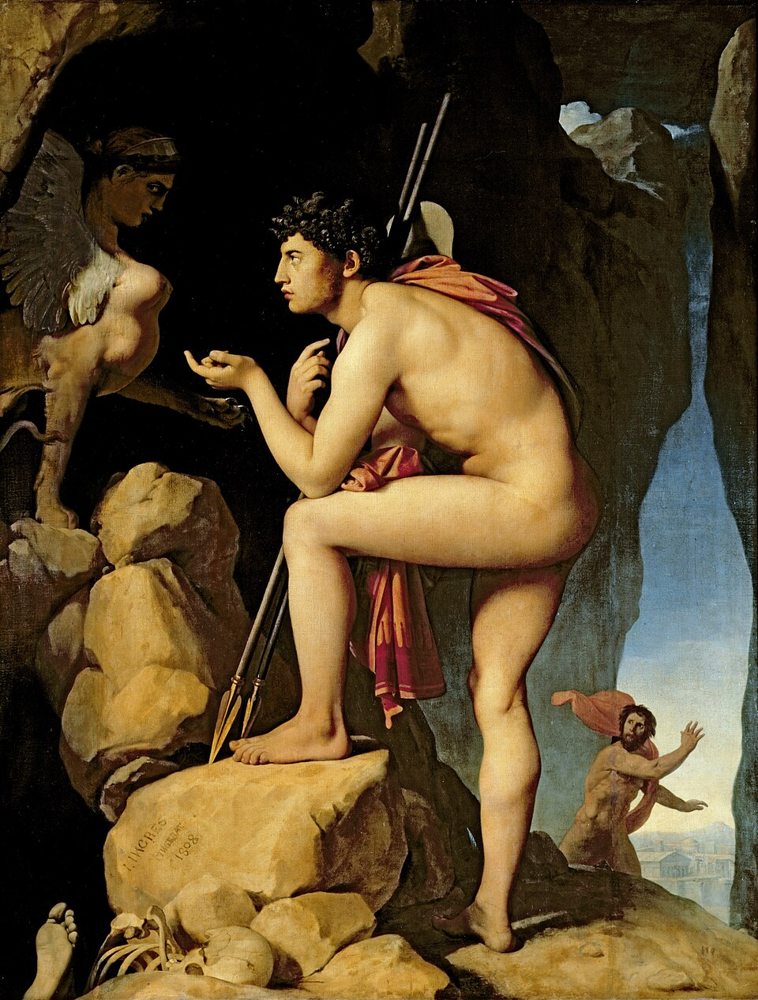

Edipo rey¶

Prólogo (1-150)¶
Pasolini: Edipo y el sacerdote
- Edipo (1-13)¶
Edipo aparece, en toda su majestad —considerado como el primero de los hombres—, ante el pueblo tebano azotado por la peste. Creonte trae la solución de Delfos: buscar al asesino de Layo y expulsarlo. Edipo promete hacerlo.
[1] ὦ τέκνα, Κάδμου τοῦ πάλαι νέα τροφή,
- νέα last-born （not "young," for τέκνα includes the old men, v. 17）, added for contrast with τοῦ πάλαι.
- Oedipus, —who believes himself a Corinthian （774）, —marks his respect for the ancient glories of the Theban house to whose throne he has been called: see esp. 258 f. So the Thebans are "στρατὸς Καδμογενής" Aesch. Seven 303, "Καδμογενὴς γέννα" Eur. Phoen. 808, or Καδμεῖο.
- τροφή = θρέμματα （abstract for concrete）; Eur. Cycl. 189 "ἀρνῶν τροφαί" = ἄρνες ἐκτεθραμμέναι. Cadmus, as guardian genius of Thebes, is still τροφεύς of all who are reared in the δῶμα Καδμεῖον （v. 29）. Campbell understands, "my last-born care derived from ancient Cadmus," —as though the τροφεύς were Oedipus. But could Κάδμου τροφή mean "[my] nurslings [derived from] Cadmus"?
- It is by the word τέκνα that Oedipus expresses his own fatherly care.
[2] τίνας ποθʼ ἕδρας τάσδε μοι θοάζετε
- ἕδρας The word ἕδρα= "posture," here, as usu., sitting: when kneelingis meant, some qualification is added, as Eur. Phoen. 293 "γονυπετεῖς ἕδρας προσπίτνω σ᾽," "I supplicate thee on my knees." The suppliants are sitting on the steps （βάθρα） of the altars, on which they have laid the κλάδοι: see 142: cp. 15 προσήμεθα, 20 θακεῖ: Aesch. Eum. 40 （Orestes a suppliant in the Delphian temple） ἐπ᾽ ὀμφαλῷ （on the omphalos） ἕδραν ἔχοντα προστρόπαιον ... ἐλαίας θ᾽ ὑψιγέννητον κλάδον.
- θοάζετε prob. = θάσσετε, "sit," ἕδρας being cognate acc. In Eur. θοάζω（θοός） always ="to hasten" （transitive or intrans.）. But Empedocles and Aesch. clearly use θοάζω as =θάσσω, the sound and form perh. suggesting the epic θαάσσω, θόωκος. See Appendix.
[3] ἱκτηρίοις κλάδοισιν ἐξεστεμμένοι;
- ἱκτηρίοις κλάδοισιν The suppliant carried a branch of olive or laurel （ἱκετηρία）, round which were twined festoons of wool（στέφη, στέμματα, —which words can stand for the ἱκετηρία itself, below 913, Hom. Il. 1.14）: Plut. Thes. 18 "ἦν δὲ [ἡ ἱκετηρία] κλάδος ἀπὸ τῆς ἱερᾶς ἐλαίας, ἐρίῳ λευκῷ κατεστεμμένος." He laid his branch on the altar （ Eur. Her. 124 "βωμὸν καταστέψαντες"）, and left it there, if unsuccessful in his petition （Eur. Supp. 259）; if successful, he took it away （Eur. Supp. 359, below 143）.
- ἱκτηρίοις κλάδοισιν ἐξεστεμμένοι= ἱκτηρίους κλάδους ἐξεστεμμένους ἔχοντες: Xen. Anab. 4.3.28 "διηγκυλωμένους τοὺς ἀκοντιστὰς καὶ ἐπιβεβλημένους τοὺς τοξότας," "the javelin-throwers with javelins grasped by the thong（ἀγκύλη）, and the archers with arrows fitted to the string." So 18 ἐξεστεμμένον absol., = provided with στέφη （i.e. with ἱκετηρίαι: see last note）. Triclinius supposes that the suppliants, besides carrying boughs, wore garlands（ἐστεφανωμένοι）, and the priests may have done so: but ἐξεστεμμ. does not refer to this.
[4] πόλις δʼ ὁμοῦ μὲν θυμιαμάτων γέμει,
- ὁμοῦ μὲν ... ὁμοῦ δὲ The verbal contrast is merely between the fumes of incense burnt on the altars as a propitiatory offering （ Hom. Il. 8.48 "τέμενος βωμός τε θυήεις）," and the sounds — whether of invocations to the Healer, or of despair.
[5] ὁμοῦ δὲ παιάνων τε καὶ στεναγμάτων·
[6] ἁγὼ δικαιῶν μὴ παρʼ ἀγγέλων, τέκνα,
[7] ἄλλων ἀκούειν αὐτὸς ὧδʼ ἐλήλυθα,
- ἄλλων Redundant, but serving to contrast ἀγγέλων and αὐτός, as if one said, "from messengers,—at second hand." Blaydes cp. Xen. Cyrop. 1.6.2 "ὅπως μὴ δι᾽ ἄλλων ἑρμηνέων τὰς τῶν θεῶν συμβουλίας συνείης, ἀλλ᾽ αὐτὸς ... γιγνώσκοις."
- ὧδ᾽ =δεῦρο, as in vv. 144, 298, and often in Soph.: even with βλέπειν, ὁρᾶν, as in Soph. Trach. 402 "βλέφ᾽ ὧδε" = βλέπε δεῦρο.
[8] ὁ πᾶσι κλεινὸς Οἰδίπους καλούμενος.
- ὁ πᾶσι κλεινὸς ... καλούμενος πᾶσι with κλεινός （cp. 40 πᾶσι κράτιστον）, not with καλούμενος: "called Oedipus famous in the sight of all," not "called famous Oed. by all." Cp. πασίγνωστος, πασίδηλος, πασιμέλουσα, πασίφιλος. The tone is Homeric （ Hom. Od. 9.19 "εἴμ᾽ Ὀδυσεύς ... καί μευ κλέος οὐρανὸν ἵκει," imitated by Verg. Aen. 1.378 sum pius Aeneas ... fama super aethera notus）: Oedipus is a type, for the frank heroic age, of Arist.'s μεγαλόψυχος—ὁ μεγάλων αὑτὸν ἀξιῶν, ἄξιος ὤν （Aristot. Nic. Eth. 4.3）
[9] ἀλλʼ ὦ γεραιέ, φράζʼ, ἐπεὶ πρέπων ἔφυς
- ἔφυς which is more than εἶ, refers, not to appearance（φυή）, but to the natural claim （φύσις） of age and office combined.
[10] πρὸ τῶνδε φωνεῖν, τίνι τρόπῳ καθέστατε,
- πρὸ τῶνδε "in front of," and so "on behalf of," "for" these. Ellendt: "Non est ἀντὶ τῶνδε, nec ὑπὲρ τῶνδε, sed μᾶλλον s. μάλιστα τῶνδε, prae ceteris dignus propter auctoritatem et aetatem." Rather ἀντὶ τῶνδε = "as their deputy": ὑπὲρ τῶνδε = "as their champion": πρὸ τῶνδε = "as their spokesman." So Soph. OC 811 "ἐρῶ γὰρ καὶ πρὸ τῶνδε."
- τίνι τρόπῳ with καθέστατε only: δείσαντες ἢ στέρξαντες = εἴτε ἐδείσατέ τι, εἴτε ἐστέρξατε （not πότερον δείσαντες; ἢ στέρξαντες;）, "in what mood are ye set here, whether it be one of fear or of desire?"
[11] δείσαντες ἢ στέρξαντες; ὡς θέλοντος ἂν
- στέρξαντες "having formed a desire": the aor. part., as Soph. Aj. 212 "ἐπεί σε ... ι στέρξας ἀνέχει" "is constant to the love which he hath formed for thee." Soph. El. 1100 "καὶ τί βουληθεὶς πάρει"; Soph. Aj. 1052 "αυτὸν ἐλπίσαντες ... ἄγειν." Cp. Soph. OC 1093 "καὶ τὸν ἀγρευτὰν Ἀπόλλω ι καὶ κασιγνήταν ... ι στέργω διπλᾶς ἀρωγὰς ι μολεῖν," "I desire": where, in such an invocation（ἰὼ ... Ζεῦ, ... πόροις, κ.τ.λ.）, στέργω surely cannot mean, "I am content." Oed. asks: "Does this supplication mean that some new dread has seized you （δείσαντες）? Or that ye have set your hearts （στέρξαντες） on some particular boon which I can grant?"—Others render στέρξαντες "having acquiesced." This admits of two views. （i） "Are ye afraid of suffering? Or have ye already learned to bear suffering?" To this point the glosses ὑπομείναντες, παθόντες. But this seems unmeaning. He knows that the suffering has come, and he does not suppose that they are resigned to it （cp. v. 58）. （ii） Prof. Kennedy connects ἢ στέρξαντες ὡς θέλοντος ἂν ι ἐμοῦ προσαρκεῖν πᾶν; i.e. are ye come in vague terror, or in contentment, as believing that I would be willing to help you? This is ingenious and attractive. But (a) it appears hardly consonant with the kingly courtesy of this opening speech for Oedipus to assume that their belief in his good-will would reconcile them to their present miseries. (b) We seem to require some direct and express intimation of the king's willingness to help, such as the words ὡς θέλοντος ... πᾶν give only when referred to φράζε. (c) The rhythm seems to favour the question at στέρξαντες. —στέξαντες, explained as "having endured," may be rejected, because （1） the sense is against it—see on （i） above: （2） στέγειν in classical Greek = "to be proof against," not "to suffer": （3） στέξω, ἔστεξα are unknown to Attic, which has only the pres. and the imperf.
- ὡς θέλοντος ἂν （to be connected with φράζε） implies the apodosis of a conditional sentence. Grammatically, this might be either （a） εἰ δυναίμην, θέλοιμι ἄν, or (b) εἰ ἠδυνάμην, ἤθελον ἄν: here, the sense fixes it to (a).
- ὡς, thus added to the gen. absol., expresses the supposition on which the agent acts. Xen. Mem. 2.6.32 "ὡς οὐ προσοίσοντος （ἐμοῦ） τὰς χεῖρας, ... δίδασκε:" "as （you may be sure） I will not lay hands on you, teach me."
[12] ἐμοῦ προσαρκεῖν πᾶν· δυσάλγητος γὰρ ἂν
[13] εἴην τοιάνδε μὴ οὐ κατοικτίρων ἕδραν.
- κατοικτίρων οἰκτίρω, not οἰκτείρω, is the spelling attested by Attic inscriptions of circ. 550-350 B.C.: see Meisterhans, Grammatik der Attischen Inschriften, p. 89. μὴ οὐ κατοικτίρων. An infinitive or participle, which for any reason would regularly take μή, usually takes μὴ οὐ if the principal verb of the sentence is negative. Here, δυσάλγητος = οὐκ εὐάλγητος: Dem. 19.123 "（πόλεις） χαλεπαὶ λαβεῖν ... μὴ οὐ χρόνῳ καὶ πολιορκίᾳ"（sc. λαμβάνοντι,） where χαλεπαί = οὐ ῥᾴδιαι: "cities not easy to take, unless by a protracted siege." The participial clause, μὴ οὐ κατοικτίρων, is equivalent to a protasis, εἰ μὴ κατοικτίροιμι. Prof. Kennedy holds that the protasis is εἰ μὴ θέλοιμι understood, and that μὴ οὐ κατοικτίρων is epexegetic of it: —"Yes（γάρ） I should be unfeeling, if I did not wish （to help you）: that is, if I refused to pity such a supplication as this." But the double negative μὴ οὐ could not be explained by a negative in the protasis （εἰ μὴ θέλοιμι）: it implies a negative in the apodosis （δυσάλγητος ἂν εἴην）. Since, then, the resolution into οὐκ εὐάλγητος ἂν εἴην is necessary, nothing seems to be gained by supposing a suppressed protasis, εἰ μὴ θέλοιμι.
- Ἱερεύς (14)¶
[14] ἀλλʼ ὦ κρατύνων Οἰδίπους χώρας ἐμῆς,
[15] ὁρᾷς μὲν ἡμᾶς ἡλίκοι προσήμεθα
[16] βωμοῖσι τοῖς σοῖς· οἱ μὲν οὐδέπω μακρὰν
- βωμοῖσι τοῖς σοῖς The altars of the προστατήριοι θεοί in front of the palace, including that of Apollo Λύκειος （919）.
- μακρὰν πτέσθαι. So Andromache to her child —"νεοσσὸς ὡσεὶ πτέρυγας ἐσπίτνων ἐμάς" Eur. Tro. 746. The proper Attic form for the aor. of πέτομαι was ἐπτόμην, which alone was used in prose and Comedy. Though forms from ἐπτάμην sometimes occur in Tragedy, as in the Homeric poems, Elms. had no cause to wish for πτάσθαι here.
[17] πτέσθαι σθένοντες, οἱ δὲ σὺν γήρᾳ βαρεῖς,
- σὺν γήρᾳ βαρεῖς = βαρεῖς ὡς γήρᾳ συνόντες. Soph. OC 1663 "σὺν νόσοις ι ἀλγεινός": Soph. Aj. 1017 "ἐν γήρᾳ βαρύς."
[18] ἱερῆς, ἐγὼ μὲν Ζηνός, οἵδε τʼ ᾐθέων
- ἐγὼ μὲν The answering clause, οἱ δὲ ἄλλων θεῶν, must be supplied mentally: cp. Hom. Il. 5.893 "τὴν μὲν ἐγὼ σπουδῇ δάμνησ᾽ ἐπέεσσι"（sc. τὰς δὲ ἄλλας ῥᾳδίως）. It is slightly different when μέν, used alone, emphasizes the personal pronoun, as in "ἐγὼ μὲν οὐκ οἶδα" Xen. Cyrop. 1.4.12.
- οἵδε τ᾽. The conjecture οἱ δ᾽ ἐπ᾽（"chosen to represent the youth"） involves a questionable use of ἐπί: cp. Soph. Ant. 787 n.
-
- ᾐθέων, unmarried youths: Hom. Il. 18.593 "ἠΐθεοι καὶ παρθένοι": Eur. Phoen. 944 "Αἵμονος ... γάμοι ι σφαγὰς ἀπείργουσ᾽: οὐ γάρ ἐστιν ᾔθεος": Plut. Thes. 15 "ᾐθέους ἑπτὰ καὶ παρθένους."
[19] λεκτοί· τὸ δʼ ἄλλο φῦλον ἐξεστεμμένον
- ἐξεστεμμένον see on 3.
[20] ἀγοραῖσι θακεῖ πρός τε Παλλάδος διπλοῖς
- ἀγοραῖσι local dative, like "οἰκεῖν οὐρανῷ" Pind. N. 10.58. Thebes was divided from N. to S. into two parts by the torrent called Strophia. The W. part, between the Strophia and the Dirce, was the upper town or Cadmeia: the E. part, between the Strophia and the Ismenus, was ἡ κάτω πόλις. The name Καδμεία was given especially to the S. eminence of the upper town, the acropolis. （1） One of the ἀγοραί meant here was on a hill to the north of the acropolis, and was the ἀγορὰ Καδμείας. See Paus. 9.12.3. （2） The other was in the lower town. Xen. Hell. 5.2.29 refers to this —ἡ βουλὴ ἐκάθητο ἐν τῇ ἐν ἀγορᾷ στοᾷ, διὰ τὸ τὰς γυναῖκας ἐν τῇ Καδμείᾳ θεσμοφοριάζειν: unless Καδμεία has the narrower sense of "acropolis." Cp. Aristot. Pol. 4.12.2 on the Thessalian custom of having two ἀγοραί— one, ἐλευθέρα, from which everything βάναυσον was excluded.
- πρός τε Παλλάδος ... ναοῖς. Not "both at the two temples," etc. as if this explained ἀγοραῖσι, but "and," etc.: for the ἀγοραί would have their own altars of the ἀγοραῖοι θεοί, as of Artemis （161）. One of the διπλοῖ ναοί may be that of Παλλὰς Ὄγκα, near the Ὀγκαία πύλη on the W. side of Thebes（"πύλας ι Ὄγκας Ἀθάνας" Aesch. Seven 487, "Ὄγκα Παλλάς" Aesch. Seven 501）, whose statue and altar ἐν ὑπαίθρῳ Paus. mentions （9. 12. 2）. The other temple may be that of Athene Καδμεία or of Athena Ἰσμηνία— both mentioned by the schol., but not by Paus. Athena Ζωστηρία, too, had statues at Thebes （Paus. 9.17.3）. The schol. mentions also Ἀλαλκομενία, but her shrine was at the village of Alalcomenae near Haliartus （Paus. 9.23.5）. It was enough for Soph. that his Athenian hearers would think of the Erechtheum and the Parthenon—the shrines of the Polias and the Parthenos—above them on the acropolis.
[21] ναοῖς, ἐπʼ Ἰσμηνοῦ τε μαντείᾳ σποδῷ.
- ἐπ᾽ Ἰσμ. μ. σποδῷ "The oracular ashes of Ismenus" = the altar in the temple of Apollo Ἰσμήνιος, where divination by burnt offerings（ἡ δι᾽ ἐμπύρων μαντεία） was practised. So the schol., quoting Philochorus （in his περὶ μαντικῆς, circ. 290 B.C.）.
- σποδῷ: the embers dying down when the μαντεῖον has now been taken from the burnt offering: cp. Soph. Ant. 1007. Soph. may have thought of Ἀπόλλων Σπόδιος, whose altar（ἐκ τέφρας τῶν ἱερείων） Paus. saw to the left of the Electrae gates at Thebes: 9. 11. 7.
- Ἰσμηνοῦ, because the temple was by the river Ismenus: Paus. 9.10.2 "ἔστι δὲ λόφος ἐν δεξιᾷ τῶν πυλῶν" （on the right of the Ἠλέκτραι πύλαι on the S. of Thebes, within the walls） ἱερὸς Ἀπόλλωνος: καλεῖται δὲ ὅ τε λόφος καὶ ὁ θεὸς Ἰσμήνιος, παραρρέοντος τοῦ ποταμοῦ ταύτῃ τοῦ Ἰσμηνοῦ. Ismenus （which name Curt. Etym. 617, connects with rt ἰς, to wish, as = "desired"） was described in the Theban myths as the son of Asopus and Metope, or of Amphion and Niobe. The son of Apollo by Melia （the fountain of the Ismenus） was called Ismenius. Cp. Hdt. 8.134 （the envoy of Mardonius in the winter of 480-79） τῷ Ἰσμηνίῳ Ἀπόλλωνι ἐχρήσατο: ἔστι δὲ κατάπερ ἐν Ὀλυμπίῃ ἱροῖσι χρηστηριάζεσθαι: Pind. O. 8.1 ff. "Οὐλυμπία ι ... ἵνα μάντιες ἄνδρες ι ἐμπύροις τεκμαιρόμενοι παραπειρῶνται Διός." In Pind. P. 11.4 the Theban heroines are asked to come πὰρ Μελίαν （because she shared Apollo's temple） "to the holy treasure-house of golden tripods, which Loxias hath honoured exceedingly, and hath named it Ismenian, a truthful seat of oracles" （MSS. μαντείων, not μαντίων, Fennell）: for the tripod dedicated by the δαφναφόρος, or priest of Ismenian Apollo, see Paus. 9.10.4. Her. saw offerings dedicated by Croesus to Amphiaraus ἐν τῷ νηῷ τοῦ Ἰσμηνίου Ἀπόλλωνος （1. 52）, and notices inscriptions there （5. 59）. The Ἰσμήνιον, the temple at Abae in Phocis, and that on the hill Πτῶον to the E. of Lake Copais, were, after Delphi, the chief shrines of Apollo in N. Greece.
[22] πόλις γάρ, ὥσπερ καὐτὸς εἰσορᾷς, ἄγαν
[23] ἤδη σαλεύει κἀνακουφίσαι κάρα
[24] βυθῶν ἔτʼ οὐχ οἵα τε φοινίου σάλου,
- βυθῶν "from the depths," i.e. out of the trough of the waves which rise around. Cp. Soph. Ant. 337 "περιβρυχίοισιν ι περῶν ὑπ᾽ οἴδμασιν," under swelling waves which threaten to engulf him. Arat. 426 ὑπόβρυχα ναυτίλλονται.
- φοινίου here merely poet. for θανασίμου, as Soph. Trach. 770 "φοινίας ι ἐχθρᾶς ἐχίδνης ἰός": Soph. OC 1689 "φόνιος Ἀΐδας." But in Soph. Aj. 351 "φοινία ζάλη"= the madness which drove Ajax to bloodshed.
- ἔτ᾽ οὐχ οἵα τε: for position of ἔτ᾽, cp. Soph. Trach. 161 "ὡς ἔτ᾽ οὐκ ὤν", Soph. Phil. 1217 "ἔτ᾽ οὐδέν εἰμι." With οἷός τε the verb is often omitted, as 1415, Soph. OC 1136, Soph. Trach. 742, Aristoph. Kn. 343.
[25] φθίνουσα μὲν κάλυξιν ἐγκάρποις χθονός,
- φθίνουσα μὲν ... φθίνουσα δέ rhetorical iteration（ἐπαναφορά）; cp. 259, 370, Soph. OC 5, 610, etc. The anger of heaven is shown （1） by a blight （φθίνουσα） on the fruits of the ground, on flocks and on child-birth: （2） by a pestilence （λοιμός） which ravages the town. Cp. 171 ff. For the threefold blight, Hdt. 6.139 "ἀποκτείνασι δὲ τοῖσι Πελασγοῖσι τοὺς σφετέρους παῖδάς τε καὶ γυναῖκας οὔτε γῆ καρπὸν ἔφερε οὔτε γυναῖκές τε καὶ ποῖμναι ὁμοίως ἔτικτον καὶ πρὸ τοῦ": Aeschin. 3.111 "μήτε γῆν καρποὺς φέρειν μήτε γυναῖκας τέκνα τίκτειν γονεῦσιν ἐοικότα, ἀλλὰ τέρατα, μήτε βοσκήματα κατὰ φύσιν γονὰς ποιεῖσθαι." Schneid. and Blaydes cp. Philostr. Apoll. 3.20, p. 51. 21 ἡ γῆ οὐ ξυνεχώρει αὐτοῖς ἵστασθαι: τήν τε γὰρ σπορὰν ἣν ἐς αὐτὴν ἐποιοῦντο, πρὶν ἐς κάλυκα ἥκειν, ἔφθειρε, τούς τε τῶν γυναικῶν τόκους ἀτελεῖς ἐποίει, καὶ τὰς ἀγέλας πονηρῶς ἔβοσκεν.
- κάλυξιν ἐγκάρποις The datives mark the points or parts in which the land φθίνει. κάλυξιν ἔγκαρπος is the shell or case which encloses immature fruit, —whether the blossom of fruit-trees, or the era of wheat or barley: Theophr. Hist. Plant. 8.2.4 （of κριθή and πυρός） πρὶν ἂν προαύξηθεὶς （ὁ στάχυς） ἐν τῇ κάλυκι γένηται.
[26] φθίνουσα δʼ ἀγέλαις βουνόμοις τόκοισί τε
- ἀγέλαις βουνόμοις （paroxyt.） =ἀγέλαι βοῶν νεμομένων: but ἀκτὴ βούνομος, proparoxyt., a shore on which oxen are pastured, Soph. El. 181. Cp. Soph. El. 861 "χαλαργοῖς ἐν ἁμίλλαις" = ἁμίλλαις ἀργῶν χηλῶν: Pind. P. 5.28 "ἀρισθάρματον ... γέρας" = γέρας ἀρίστου ἅρματος. The epithet marks that the blight on the flocks is closely connected with that on the pastures: cp. Dionys. Hal. 1. 23 （describing a similar blight） οὔτε πόα κτήνεσιν ἐφύετο διαρκής.
- τόκοισι, the labours of child-bed: Eur. Med. 1031 "στερρὰς ἐνεγκοῦσ᾽ ἐν τόκοις ἀλγηδόνας": Eur. IT 1466 "γυναῖκες ἐν τόκοις ψυχορραγεῖς." Dion. Hal. 1.23 "ἀδελφὰ δὲ τούτοις"（i.e. to the blight on fruits and crops） ἐγίνετο περί τε προβάτων καὶ γυναικῶν γονάς: ἢ γὰρ ἐξημβλοῦτο τὰ ἔμβρυα, ἢ κατὰ τοὺς τόκους διεφθείρετο ἔστιν ἂ καὶ τὰς φερούσας συνδιαλυμηνάμενα.
[27] ἀγόνοις γυναικῶν· ἐν δʼ ὁ πυρφόρος θεὸς
- ἀγόνοις abortive, or resulting in a still birth.
- ἐν δ᾽, adv., "and among our other woes," "and withal": so 183, Soph. Trach. 206, Soph. Aj. 675. Not in "tmesis" with σκήψας, though Soph. has such tmesis elsewhere, Soph. Ant. 420 "ἐν δ᾽ ἐμεστώθη," Soph. Ant. 1274 "ἐν δ᾽ ἔσεισεν." For the simple σκήψας, cp. Aesch. Ag. 308 "εἶτ᾽ ἔσκηψεν," "then it swooped." So Aesch. Pers. 715 "λοιμοῦ τις ἦλθε σκηπτός." ὁ πυρφόρος θεὸς, the bringer of the plague which spreads and rages like fire （176 κρεῖσσον ἀμαιμακέτου πυρός, 191 φλέγει με）: but also with reference to fever, πυρετός. Hippoc. 4.140 "ὁκόσοισι δὲ τῶν ἀνθρώπων πῦρ （"= πυρετὸς） ἐμπίπτῃ: Hom. Il. 22.31 "καί τε φέρει"（Seirius） πολλὸν πυρετὸν δειλοῖσι βροτοῖσι （the only place where πυρετός occurs in Il. or Od.）. In Soph. OC 55 "ἐν δ᾽ ὁ πυρφόρος θεὸς ι Τιτὰν Προμηθεύς" refers to the representation of Prometheus with the narthex, or a torch, in his right hand （ Eur. Phoen. 1121 "δεξιᾷ δὲ λαμπάδα ι Τιτὰν Προμηθεὺς ἔφερεν ὥς"）. Cp. Aesch. Seven 432 "ἄνδρα πυρφόρον, ι φλέγει δὲ λαμπάς, κ.τ.λ." Here also the Destroyer is imagined as armed with a deadly brand, —against which the Chorus presently invoke the holy fires of Artemis （206） and the "blithe torch" of Dionysus （214）. For θεὸς said of λοιμός, cp. Simonid. Amorg. fr. 7. 101 οὐδ᾽ αἶψα λιμὸν οἰκίης ἀπώσεται, ι ἐχθρὸν συνοικητῆρα, δυσμενέα θεόν. Soph. fr. 837 ἀλλ᾽ ἡ φρόνησις ἁγαθὴ θεὸς μέγας.
[28] σκήψας ἐλαύνει, λοιμὸς ἔχθιστος, πόλιν,
[29] ὑφʼ οὗ κενοῦται δῶμα Καδμεῖον, μέλας δʼ
- μέλας δ᾽ elision at end of v. is peculiar in Trag. to Soph., who is said to have adopted it from a poet Callias （Athen. 10 p. 453 E）: hence it was called εἶδος Σοφόκλειον. Examples: δ᾽ 785, 791, 1224; Soph. OC 17; Soph. Ant. 1031; Soph. El. 1017: τ᾽ below, 1184: ταῦτ᾽ 332. [In Soph. OC 1164 "μολόντ᾽" should prob. be μόνον.] In Comedy: "δ᾽" Eur. Hipp. 1716, Aristoph. Eccl. 351: "μ᾽" Aristoph. Frogs 298.
[30] Ἅιδης στεναγμοῖς καὶ γόοις πλουτίζεται.
- πλουτίζεται with allusion to Πλόύτων, as Hades was called by an euphemism（ὑποκοριστικῶς, schol. Aristoph. Pl. 727）, ὅτι ἐκ τῆς κάτωθεν ἀνίεται ὁ πλοῦτος （crops and metals）, as Plato says, Plat. Crat. 403a. Cp. Soph. fr. 251 （Nauck(2)） （from the satyric drama Inachus） Πλούτωνος （= Ἅιδου） ἥδ᾽ ἐπείσοδος: Lucian Timon 21（Πλοῦτος speaks）, ὁ Πλούτων （Hades） ἀποστέλλει με παρ᾽ αὐτοὺς ἅτε πλουτοδότης καὶ μεγαλόδωρος καὶ αὐτὸς ὤν: δηλοῖ γοῦν καὶ τῷ ὀνόματι. Schneid. cp. Statius Theb. 2.48 pallentes devius umbras Trames agit nigrique Iovis vacua atria ditat Mortibus.
[31] θεοῖσι μέν νυν οὐκ ἰσούμενόν σʼ ἐγὼ
- μέν νυν as in Soph. Trach. 441.
- οὐκ ἰσούμενόν σ᾽, governed by κρίνοντες in 34. But he begins as if instead of ἑζόμεσθ᾽ ἐφέστιοι, ἱκετεύομεν were to follow: hence ἰσούμενον instead of ἴσον. It is needless to take ἰσούμενον （1） as accus. absol., or （2） as governed by ἑζόμεσθ᾽ ἐφέστιοι in the sense of ἱκετεύομεν, —like φθορὰς ... ψήφους ἔθεντο Aesch. Ag. 814, or γένος ... νέωσον αἶνονAesch. Supp. 533. Musgrave conj. ἰσούμενοι as = "deeming equal," but the midd. would mean "making ourselves equal," like "ἀντισουμένου" Thuc. 3.11. Plato has ἰσούμενον as passive in Plat. Phaedrus 238e, and ἰσοῦσθαι as passive in Plat. Parm. 156b: cp. 581 ἰσοῦμαι.
[32] οὐδʼ οἵδε παῖδες ἑζόμεσθʼ ἐφέστιοι,
[33] ἀνδρῶν δὲ πρῶτον ἔν τε συμφοραῖς βίου
[34] κρίνοντες ἔν τε δαιμόνων συναλλαγαῖς·
- δαιμόνων συναλλαγαῖς = "conjunctures" caused by gods （subjective gen.）, special visitations, as opposed to the ordinary chances of life（συμφοραῖς βίου）. Such συναλλαγαί were the visit of the Sphinx （130） and of the πυρφόρος θεός （27）. Cp. 960 νόσου συναλλαγῇ, a visitation in the form of disease （defining gen.）. Here, the sense might indeed be, "dealings （of men） with gods," = ὅταν ἄνθρωποι συναλλάσσωνται δαίμοσιν: but the absolute use of συναλλαγή for "a conjuncture of events" in Soph. OC 410 （n.） favours the other view. In Soph. Trach. 845 "ὀλεθρἱαισι συναλλαγαῖς"= "at the fatal meeting" of Deianeira with Nessus. But in Soph. Ant. 157 "θεῶν συντυχίαι" = fortunes sent by gods. The common prose sense of συναλλαγή is "reconciliation," which Soph. has in Soph. Aj. 732.
[35] ὅς γʼ ἐξέλυσας ἄστυ Καδμεῖον μολὼν
- ὅς γ᾽ The γ᾽ of the MSS. suits the immediately preceding verses better than the conjectural τε, since the judgment（κρίνοντες） rests solely on what Oed. has done, not partly on what he is expected to do. Owing to the length of the first clause （35-39） τ᾽ could easily be added to νῦν in 40 as if another τε had preceded. ἐξέλυσας ... δασμὸν. The notion is not, "paid it in full," but "loosed it," —the thought of the tribute suggesting that of the riddle which Oed. solved. Till he came, the δασμός was as a knotted cord in which Thebes was bound. Cp. Soph. Trach. 653 "Ἄρης ... ἐξέλυσ᾽ ι ἐπίπονον ἁμέραν," "has burst the bondage of the troublous day." Eur. Phoen. 695 "ποδῶν σῶν μόχθον ἐκλύει παρών," "his presence dispenses with （solves the need for） the toil of thy feet." This is better than （1） "freed the city from the songstress, in respect of the tribute," or （2） "freed the city from the tribute（δασμόν by attraction for δασμοῦ） to the songstress."
[36] σκληρᾶς ἀοιδοῦ δασμὸν ὃν παρείχομεν,
- σκληρᾶς "hard," stubborn, relentless. Eur. Andr. 261 "σκληρὸν θράσος." In 391 κύων expresses a similar idea.
[37] καὶ ταῦθʼ ὑφʼ ἡμῶν οὐδὲν ἐξειδὼς πλέον
- καὶ ταῦθ᾽ "and that too": Soph. Ant. 322（ἐποίησας τὸ ἔργον） καὶ ταῦτ᾽ ἐπ᾽ ἀργυρῷ γε τὴν ψυχὴν προδούς: Soph. El. 614. οὐδὲν ... πλέον, nothing more than anyone else knew; nothing that could help thee. Plat. Crat. 387a "πλέον τι ἡμῖν ἔσται," we shall gain something. Plat. Sym. 217c "οὐδὲν γάρ μοι πλέον ἦν," it did not help me. ἐξειδὼς ... ἐκδιδαχθείς: not having heard （incidentally）—much less having been thoroughly schooled.
[38] οὐδʼ ἐκδιδαχθείς, ἀλλὰ προσθήκῃ θεοῦ
- προσθήκῃ θεοῦ "by the aid of a god." Dem. 25.24 "ἡ εὐταξία τῇ τῶν νόμων προσθήκῃ τῶν αἰσχρῶν περίεστι," "discipline, with the support of the laws, prevails against villainy." Dion. Hal. 5.67 "προσθήκης μοῖραν ἐπεῖχον οὗτοι τοῖς ἐν φάλαγγι τεταγμένοις," "these served as supports to the main body of the troops." προστίθεσθαί τινι, to take his side: Thuc. 6.80 "τοῖς ἀδικουμένοις ... προσθεμένους": so Soph. OC 1332 "οἷς ἂν σὺ προσθῇ." （The noun προσθήκη does not occur as = "mandate," though Hdt. 3.62 has τό τοι προσέθηκα πρῆγμα.） The word is appropriate, since the achievement of Oed. is viewed as essentially a triumph of human wit: a divine agency prompted him, but remained in the background.
[39] λέγει νομίζει θʼ ἡμὶν ὀρθῶσαι βίον·
[40] νῦν τʼ, ὦ κράτιστον πᾶσιν Οἰδίπου κάρα,
- νῦν τ᾽ it is unnecessary to read νῦν δ᾽: see on 35. πᾶσιν, ethical dat. masc. （cp. 8）, "in the eyes of all men." Soph. Trach. 1071 "πολλοῖσιν οἰκτρόν."
[41] ἱκετεύομέν σε πάντες οἵδε πρόστροποι
[42] ἀλκήν τινʼ εὑρεῖν ἡμίν, εἴτε του θεῶν
- εἴτε οἶσθα ἀλκήν, ἀκούσας φήμην θεῶν του （by having heard a voice from some god）, εἴτε οἶσθα ἀλκὴν ἀπ᾽ ἀνδρός που. We might take ἀπ᾽ ἀνδρὸς with ἀλκήν, but it is perh. simpler to take it with οἶσθα: cp. 398 ἀπ᾽ οἰωνῶν μαθών, Thuc. 1.125 "ἐπειδὴ ἀφ᾽ ἁπάντων ἤκουσαν τὴν γνώμην": though παρά （or πρός） τινος is more frequent.
[43] φήμην ἀκούσας εἴτʼ ἀπʼ ἀνδρὸς οἶσθά του·
- φήμην any message （as in a dream, "φήμη ὀνείρου," Hdt. 1.43）, any rumour, or speech casually heard, which might be taken as a hint from the god. Hom. Od. 20.98 "Ζεῦ πάτερ ... ι φήμην τίς μοι φάσθω ... " （Odysseus prays）, "Let some one, I pray, show me a word of omen." Then a woman, grinding corn within, is heard speaking of the suitors, "may they now sup their last": χαῖρεν δὲ κλεηδόνι δῖος Ὀδυσσεύς, "rejoiced in the sign of the voice." ὀμφή was esp. the voice of an oracle; κληδών comprised inarticulate sounds（"κλ. δυσκρίτους," Aesch. PB 486）.
[44] ὡς τοῖσιν ἐμπείροισι καὶ τὰς ξυμφορὰς
- ὡς τοῖσιν ... βουλευμάτων I take these two verses with the whole context from v. 35, and not merely as a comment on the immediately preceding words εἴτ᾽ ἀπ᾽ ἀνδρὸς οἶσθά που. Oedipus has had practical experience（ἐμπειρία） of great troubles; when the Sphinx came, his wisdom stood the trial. Men who have become thus ἔμπειροι are apt to be also （καί） prudent in regard to the future. Past facts enlighten the counsels which they offer on things still uncertain; and we observe that the issues of their counsels are not usually futile or dead, but effectual. Well may we believe, then, that he who saved us from the Sphinx can tell us how to escape from the plague. Note these points. （1） The words ἐμπείροισι and βουλευμάτων serve to suggest the antithesis between past and future. （2） τὰς ξυμφορὰς ... τῶν βουλευμάτων= literally, the occurrences connected with （resulting from） the counsels. The phrase, "issues of counsels," concisely expresses this. The objection which has been made to this version, that ξυμφορά is not τελευτή, rests on a grammatical fallacy, viz., that, in ξυμφορὰ βουλεύματος, the genitive must be of the same kind as in τελευτὴ βουλεύματος. τύχη is not τελευτή, yet in Soph. OC 1506 it stands with a gen. of connection, just as ξυμφορά does here:（θεῶν） τύχην τις ἐσθλὴν τῆσδ᾽ ἔθηκε τῆς ὁδοῦ （a good fortune connected with this coming）. Cp. Thuc. 1.140 "ἐνδέχεται γὰρ τὰς ξυμφορὰς τῶν πραγμάτων οὐχ ἦσσον ἀμαθῶς χωρῆσαι ἢ καὶ τὰς διανοίας τοῦ ἀνθρώπου": the issues of human affairs can be as incomprehensible in their course as the thoughts of man （where, again, the "occurrences connected with human affairs" would be more literal）: ib. πρὸς τὰς ξυμφορὰς καὶ τὰς γνώμας τρεπομένους, altering their views according to the events. Thuc. 3.87 "τῆς ξυμφορᾶς τῷ ἀποβάντι," by the issue which has resulted. （3）
[45] ζώσας ὁρῶ μάλιστα τῶν βουλευμάτων.
- ζώσας is not "successful," but "operative," —effectual for the purpose of the βουλεύματα: as v. 482 ζῶντα is said of the oracles which remain operative against the guilty, and Soph. Ant. 457 "ζῇ ταῦτα" of laws which are ever in force. Conversely λόγοι θνῄσκοντες μάτην （Aesch. Lib. 845） are threats which come to nothing. The scholium in L gives the sense correctly:— ἐν τοῖς συνετοῖς τὰς συντυχίας καὶ τὰς ἀποβάσεις τῶν βουλευμάτων ὁρῶ ζώσας καὶ οὐκ ἀπολλυμένας. See Appendix.
[46] ἴθʼ, ὦ βροτῶν ἄριστʼ, ἀνόρθωσον πόλιν,
[47] ἴθʼ, εὐλαβήθηθʼ· ὡς σὲ νῦν μὲν ἥδε γῆ
- εὐλαβήθηθ᾽ have a care for thy repute— as the next clause explains. Oed. is supposed to be above personal risk; it is only the degree of his future glory （55） which is in question; a fine touch, in view of the destined sequel.
[48] σωτῆρα κλῄζει τῆς πάρος προθυμίας·
- τῆς πάρος προθυμίας causal genit.: Plat. Crito 43b "πολλάκις μὲν δή σε ... εὐδαιμόνισα τοῦ τρόπου."
[49] ἀρχῆς δὲ τῆς σῆς μηδαμῶς μεμνώμεθα
- μεμνώμεθα This subjunctive occurs also in Hom. Od. 14.168 "πῖνε καὶ ἄλλα παρὲξ μεμνώμεθα," Plat. Stat. 285c "φυλάττωμεν ... καὶ ... μεμνώμεθα," Plat. Phileb. 31a "μεμνώμεθα δὴ καὶ ταῦτα περὶ ἀμφοῖν." Eustathius （1303. 46, 1332. 18） cites the word here as μεμνῴμεθα （optative）. We find, indeed, "μεμνῷο" Xen. Anab. 1.7.5 （v. l. μεμνῇο）, "μεμνεῷτο" Hom. Il. 23.361, "μεμνῷτο" Xen. Cyrop. 1.6.3, but these are rare exceptions. On the other hand, "μεμνῄμην" Hom. Il. 24.745, "μεμνῇτο" Aristoph. Pl. 991, Plat. Rep. 518a. If Soph. had meant the optative he would have written μεμνῄμεθα: cp. Soph. Phil. 119 "ἂν ... κεκλῇο." See Curtius Greek Verb 2.226 （Eng. tr. p. 423）. The personal appeal, too, here requires the subjunct., not optat.: cp. Soph. OC 174 "μὴ δῆτ᾽ ἀδικηθῶ," Soph. Trach. 802 "μηδ᾽ αὐτοῦ θάνω."
[50] στάντες τʼ ἐς ὀρθὸν καὶ πεσόντες ὕστερον.
- στάντες τ᾽ For partic. with μέμνημαι cp. Xen. Cyrop. 3.1.31 "ἐμέμνητο γὰρ εἰπών": Pind. N. 2.15 "θνατὰ μεμνάσθω περιστέλλων μέλη": for τε ... καί, Soph. Ant. 1112 "αὐτός τ᾽ ἔδησα καὶ παρὼν ἐκλύσομαι," as I bound, so will I loose.
[51] ἀλλʼ ἀσφαλείᾳ τήνδʼ ἀνόρθωσον πόλιν·
- ἀσφαλείᾳ "in steadfastness": a dative of manner, equivalent to ἀσφαλῶς in the proleptic sense of ὥστε ἀσφαλῆ εἶναι. Cp. Soph. OC 1318 "κατασκαφῇ ι. . δῃώσειν," n. Thuc. 3.56 "οἱ μὴ τὰ ξύμφορα πρὸς τὴν ἔφοδον αὑτοῖς ἀσφαλείᾳ πράσσοντες," those who securely made terms on their own account which were not for the common good in view of the invasion. Thuc. 2.82 "ἀσφαλείᾳ δὲ τὸ ἐπιβουλεύσασθαι" （where ἀσφάλεια is a false reading）, to form designs in security, opp. to τὸ ἐμπλήκτως ὀξύ, fickle impetuosity. The primary notion of ἀσφαλής （"not slipping"） is brought out by πεσόντες and ἀνόρθωσον.
[52] ὄρνιθι γὰρ καὶ τὴν τότʼ αἰσίῳ τύχην
- ὄρνιθι ... αἰσίῳ like secunda alite or fausta avi for bono omine. A bird of omen was properly οἰωνός: Hom. Od. 15.531 "οὔ τοι ἄνευ θεοῦ ἔπτατο δεξιὸς ὄρνις: ι ἔγνων γάρ μιν ἐσάντα ἰδὼν οἰωνὸν ἐόντα": Xen. Cyrop. 3.3.22 "οἰωνοῖς χρησάμενος αἰσίοις." But cp. Eur. IA 607 "ὄρνιθα μὲν τόνδ᾽ αἴσιον ποιούμεθα": Eur. Her. 730 "ὄρνιθος οὕνεκα": Aristoph. Birds 720 "φήμη γ᾽ ὑμῖν ὄρνις ἐστί, πταρμόν τ᾽ ὄρνιθα καλεῖτε, ι ξύμβολον ὄρνιν, φωνὴν ὄρνιν, θεράποντ᾽ ὄρνιν, ὄνον ὄρνιν." For dat., Schneid. cp. Hipponax fr. 63 （Bergk） δεξιῷ ... ἐλθὼν ῥωδιῷ（heron）. In Bergk Poet. Lyr. p. 1049 fr. incerti 27 δεξιῇ σίττῃ （woodpecker） is a conject. for δεξιὴ σίττη. καὶ is better taken as = "also" than as "both" （answering to καὶ τανῦν in 53）.
[53] παρέσχες ἡμῖν, καὶ τανῦν ἴσος γενοῦ.
[54] ὡς εἴπερ ἄρξεις τῆσδε γῆς, ὥσπερ κρατεῖς,
- ἄρξεις ... κρατεῖς ... κρατεῖν κρατεῖν τινός, merely to hold in one's power; ἄρχειν implies a constitutional rule. Cp. Plat. Rep. 338d "οὐκοῦν τοῦτο κρατεῖ ἐν ἑκάστῃ πόλει, τὸ ἄρχον;" Her. 2. i ἄλλους τε παραλαβὼν τῶν ἦρχε καὶ δὴ καὶ Ἑλλήνων τῶν ἐπεκράτεε, i.e. the Asiatics who were his lawful subjects, and the Greeks over whom he could exert force. But here the poet intends no stress on a verbal contrast: it is as if he had written, εἴπερ ἄρξεις, ὥσπερ ἄρχεις. Cp. Soph. Trach. 457 "κεἰ μὲν δέδοικας, οὐ καλῶς ταρβεῖς": below 973 προὔλεγον ... ι ηὔδας.
[55] ξὺν ἀνδράσιν κάλλιον ἢ κενῆς κρατεῖν·
- ξὺν ἀνδράσιν not "with the help of men," but "with men in the land," = ἄνδρας ἐχούσης γῆς. Cp. 207 ξὺν αἷς = ἃς ἔχουσα. Soph. El. 191 "ἀεικεῖ σὺν στολᾷ": Soph. Aj. 30 "σὺν νεορράντῳ ξίφει." Soph. Ant. 116 "ξύν θ᾽ ἱπποκόμοις κορύθεσσι."
[56] ὡς οὐδέν ἐστιν οὔτε πύργος οὔτε ναῦς
- ὡς οὐδέν ἐστιν Thuc. 7.77 "ἄνδρες γὰρ πόλις, καὶ οὐ τείχη οὐδὲ νῆες ἀνδρῶν κεναί." Dio Cass. 56. 6 "ἄνθρωποι γάρ που πόλις ἐστίν, οὐκ οἰκίαι, κ.τ.λ." Hdt. 8.61 （Themistocles, taunted by Adeimantus after the Persian occupation of Athens in 480 B.C. with being ἄπολις, retorted） ἑωυτοῖσι ... ως εἴη καὶ πόλις καὶ γῆ μέζων ἤπερ κείνοισι, ἔστ᾽ ἂν διηκόσιαι νῆές σφι ἔωσι πεπληρωμέναι. πύργος = the city wall with its towers: the sing. as below, 1378: Soph. Ant. 953 "οὐ πύργος, οὐχ ἁλίκτυποι ι ... νᾶες": Eur. Hec. 1209 "πέριξ δὲ πύργος εἶχ᾽ ἔτι πτόλιν."
[57] ἔρημος ἀνδρῶν μὴ ξυνοικούντων ἔσω.
- [57] Lit., "void of men, when they do not dwell with thee in the city": ἀνδρῶν depends on ἔρημος, of which μὴ ξυνοικούντων ἔσω is epexegetic. Rhythm and Sophoclean usage make this better than to take ἀνδρῶν μὴ ξυνοικ. ἔ. as a gen. absol. Cp. Soph. Aj. 464 "γυμνὸν φανέντα τῶν ἀριστείων ἄτερ": Soph. Phil. 31 "κενὴν οἴκησιν ἀνθρώπων δίχα": Lucret. 5.841 muta sine ore etiam, sine voltu caeca.
Οἰδίπους (58)¶
[58] ὦ παῖδες οἰκτροί, γνωτὰ κοὐκ ἄγνωτά μοι
- [58] γνωτὰ κοὐκ ἀγνῶτα The emphasis of this formula sometimes appears to deprecate an opposite impression in the mind of the hearer: "known, and not （as you perhaps think） unknown." Hom. Il. 3.59 "ἐπεί με κατ᾽ αἶσαν ἐνείκεσας οὐδ᾽ ὑπὲρ αἶσαν," duly, and not, —as you perhaps expect me to say, —unduly. Hdt. 3.25 "ἐμμανής τε ἐὼν καὶ οὐ φρενήρης"— being mad, —for it must be granted that no man in his right mind would have acted thus. Soph. OC 397 "βαιοῦ κοὐχὶ μυρίου χρόνου," soon, and not after such delay as thy impatience might fear.
[59] προσήλθεθʼ ἱμείροντες· εὖ γὰρ οἶδʼ ὅτι
[60] νοσεῖτε πάντες, καὶ νοσοῦντες, ὡς ἐγὼ
- [60] νοσοῦντες ... νοσεῖ We expected καὶ νοσοῦντες οὐ νοσεῖτε, ὡς ἐγώ. But at the words ὡς ἐγώ the speaker's consciousness of his own exceeding pain turns him abruptly to the strongest form of expression that he can find —οὐκ ἔστιν ὑμῶν ὅστις νοσεῖ, there is not one of you whose pain is as mine. In Plat. Phileb. 19b （quoted by Schneid.） the source of the anacolouthon is the same: μὴ γὰρ δυνάμενοι τοῦτο κατὰ παντὸς ἑνὸς καὶ ὁμοίου καὶ ταὐτοῦ δρᾶν καὶ τοῦ ἐναντίου, ὡς ὁ παρελθὰν λόγος ἐμήνυσεν, οὐδεὶς εἰς οὐδὲν οὐδενὸς ἂν ἡμῶν οὐδέποτε γένοιτο ἄξιος, — instead of the tamer οὐκ ἂν γενοίμεθα.
[61] οὐκ ἔστιν ὑμῶν ὅστις ἐξ ἴσου νοσεῖ.
[62] τὸ μὲν γὰρ ὑμῶν ἄλγος εἰς ἕνʼ ἔρχεται
- [62] εἰς ἕν᾽ ... μόνον καθ᾽ αὑτόν καθ᾽ αὑτόν, "by himself" （Soph. OC 966）, is strictly only an emphatic repetition of μόνον: but the whole phrase εἰς ἕνα μόνον καθ᾽ αὑτόν is virtually equivalent to εἰς ἕνα ἕκαστον καθ᾽ αὑτόν, each several one apart from the rest.
[63] μόνον καθʼ αὑτὸν κοὐδένʼ ἄλλον, ἡ δʼ ἐμὴ
[64] ψυχὴ πόλιν τε κἀμὲ καὶ σʼ ὁμοῦ στένει.
- [64] πόλιν τε κἀμὲ καὶ σ᾽ The king's soul grieves for the whole State, —for himself, charged with the care of it, —and for each several man（σέ）. As the first contrast is between public and private care, κἀμέ stands between πόλιν and σέ. For the elision of σέ, though accented, cp. 329 τἄμ᾽, ὡς ἂν εἴπω μὴ τὰ σ᾽: 404 καὶ τὰ σ᾽: Soph. El. 1499 "τὰ γοῦν σ᾽": Soph. Phil. 339 "οἴμοι μὲν ἀρκεῖν σοί γε καὶ τὰ σ᾽": Eur. Hipp. 323 "ἔα μ᾽ ἁμαρτεῖν: οὐ γὰρ ἐς σ᾽ ἁμαρτάνω."
[65] ὥστʼ οὐχ ὕπνῳ γʼ εὕδοντά μʼ ἐξεγείρετε,
- [65] The modal dat. ὕπνῳ, more forcible than a cogn. acc. ὕπνον, nearly = "soundly." Cp. Soph. Ant. 427 "γόοισιν ἐξῴμωξεν": Soph. Trach. 176 "φόβῳ, φίλαι, ταρβοῦσαν": [Eur.] fr. 1132 （Nauck(2)） 40 ὀργῇ χολωθείς （where Nauck, rashly, I think, conjectures ἔργει）. Verg. Aen. 1.680 "sopitum somno". εὕδειν, καθεύδειν （Xen. Anab. 1.3.11） oft. = "to be at ease" （cp. ἔνθ᾽ οὐκ ἂν βρίζοντα ἴδοις, of Agam., Hom. Il. 4.223）: the addition of ὕπνῳ raises and invigorates a trite metaphor.
[66] ἀλλʼ ἴστε πολλὰ μέν με δακρύσαντα δή,
[67] πολλὰς δʼ ὁδοὺς ἐλθόντα φροντίδος πλάνοις·
- [67] πλάνοις has excellent manuscript authority here; and Soph. uses "πλάνου" Soph. OC 1114, "πλάνοις" Soph. Phil. 758, but πλάνη nowhere. Aesch. has πλάνη only: Eur. πλάνος only, unless the fragment of the Rhadamanthus be genuine （659 Nauck(2), v. 8, οὕτω βίοτος ἀνθρώπων πλάνη）. Aristoph. has πλάνος once （Aristoph. Wasps 872）, πλάνη never. Plato uses both πλάνη and πλάνος, the former oftenest: Isocrates has πλάνος, not πλάνη.
[68] ἣν δʼ εὖ σκοπῶν ηὕρισκον ἴασιν μόνην,
- [68] ηὕρισκον "could find" （impf.）. Attic inscriptions of the t=h or early t/h cent. B.C. support the temporal augment in the historical tenses of εὑρίσκω （Meisterhans, Gram. Att. Inschr., p. 78）. Our best MS. of Soph. （L）, however, preserves no trace of it, except in Soph. Ant. 406 （see cr. n. there）. Curtius （Curt. Verb. 1.139, Eng. tr. 93） thinks that, while the omission of the syllabic augment was an archaic and poetical license, that of the temporal was "a sacrifice to convenience of articulation, and was more or less common to all periods": so that εἴκαζον could exist in Attic by the side of ᾔκαζον, εὕρισκον by the side of ηὕρισκον.
[69] ταύτην ἔπραξα· παῖδα γὰρ Μενοικέως
- [69] ταύτην ἔπραξα a terse equivalent for ταύτῃ ἔργῳ ἐχρησάμην.
[70] Κρέοντʼ, ἐμαυτοῦ γαμβρόν, ἐς τὰ Πυθικὰ
[71] ἔπεμψα Φοίβου δώμαθʼ, ὡς πύθοιθʼ ὅ τι
- [71] Φοίβου ... ὅ τι δρῶν ... τί φωνῶν Cp. Plat. Rep. 414d "οὐκ οἶδα ὁποίᾳ τόλμῃ ἢ ποίοις λόγοις χρώμενος ἐρῶ." These are exceptions to the rule that, where an interrogative pronoun （as τίς） and a relative （as ὄστις） are both used in an indirect question, the former stands first: cp. Plat. Crito 48a "οὐκ ἄρα ... φροντιστέον, τί ἐροῦσιν οἱ πολλοὶ ἡμᾶς, ἀλλ᾽ ὅ τι ὁ ἐπαΐων, κ.τ.λ.": Plat. Gorg. 448e "οὐδεὶς ἐρωτᾷ ποία τις εἴη ἡ Γοργίου τέχνη, ἀλλὰ τίς, καὶ ὅντινα δέοι καλεῖν τὸν Γοργίαν": Plat. Gorg. 500a "ἐκλέξασθαι ποῖα ἀγαθὰ καὶ ὁποῖα κακά": Plat. Phileb. 17b（ἴσμεν） πόσα τέ ἐστι καὶ ὁποῖα.
[72] δρῶν ἢ τί φωνῶν τήνδε ῥυσαίμην πόλιν.
- [72] δρῶν ἢ ... φωνῶν: there is no definite contrast between doing and bidding others to do: rather "deed" and "word" represent the two chief forms of agency, the phrase being equivalent to "in what possible way." Cp. Aesch. PB 659 "θεοπρόπους ἴαλλεν, ὡς μάθοι τί χρὴ ι δρῶντ᾽ ἢ λέγοντα δαίμοσιν πράσσειν φίλα."
- ῥυσαίμην （L's reading） is right: ῥυσοίμην is grammatically possible, but less fitting. The direct deliberative form is τί δρῶν ῥύσωμαι; the indirect, πυνθάνομαι ὅ τι （or τί） δρῶν ῥύσωμαι, ἐπυθόμην ὅ τι （or τί） δρῶν ῥυσαίμην. This indirect deliberative occurs, not only with verbs of "doubting" （ Xen. Hell. 7.4.39 "ἠπόρει ὅ τι χρήσαιτο τῷ πράγματι）," but also with verbs of "asking": Thuc. 1.25 "τὸν θεὸν ἐπήροντο, εἰ παραδοῖεν ... τὴν πόλιν" （oblique of παραδῶμεν τὴν πόλιν）. Kennedy wrongly says that ῥυσαίμην here could be only the oblique of ἐρρυσάμην （as if, in Thuc. 1.25, παραδοῖεν could be only the oblique of παρέδοσαν）; and that, for the sense, it would require ἄν. This would also be right, but in a different constr., viz., as oblique of τί δρῶν ῥυσαίμην ἄν; Cp. Soph. Trach. 991 "οὐ γὰρ ἔχω πῶς ἂν ι στέρξαιμι," and Soph. Ant. 270 ff. n. In Soph. El. 33 "ὡς μάθοιμ᾽, ὅτῳ τρόπῳ πατρὶ ι δίκας ἀροίμην," the opt. is that of ἠρόμην, being oblique for ἄρωμαι, rather than of ἀροῦμαι. ῥυσοίμην would be oblique of τί δρῶν ῥύσομαι; ῥυσοίμην （oblique for ῥύσομαι） would imply that he was confident of a successful result, and doubtful only concerning the means; it is therefore less suitable.
[73] καί μʼ ἦμαρ ἤδη ξυμμετρούμενον χρόνῳ
- [73] καί μ᾽ ἦμαρ ... χρόνῳ Lit., "and already the day, compared with the lapse of time [since his departure], makes me anxious what he doth": i.e. when I think what day this is, and how many days ago he started, I feel anxious. ἤδη, showing that to-day is meant, sufficiently defines ἦμαρ. χρόνῳ is not for τῷ χρόνῳ, the time since he left, —though this is implied, —but is abstract, —time in its course. The absence of the art. is against our taking χρόνῳ as "the time which I had allowed for his journey." ξυμμετρούμενον: cp. Hdt. 4.158 "συμμετρησάμενοι τὴν ὥρην τῆς ἡμέρης, νυκτὸς παρῆγον," "having calculated the time, they led them past the place by night": lit., "having compared the season of the day （with the distance to be traversed）." Eur. Orest. 1214 "καὶ δὴ πέλας νιν δωμάτων εἶναι δοκῶ: ι τοῦ γὰρ χρόνου τὸ μῆκος αὐτὸ συντρέχει" "for the length of time （since her departure） just tallies （with the time required for the journey）."
[74] λυπεῖ τί πράσσει· τοῦ γὰρ εἰκότος πέρα
- [74] λυπεῖ τί πράσσει Soph. Aj. 794 "ὥστε μ᾽ ὠδίνειν τί φῄς." τοῦ γὰρ εἰκότος πέρα. τὸ εἰκός is a reasonable estimate of the time required for the journey. Thuc. 2.73 "ἡμέρας ... ἐν αἶς εἰκὸς ἦν κομισθῆναι （αὐτούς）," the number of days which might reasonably be allowed for their journey （from Plataea to Athens and back）. Porson conjectured τοῦ γὰρ εἰκότος περᾷ, as = "for he overstays the due limit"—thinking v. 75, ἄπεστι ... χρόυνου, to be a spurious interpolation. The same idea had occurred to Bentley. But （1） περᾶν with the genitive in this sense is strange （in 674 θυμοῦ περᾶν is different）, and would not be readily understood as referring to time; （2） it is Sophoclean to explain and define τοῦ εἰκότος πέρα by πλείω τοῦ καθήκοντος χρόνου.
[75] ἄπεστι πλείω τοῦ καθήκοντος χρόνου.
[76] ὅταν δʼ ἵκηται, τηνικαῦτʼ ἐγὼ κακὸς
[77] μὴ δρῶν ἂν εἴην πάνθʼ ὅσʼ ἂν δηλοῖ θεός.
Ἱερεύς (78)¶
[78] ἀλλʼ εἰς καλὸν σύ τʼ εἶπας οἵδε τʼ ἀρτίως
- [78] εἰς καλὸν to fit purpose, "opportunely": Plat. Sym. 174e "εἰς καλὸν ἥκεις." Soph. Aj. 1168 "καὶ μὴν ἐς αὐτὸν καιρὸν ... ι πάρεισιν." Cp. Aristoph. Ach. 686 "εἰς τάχος"=ταχέως, Aristoph. Birds 805 "εἰς εὐτέλειαν"=εὐτελῶς. οἵδε: some of those suppliants who are nearer to the stage entrance on the spectators' left—the conventional one for an arrival from the country— have made signs to the Priest. Creon enters, wearing a wreath of bay leaves bright with berries, in token of a favourable answer. See Appendix, Note 1, sect. 2.
[79] Κρέοντα προσστείχοντα σημαίνουσί μοι.
Οἰδίπους¶
[80] ὦναξ Ἄπολλον, εἰ γὰρ ἐν τύχῃ γέ τῳ
- [80] ἐν τύχῃ ... ὄμματι may his radiant look prove the herald of good news. ἐν τύχῃ, nearly = μετὰ τύχης, "invested with," "attended by": cp. 1112 ἔν τε γὰρ μακρῷ ι γήρᾳ ξυνᾴδει: Soph. Aj. 488 "σθένοντος ἐν πλούτῳ." τύχη σωτὴρ （Aesch. Ag. 664）, like χεὶρ πράκτωρ（Aesch. Ag. 111）, θέλκτωρ πειθώ （Aesch. Supp. 1040）, καρανιστῆρες δίκαι（Aesch. Eum. 186）.
[81] σωτῆρι βαίη λαμπρὸς ὥσπερ ὄμματι
- [81] λαμπρὸς with ἐν τύχῃ κ.τ.λ., —being applicable at once to brilliant fortune and （in the sense of φαιδρός） to a beaming countenance.
Ἱερεύς¶
[82] ἀλλʼ εἰκάσαι μέν, ἡδύς· οὐ γὰρ ἂν κάρα
- [82] εἰκάσαι μέν, ἡδύς （sc. βαίνει）. Cp. Soph. El. 410 "ἐκ δείματός του νυκτέρου, δοκεῖν ἐμοί." Soph. OC 151 "δυσαίων ι μακραίων τ᾽, ἐπεικάσαι." ἡδύς, not "joyous," but "pleasant to us," "bringing good news": as 510 ἡδύπολις, pleasant to the city: Soph. El. 929 "ἡδὺς αὐδὲ μητρὶ δυσχερής," a guest welcome, not grievous, to her. In Soph. Trach. 869 where ἀηδὴς καὶ συνωφρυωμένη is said of one who approaches with bad news, ἀνηδής is not "unwelcome," but rather "sullen," "gloomy."
[83] πολυστεφὴς ὧδʼ εἷρπε παγκάρπου δάφνης.
- [83] πολυστεφὴς ... δάφνης The use of the gen. after words denoting fulness is extended to the notions of encompassing or overshadowing: e.g. περιστεφῇ ... ἀνθέων θήκην （Soph. El. 895）, στέγην ... ἦς [v. l. ᾗ] κατηρεφεῖς δόμοι （Eur. Hipp. 468）. But the dat. would also stand: cp. Hom. Od. 9.183 "σπέος ... δάφνῃσι κατηρεφές": Hes. WD 513 "λάχνῃ δέρμα κατάσκιον." παγκάρπου, covered with berries: cp.Soph. OC 676. Plin. NH 15.30 maximis baccis atque e viridi rubentibus （of the Delphic laurel）. The wreath announces good news, Soph. Trach. 179: so in Eur. Hipp. 806 Theseus, returning from the oracle at Delphi to find Phaedra dead, cries τί δῆτα τοῖσδ᾽ ἀνέστεμμαι κάρα ι πλεκτοῖσι φύλλοις, δυστυχὴς θεωρὸς ὤν; So Fabius Pictor returned from Delphi to Rome coronatus laurea corona （Liv. 23.11）.
Οἰδίπους¶
[84] τάχʼ εἰσόμεσθα· ξύμμετρος γὰρ ὡς κλύειν.
- [84] ξύμμετρος γὰρ ὡς κλύειν He is at a just distance for hearing: ξύμμετρος = commensurate （in respect of his distance） with the range of our voices （implied in κλύειν）.
[85] ἄναξ, ἐμὸν κήδευμα, παῖ Μενοικέως,
- [85] κήδευμα "kinsman" （by marriage）. = κηδεστής, here = γαμβρός （70）. Soph. Ant. 756 "γυναικὸς ὢν δούλευμα μὴ κώτιλλέ με." Eur. Orest. 928 "τἄνδον οἰκουρήματα" = τὰς ἔνδον οἰκουρούσας.
[86] τίνʼ ἡμὶν ἥκεις τοῦ θεοῦ φήμην φέρων;
- Κρέων¶
[87] ἐσθλήν· λέγω γὰρ καὶ τὰ δύσφορʼ, εἰ τύχοι
- [87] λέγω γὰρ ... εὐτυχεῖν Creon, unwilling to speak plainly before the Chorus, hints to Oedipus that he brings a clue to the means by which the anger of heaven may be appeased.
[88] κατʼ ὀρθὸν ἐξελθόντα, πάντʼ ἂν εὐτυχεῖν.
- [88] ἐξελθόντα, of the event, "having issued"; cp. 1011 μή μοι Φοῖβος ἐξέλθῃ σαφής; so 1182 ἐξήκοι. The word is chosen by Creon with veiled reference to the duty of banishing the defiling presence （98 ἐλαύνειν）. πάντ᾽ predicative with εὐτυχεῖν, "will all of them （= altogether） be well." λέγω ἂν εὐτυχεῖν = λέγω ὅτι εὐτυχοίη ἄν.
Οἰδίπους¶
[89] ἔστιν δὲ ποῖον τοὔπος; οὔτε γὰρ θρασὺς
- [89] τοὔπος the actual oracle（"τοὔπος τὸ θεοπρόπον," Soph. Trach. 822）: λόγῳ （90）, Creon's own saying（λέγω, 87）.
[90] οὔτʼ οὖν προδείσας εἰμὶ τῷ γε νῦν λόγῳ.
- [90] προδείσας, alarmed beforehand. Cp. Hdt. 7.50 "κρέσσον δὲ πάντα θαρσέοντα ἥμισυ τῶν δεινῶν πάσχειν μᾶλλον ἢ πᾶν χρῆμα προδειμαίνοντα μηδαμὰ μηδὲν παθεῖν." No other part of προδείδω occurs: προταρβεῖν, προφοβεῖσθαι = "to fear beforehand," but ὑπερ δέδοικά σου, I fear for thee, Soph. Ant. 82. In compos. with a verb of caring for, however, προό sometimes = ὑπέρ, e.g. "προκήδομαι" Soph. Ant. 741.
Κρέων¶
[91] εἰ τῶνδε χρῄζεις πλησιαζόντων κλύειν,
- [91] πλησιαζόντων here = πλησίον ὄντων: usu. the verb = either （i） to approach, or （2） to consort with （dat.）, as below, 1136. εἰ ... εἴτε, as Aesch. Eum. 468 "σὺ δ᾽, εἰ δικαίως εἴτε μή, κρῖνον δίκην."
[92] ἕτοιμος εἰπεῖν, εἴτε καὶ στείχειν ἔσω.
- [92] εἴτε καὶ στείχειν ἔσω （χρῄζεις）, （ἕτοιμός εἰμι τοῦτο δρᾶν）. So Eur. Ion 1120 （quoted by Elms., etc.） πεπυσμέναι γάρ, εἰ θανεῖν ἡμᾶς χρεών, ι ἥδιον ἂν θάνοιμεν, εἴθ᾽ ὁρᾶν φάος: i. e. εἴτε ὁρᾶν φάος （χρή）, （ἥδιον ἂν ὁρῷμεν αὐτό）.
Οἰδίπους¶
[93] ἐς πάντας αὔδα· τῶνδε γὰρ πλέον φέρω
- [93] ἐς πάντας Hdt. 8.26 "οὔτε ἠνέσχετο σιγῶν εἶπέ τε ἐς πάντας τάδε": Thuc. 1.72 "ἐς τὸ πλῆθος εἰπεῖν" （before the assembly）. πλέον adverbial, as in Soph. Aj. 1101, etc.: schol. περὶ τούτων πλέον ἀγωνίζομαι ἢ περὶ τῆς ἐμαυτοῦ ψυχῆς.
- τῶνδε object. gen. with τὸ πένθος （not with περί）: cp. Soph. El. 1097 "τᾷ Ζηνὸς εὐσεβείᾳ."
[94] τὸ πένθος ἢ καὶ τῆς ἐμῆς ψυχῆς πέρι.
- [94] ἢ καὶ "than even." This must not be confounded with the occasional use of ἢ καί in negative sentences containing a comparison: e.g. Soph. Aj. 1103 "οὐκ ἔσθ᾽ ὅπου σοὶ τόνδε κοσμῆσαι πλέον ι ἀρχῆς ἔκειτο θεσμὸς ἢ καὶ τῷδε σέ": Soph. El. 1145 "οὔτε γάρ ποτε ι μητρὸς σύ γ᾽ ἦσθα μᾶλλον ἢ κἀμοῦ φίλος": Antiph. 5.23 "ἐζητεῖτο οὐδέν τι μᾶλλον ὑπὸ τῶν ἄλλων ἢ καὶ ὑπ᾽ ἐμοῦ" （where καί is redundant, = "on my part"）.
Κρέων¶
[95] λέγοιμʼ ἂν οἷʼ ἤκουσα τοῦ θεοῦ πάρα.
- [95] λέγοιμ᾽ ἂν a deferential form, having regard to the permission just given. Cp. Soph. Phil. 674 "χωροῖς ἂν εἴσω": Soph. El. 637 "κλύοις ἂν ἤδη."
[96] ἄνωγεν ἡμᾶς Φοῖβος ἐμφανῶς ἄναξ
[97] μίασμα χώρας, ὡς τεθραμμένον χθονὶ
- [97] ὡς marks that the partic. τεθραμμένον expresses the view held by the subject of the leading verb （ἄνωγεν）: i.e., "as having been harboured" = "which （he says） has been harboured." Cp. Xen. Anab. 1.2.1 "ἔλεγε θαρρεῖν ὡς καταστησομένων τούτων εἰς τὸ δέον": he said, "Take courage, in the assurance that" etc.
[98] ἐν τῇδʼ, ἐλαύνειν μηδʼ ἀνήκεστον τρέφειν.
- [98] ἐλαύνειν for ἐξελαύνειν was regular in this context: Thuc. 1.126 "τὸ ἄγος ἐλαύνειν τῆς θεοῦ"（i.e. to banish the Alcmaeonidae）: and so 1. 127, 128, 135, 2. 13.
- μηδ᾽ ἀνήκεστον τρέφειν The μίασμα is ἀνήκεστον in the sense that it cannot be healed by anything else than the death or banishment of the bloodguilty. But it can still be healed if that expiation is made. Thus ἀνήκεστον is a proleptic predicate: cp. Plat. Rep. 565c "τοῦτον τρέφειν τε καὶ αὔξειν μέγαν":Soph. OC 527 n. See Antiph. 4.3.7 "ἀντὶ τοῦ παθόντος"/GREEK> （in the cause of the dead） ἐπισκήπτομεν ὑμῖν τῷ τούτου φόνῳ τὸ μήνιμα τῶν ἀλιτηρίων ἀκεσαμένους πᾶσαν τὴν πόλιν καθαρὰν τοῦ μιάσματος καταστῆσαι, "to heal with this man's blood the deed which angers the avenging spirits, and so to purge the whole city of the defilement."
Οἰδίπους¶
[99] ποίῳ καθαρμῷ; τίς ὁ τρόπος τῆς ξυμφορᾶς;
- [99] ποίῳ ... ξυμφορᾶς By what purifying rite （does he command us ἐλαύνειν τὸ μίασμα）? What is the manner of our misfortune （i.e. our defilement）? Eur. Phoen. 390 "τίς ὁ τρόπος αὐτοῦ; τί φυγάσιν τὸ δυσχερές;" "what is the manner thereof?） sc. τοῦ κακοῦ, exile）. ξυμφορᾶς, euphemistic for guilt, as Plat. Laws 934b "λωφῆσαι πολλὰ μέρη τῆς τοιαύτης ξυμφορᾶς," to be healed in great measure of such a malady （viz., of evil-doing）: Plat. Laws 854d "ἐν τῷ προσώπῳ καὶ ταῖς χερσὶ γραφεὶς τὴν ξυμφοράν," "with his misfortune [the crime of sacrilege] branded on his face and hands." Hdt. 1.35 "συμφορῇ ἐχόμενος"=ἐναγής, under a ban. Prof. Kennedy understands: "what is the mode of compliance （with the oracle）?" He compares Soph. OC 641 "τῇδε γὰρ ξυνοίσομαι" （"for with that choice I will comply"）. But elsewhere, at least, συμφορά does not occur in a sense parallel with συμφέρεσθαι, "to agree with."
Κρέων¶
[100] ἀνδρηλατοῦντας ἢ φόνῳ φόνον πάλιν
- [100] ἀνδρηλατοῦντας As if, instead of ποίῳ καθαρμῷ, the question had been τί ποιοῦντας;
[101] λύοντας, ὡς τόδʼ αἷμα χειμάζον πόλιν.
- [101] ὡς τόδ’ αἷμα χειμάζον πόλιν: since it is this blood [;τόδε, viz. that implied in φόνον]; which brings the storm on Thebes. χειμάζον, acc. absol.
-
- ὡς: presents the fact as the ground of belief on which the Thebans are commanded to act: “Do thus, assured that it is this blood,” etc. Cp. Soph. OC 380: Xen. Hell. 2.4.1 οἱ δὲ τριάκοντα, ὡς ἐξὸν ἤδη αὐτοῖς τυραννεῖν ἀδεῶς, προεῖπον, κ.τ.λ. Cp. Eur. Supp. 268 πόλις δὲ πρὸς πόλιν | ἔπτηξε χειμασθεῖσα, “city with city seeks shelter, when vexed by storms.”
Οἰδίπους (102)¶
[102] ποίου γὰρ ἀνδρὸς τήνδε μηνύει τύχην;
Κρέων¶
[103] ἦν ἡμίν, ὦναξ, Λάϊός ποθʼ ἡγεμὼν
[104] γῆς τῆσδε, πρὶν σὲ τήνδʼ ἀπευθύνειν πόλιν.
- [104] ἀπευθύνειν: to steer in a right course. The infin. is of the imperf., = πρότερον ἢ ἀπηύθυνες, before you were steering (began to steer). Oedipus took the State out of angry waters into smooth: cp. 696 ἐμὰν γᾶν φίλαν | ἐν πόνοις ἀλύουσαν κατ’ ὀρθὸν οὔρισας: fr. 151 πλήκτροις ἀπευθύνουσιν οὐρίαν τρόπιν, “with the helm(πλῆκτρα, the blades of the πηδάλιἀ they steer their bark before the breeze.”
Οἰδίπους¶
[105] ἔξοιδʼ ἀκούων· οὐ γὰρ εἰσεῖδόν γέ πω.
- [105] οὐ γὰρ εἰσεῖδόν γέ πω: As Oed. knows that Laius is dead, the tone of unconcern given by this colloquial use of οὔπω (instead of οὔποτἐ is a skilful touch. Cp. Soph. El. 402 ΧΡ. σὺ δ’ οὐχὶ πείσει … ; ΕΛ. οὐ δῆτα· μήπω νοῦ τοσόνδ’ εἴην κενή : Eur. Hec. 1278 μήπω μανείη Τυνδαρὶς τοσόνδε παῖς : Hom. Il. 12.270 ἀλλ’ οὔπω πάντες ὁμοῖοι | ἀνέρες ἐν πολέμῳ : cp. our (ironical) “I have yet to learn.”
Κρέων¶
[106] τούτου θανόντος νῦν ἐπιστέλλει σαφῶς
[107] τοὺς αὐτοέντας χειρὶ τιμωρεῖν τινας.
- [107] τοὺς αὐτοέντας … τινας: τούς implies that the death had human authors; τινας, that they are unknown. So in Soph. OC 290 ὅταν δ’ ὁ κύριος | παρῇ τις, “the master—whoever he be.”
- [107] τιμωρεῖν: “punish.” The act., no less than the midd., is thus used even in prose: Lys. 13.42 τιμωρεῖν ὑπὲρ αὑτοῦ ὡς φονέα ὄντα , to punish (Agoratus), on his own account, as his murderer.
- [107] χειρὶ τιμωρεῖν: here, either “to slay” or “to expel by force,” as distinguished from merely fining or disfranchising: in 140 τοιαύτῃ χειρὶ τιμωρεῖν is explained by κτανὼν in 139
Οἰδίπους¶
[108] οἳ δʼ εἰσὶ ποῦ γῆς; ποῦ τόδʼ εὑρεθήσεται
- [108] ποῦ τόδ’ … αἰτίας;: τόδε ἴχνος αἰτίας =ἴχνος τῆσδε αἰτίας, cp. τοὐμὸν φρενῶν ὄνειρον Soph. El. 1390 .
[109] ἴχνος παλαιᾶς δυστέκμαρτον αἰτίας;
- [109] αἰτίας: “crime”: Soph. Aj. 28 τήνδ’ οὖν ἐκείνῳ πᾶς τις αἰτίαν νέμει. For
- [109] δυστέκμαρτον: hard to track, cp. Aesch. Eum. 244 (the Furies hunting Orestes) εἶεν· τόδ’ ἐστὶ τἀνδρὸς ἐκφανὲς τέκμαρ. The poet hints a reason for what might else have seemed strange—the previous inaction of Oedipus. Cp. 219
Κρέων¶
[110] ἐν τῇδʼ ἔφασκε γῇ· τὸ δὲ ζητούμενον
- [110] ἔφασκε sc. ὁ θεὸς (εὑρεθήσεσθαι τὸ ἴχνος).
- [110] τὸ δὲ ζητούμενον: δὲ has a sententious force, = “now.” The γνώμη, though uttered in an oracular tone, is not part of the god's message. Cp. Eur. fr. 435 αὐτός τι νῦν δρῶν εἶτα δαίμονας κάλει· | τῷ γὰρ πονοῦντι καὶ θεὸς συλλαμβάνει.
[111] ἁλωτόν, ἐκφεύγειν δὲ τἀμελούμενον.
Οἰδίπους¶
[112] πότερα δʼ ἐν οἴκοις ἢ ʼν ἀγροῖς ὁ Λάϊος
[113] ἢ γῆς ἐπʼ ἄλλης τῷδε συμπίπτει φόνῳ;
- [113] συμπίπτει: The vivid historic present suits the alertness of a mind roused to close inquiry: so below, 118, 716, 1025: Soph. Trach. 748:Soph. El. 679. —Cp. Soph. Aj. 429 κακοῖς τοιοῖσδε συμπεπτωκότα.
Κρέων¶
[114] θεωρός, ὡς ἔφασκεν, ἐκδημῶν, πάλιν
- [114] θεωρός: Laius was going to Delphi in order to ask Apollo whether the child (Oedipus), formerly exposed by the god's command, had indeed perished: Eur. Phoen. 36 τὸν ἐκτεθέντα παῖδα μαστεύων μαθεῖν | εἰ μηκέτ’ εἴη.
- [114] ὡς ἔφασκεν: as Laius told the Thebans at the time when he was leaving Thebes.
- [114] ἐκδημῶν: not going abroad, but being [;= having gone]; abroad: cp. Plat. Laws 864e οἰκείτω τὸν ἐνιαυτὸν ἐκδημῶν.
- [114] ὡς: =ἐπεί: Xen. Cyrop. 1.3.2 ὡς δὲ ἀφίκετο τάχιστα … ἠσπάζετο. Cic. 5 ut illos libros edidisti, nihil a te postea accepimus.
[115] πρὸς οἶκον οὐκέθʼ ἵκεθʼ, ὡς ἀπεστάλη.
Οἰδίπους¶
[116] οὐδʼ ἄγγελός τις οὐδὲ συμπράκτωρ ὁδοῦ
- [116] οὐδ’ ἄγγελός … ἐχρήσατ’ ἄν;: The sentence begins as if ἄγγελός τις were to be followed by ἦλθε but the second alternative, συμπράκτωρ ὁδοῦ, suggests κατεῖδε [;had seen, though he did not speak];: and this, by a kind of zeugma, stands as verb to ἄγγελος also. Cp. Hdt. 4.106 ἐσθῆτα δὲ φορέουσι τῇ Σκυθικῇ ὁμοίην, γλῶσσαν δὲ ἰδίην. οὐδ’ ἀγγελός: Hom. Il. 12.73 οὐκέτ’ ἔπειτ’ ὀΐω οὐδ’ ἄγγελον ἀπονέεσθαι.
[117] κατεῖδʼ, ὅτου τις ἐκμαθὼν ἐχρήσατʼ ἄν;
- [117] ὅτου: gen. masc.: from whom having gained knowledge one might have used it.
- [117] ἐκμαθὼν: = a protasis, εἰ ἐξέμαθεν, ἐχρήσατ’ ἄν, sc. τούτοις ἃ ἐξέμαθεν. Plat. Gorg. 465e ἐὰν μὲν οὖν καὶ ἐγὼ σοῦ ἀποκρινομένου μὴ ἔχω ὅ τι χρήσωμαι, if, when you answer, I also do not know what use to make [;of your answer, sc. τούτοις ἃ ἂν ἀποκρίνῃ), —where shortly before we have οὐδὲ χρῆσθαι τῇ ἀποκρίσει ἤν σοι ἀπεκρινάμην οὐδὲν οἶός τ’ ἦσθα.
Κρέων¶
[118] θνῄσκουσι γάρ, πλὴν εἷς τις, ὃς φόβῳ, φυγὼν
- [118] θνῄσκουσι: The ι subscript in the pres. stem of this verb is attested by Attic inscriptions )Meisterhans, p. 86(. The practice of the Laurentian MS. fluctuates. It gives the ι subscript here, in 623, 1457; Soph. OC 611;Soph. Ant. 547, 761; Soph. El. 1022. It omits the ι subscript in Soph. El. 63, 113, 540, 1486; Soph. Trach. 707, 708; Soph. Phil. 1085. Cp. 482, 29, θνῄσκω, μιμνῃσκω. Δίδυμος [;circ. 30 B.C.]; χωρὶς τοῦ ι— … ἡ μέντοι παράδοσις ἔχει τὸ ι. —
- [118] φόβῳ φυγὼν: “having fled in fear”: φόβῳ, modal dative; cp. Thuc. 4.88 διά τε τὸ ἐπαγωγὰ εἰπεῖν τὸν Βρασίδαν καὶ περὶ τοῦ καρποῦ φόβῳ ἔγνωσαν : Thuc. 5.70 ἐντόνως καὶ ὀργῇ χωροῦντες.
[119] ὧν εἶδε πλὴν ἓν οὐδὲν εἶχʼ εἰδὼς φράσαι.
- [119] εἰδὼς: with sure knowledge )and not merely from confused recollection, ἀσαφὴς δόξἁ: so 1151 λέγει γὰρ εἰδὼς οὐδὲν ἀλλ’ ἄλλως πονεῖ: Soph. El. 41 ὅπως ἂν εἰδὼς ἡμὶν ἀγγείλῃς σαφῆ. Iocasta says )849(, in reference to this same point in the man's testimony, κοὐκ ἔστιν αὐτῷ τοῦτό γ’ ἐκβαλεῖν πάλιν.
Οἰδίπους¶
[120] τὸ ποῖον; ἓν γὰρ πόλλʼ ἂν ἐξεύροι μαθεῖν,
- [120] τὸ ποῖον;: Cp. 291: Soph. El. 670 πρᾶγμα πορσύνων μέγα. | ΚΛ. τὸ ποῖον, ὦ ξέν’; εἰπέ. Aristoph. Peace 696 εὐδαιμονεῖ. πάσχει δὲ θαυμαστόν. “EPM. τὸ τί;
- [120] ἐξεύροι μαθεῖν: . One thing would find out how to learn many things, i.e. would prove a clue to them. The infin. μαθεῖν as after a verb of teaching or devising: Hdt. 1.196 ἄλλο δέ τι ἐξευρήκασι νεωστὶ γενέσθαι. Plat. Rep. 519e ἐν ὅλῃ τῇ πόλει τοῦτο μηχανᾶται ἐγγενέσθαι.
[121] ἀρχὴν βραχεῖαν εἰ λάβοιμεν ἐλπίδος.
Κρέων¶
[122] λῃστὰς ἔφασκε συντυχόντας οὐ μιᾷ
- [122] ἔφασκε: sc. ὁ φυγών )118(.
- [122] οὐ μιᾷ ῥώμῃ: =οὐχ ἑνὸς ῥώμῃ, in the strength not of one man. Cp. Hdt. 1.174 πολλῇ χειρὶ ἐργαζομένων τῶν Κνιδίων. Soph. Ant. 14 διπλῇ χερί = by the hands of twain. So perh. χερὶ διδύμᾳ Pind. P. 2.9 .
[123] ῥώμῃ κτανεῖν νιν, ἀλλὰ σὺν πλήθει χερῶν.
- [123] σὺν πλήθει: cp. on 55.
Οἰδίπους¶
[124] πῶς οὖν ὁ λῃστής, εἴ τι μὴ ξὺν ἀργύρῳ
- [124] εἴ τι μὴ: if some intrigue, aided by (
- [124] ξὺν: ) money, had not been working from Thebes. ti is subject to ἐπράσσετο: distinguish the adverbial τι (= “perchance”) which is often joined to εἰ μή in diffident expressions, as 969 εἴ τι μὴ τὠμῷ πόθῳ | κατέφθιτ’, ‘unless perchance’: so Soph. OC 1450,Soph. Trach. 586 etc. Schneid. cp. Thuc. 1.121 καί τι αὐτῷ καὶ ἐπράσσετο ἐς τὰς πόλεις ταύτας προδοσίας πέρι : and Thuc. 5.83 ὑπῆρχε δέ τι αὐτοῖς καὶ ἐκ τοῦ Ἄργους αὐτόθεν πρασσόμενον.
- [124] ἐπράσσετο … ἔβη: the imperf. refers here to a continued act in past time, the aor. to an act done at a definite past moment. Cp. 402 ἐδόκεις—ἔγνως: 432 ἱκόμην—ἐκάλεις.
[125] ἐπράσσετʼ ἐνθένδʼ, ἐς τόδʼ ἂν τόλμης ἔβη;
Κρέων¶
[126] δοκοῦντα ταῦτʼ ἦν· Λαΐου δʼ ὀλωλότος
- [126] δοκοῦντα … ἦν: expresses the vivid presence of the δόξα more strongly than ταῦτα ἐδόκει would have done )cp. 274 τάδ’ ἔστ’ ἀρέσκονθ’(: Hdt. 1.146 ταῦτα δὲ ἦν γινόμενα ἐν Μιλήτῳ.
[127] οὐδεὶς ἀρωγὸς ἐν κακοῖς ἐγίγνετο.
Οἰδίπους¶
[128] κακὸν δὲ ποῖον ἐμποδών, τυραννίδος
- [128] ἐμποδών: sc. ὄν, with κακὸν, not with εἶργε, “what trouble (being) in your path?” Cp. 445 παρὼν … ἐμποδὼν | ὀχλεῖς.
- [128] τυραννίδος: . Soph. conceives the Theban throne as having been vacant from the death of Laius—who left no heir—till the election of Oed. The abstract τυραννίδος suits the train of thought on which Oed. has already entered, —viz. that the crime was the work of a Theban faction )124( who wished to destroy, not the king merely, but the kingship. Cp. Aesch. Lib. 973 ἵδεσθε χώρας τὴν διπλῆν τυραννίδα )Clytaemnestra and Aegisthus(.
[129] οὕτω πεσούσης, εἶργε τοῦτʼ ἐξειδέναι;
Κρέων¶
[130] ἡ ποικιλῳδὸς Σφὶγξ τὸ πρὸς ποσὶν σκοπεῖν
- [130] ποικιλῳδὸς: singing ποικίλα, subtleties, αἰνίγματα: cp. Plat. Sym. 182a ὁ περὶ τὸν ἔρωτα νόμος ἐν μὲν ταῖς ἄλλαις πόλεσι νοῆσαι ῥᾴδιος· ἁπλῶς γὰρ ὤρισται· ὁ δὲ ἐνθάδε καὶ ἐν Λακεδαίμονι ποικίλος. Hdt. 7.3 πρόμαντις δὲ ἡ χρέουσα, κατάπερ ἐν Δελφοῖσι, καὶ οὐδὲν ποικιλώτερον, “the chief prophetess is she who gives the oracles, as at Delphi, and in no wise of darker speech.”
[131] μεθέντας ἡμᾶς τἀφανῆ προσήγετο.
- [131] προσήγετο: The constr. is προσήγετο ἡμᾶς, μεθέντας τὰ ἀφανῆ, σκοπεῖν τὸ πρὸς ποσί. προσήγετο, was drawing us )by her dread song(, said with a certain irony, since προσάγεσθαι with infin. usually implies a gentle constraint )though, as a milit. term, ἀνάγκῃ προσηγάγοντο, reduced by force, Hdt. 6.25(: cp. Eur. Ion 659 χρόνῳ δὲ καιρὸν λαμβάνων προσάξομαι | δάμαρτ’ ἐᾶν σε σκῆπτρα τἄμ’ ἔχειν χθονός.
- [131] τὸ πρὸς ποσὶ: )cp. ἐμποδὼν 128(, the instant, pressing trouble, opp. to τὰ ἀφανῆ, obscure questions )as to the death of Laius( of no present or practical interest. Pind. I. 7.12 δεῖμα μὲν παροιχόμενον | καρτερὰν ἔπαυσε μέριμναν· τὸ δὲ πρὸς ποδὸς ἄρειον ἀεὶ σκοπεῖν | χρῆμα πᾶν. Soph. Ant. 1327 τἂν ποσὶν κακά.
Οἰδίπους (132)¶
[132] ἀλλʼ ἐξ ὑπαρχῆς αὖθις αὔτʼ ἐγὼ φανῶ·
- [132] ἐξ ὑπαρχῆς: i.e. taking up anew the search into the death of Laius. Aristot. Soul 2.1 πάλιν δ’ ὥσπερ ἐξ ὑπαρχῆς ἐπανίωμεν : so πάλιν οὖν οἷον ἐξ ὑπαρχῆς Aristot. Rh. 1.1.14 : Dem. 40.16 πάλιν ἐξ ὑπαρχῆς λαγχάνουσί μοι δίκας. The phrase ἐν τῇ τῆς ἐπιστήμης ὑπαρχῇ occurs in the paraphrase by Themistius of Arist. περὶ φυσικῆς ἀκροάσεως 8. 3 )Berlin ed. vol. 1. 247 b 29(: elsewhere the word occurs only in ἐξ ὑπαρχῆς. Cp. Soph. El. 725 ὑποστροφῆς =ὑποστραφέντες: Hdt. 5.116 ἐκ νέης : Thuc. 3.92 ἐκ καινῆς.
- [132] αὖθις: , as he had done in the case of the Sphinx's riddle:
- [132] αὔτ’: =τὰ ἀφνῆ.
[133] ἐπαξίως γὰρ Φοῖβος, ἀξίως δὲ σὺ
- [133] ἐπαξίως: )which would usually have a genitive( implies the standard—worthily of his own godhead, or of the occasion— and is slightly stronger than
- [133] ἀξίως: . Cp. Eur. Hec. 168 ἀπωλέσατ’, ὠλέσατ’ : Eur. Orest. 181 διοιχόμεθ’, οἰχόμεθ : Eur. Alc. 400 ὑπάκουσον, ἄκουσον.
[134] πρὸ τοῦ θανόντος τήνδʼ ἔθεσθʼ ἐπιστροφήν·
- [134] πρὸ: on behalf of, cp. πρὸ τῶνδε 10, Soph. OC 811: Xen. Cyrop. 8.8.4 εἴ τις … διακινδυνεύσειε πρὸ βασιλέως : 1. 6. 42 ἀξιώσουσι σὲ πρὸ ἑαυτῶν βουλεύεσθαι. Campb. reads πρὸς τοῦ θανόντος, which here could mean only “at the instance of the dead.” πρός never = “on behalf of,” “for the sake of,” but sometimes “on the side of”: e.g. Hdt. 1.124 ἀποστάντες ἀπ’ ἐκείνου καὶ γενόμενοι πρὸς σέο, “ranged themselves on your side”: Hdt. 1.75 ἐλπίσας πρὸς ἑωυτοῦ τὸν χρησμὸν εἶναι, that the oracle was on his side: below, 1434, πρὸς σοῦ … φράσω, I will speak on your side, —in your interest: Soph. Trach. 479 καὶ τὸ πρὸς κείνου λέγειν, to state his side of the case also.
- [134] ἐπιστροφήν: a turning round (Soph. OC 1045), hence, attention, regard: ἐπιστροφὴν τίθεσθαι )like σπουδήν, πρόνοιαν τίθ., Soph. Aj. 13 , 536( = ἐπιστρέφεσθαί )τινος(, Soph. Phil. 599 . Dem. 23.136 οὐκ ἐπεστράφη “heeded not” = οὐδὲν ἐφρόντισε Dem. 23.135 .
[135] ὥστʼ ἐνδίκως ὄψεσθε κἀμὲ σύμμαχον
[136] γῇ τῇδε τιμωροῦντα τῷ θεῷ θʼ ἅμα.
[137] ὑπὲρ γὰρ οὐχὶ τῶν ἀπωτέρω φίλων,
- [137] ὑπὲρ γὰρ οὐχὶ: i.e. not merely in the cause of Laius, whose widow he has married. The arrangement of the words is designed to help a second meaning of which the speaker is unconscious: “in the cause of a friend who is not far off” )his own father(. The reference to Laius is confirmed by κείνῳ προσαρκῶν in 141.
[138] ἀλλʼ αὐτὸς αὑτοῦ τοῦτʼ ἀποσκεδῶ μύσος.
- [138] αὑτοῦ: =ἐμαυτοῦ. The reflexive αὑτοῦ, etc., is a pron. of the 1st pers. in Soph. OC 966,Soph. El. 285,Soph. Aj. 1132: of the n)d pers., in Soph. OC 853, 930, 1356, Soph. Trach. 451.
- [138] ἀποσκεδῶ: , dispel, as a taint in the air: cp. Hom. Od. 8.149 σκέδασον δ’ ἄπο κήδεα θυμοῦ : Plat. Phaedo 77d μὴ … ὁ ἄνεμος αὐτὴν )τὴν ψυχὴν( ἐκβαίνουσαν ἐκ τοῦ σώματος διαφυσᾷ καὶ διασκεδάννυσιν.
[139] ὅστις γὰρ ἦν ἐκεῖνον ὁ κτανών, τάχʼ ἂν
- [139] ἐκεῖνον ὁ κτανών: ἐκεῖνον has emphasis: cp. 820.
[140] κἄμʼ ἂν τοιαύτῃ χειρὶ τιμωροῦνθʼ ἕλοι.
- τιμωροῦνθʼ ἕλοι: τιμωροῦνθʼ θέλοι
- [140] τοιαύτη: referring to κτανὼν, implies φονίᾳ: on τιμωρεῖν see 107. The spectator thinks of the time when Oed. shall be blinded by his own hand. —For the double
- [140] ἂν: cp. 339, 862, 1438.
[141] κείνῳ προσαρκῶν οὖν ἐμαυτὸν ὠφελῶ.
[142] ἀλλʼ ὡς τάχιστα, παῖδες, ὑμεῖς μὲν βάθρων
- [142] παῖδες: The king here, as the priest in 147, addresses all the suppliants. ἄλλος )144( is one of the king's attendants.
- [142] βάθρων ἵστασθε: Cp. Soph. Ant. 417 χθονὸς … ἀείρας : Soph. Phil. 630 νεὼς ἄγοντα. Prose would require a compound verb: Xen. Sym. 4.31 ὑπανίστανται … θάκων.
[143] ἵστασθε, τούσδʼ ἄραντες ἱκτῆρας κλάδους,
- [143] ἄραντες: . Aesch. Supp. 481 κλάδους γε τούτους αἶψ’ ἐν ἀγκάλαις λαβὼν | βωμοὺς ἐπ’ ἄλλους δαιμόνων ἐγχωρίων | θές.
[144] ἄλλος δὲ Κάδμου λαὸν ὧδʼ ἀθροιζέτω,
[145] ὡς πᾶν ἐμοῦ δράσοντος· ἢ γὰρ εὐτυχεῖς
- [145] πᾶν … δράσοντος: to do everything = to leave nothing untried: for ὡς cp. 97. Plat. Apol. 39a ἐάν τις τολμᾷ πᾶν ποιεῖν καὶ λέγειν. Xen. Hell. 7.4.21 πάντα ἐποίει ὅπως, εἰ δύναιτο, ἀπαγάγοι.
- [145] εὐτυχεῖς … πεπτωκότες: : “fortunate,” if they succeed in their search for the murderer, who, as they now know, is in their land )110(: “ruined,” if they fail, since they will then rest under the ἀνήκεστον μίασμα )98(. The unconscious speaker, in his last word, strikes the key-note of the destined περιπέτεια.
[146] σὺν τῷ θεῷ φανούμεθʼ ἢ πεπτωκότες.
- Ἱερεύς¶
[147] ὦ παῖδες, ἱστώμεσθα· τῶνδε γὰρ χάριν
- [147] ὦ παῖδες: see on 142. —καὶ δεῦρ’ ἔβημεν, we e'en came here: i.e. this was the motive of our coming in the first instance. Soph. Phil. 380 ἐπειδὴ καὶ λέγεις θρασυστομῶν : Lys. 12.29 παρὰ τοῦ ποτε καὶ λήψεσθε δίκην;
[148] καὶ δεῦρʼ ἔβημεν ὧν ὅδʼ ἐξαγγέλλεται.
- [148] ἐξαγγέλλεται: , proclaims on his own part )midd.(, of himself: i.e. promises unasked, ultro pollicetur. Cp. Soph. Aj. 1376 ἀγγέλλομαι … εἶναι φίλος, “I offer friendship.” Eur. has thus used ἐξαγγ. even where metre permitted the more usual ἐπαγγέλλομαι: Eur. Heraclid. 531 κἀξαγγέλλομαι | θνῄσκειν, I offer to die.
[149] Φοῖβος δʼ ὁ πέμψας τάσδε μαντείας ἅμα
- [149] ἅμα: i.e. may the god, who has summoned us to put away our pollution, at the same time come among us as a healing presence.
[150] σωτήρ δʼ ἵκοιτο καὶ νόσου παυστήριος.
- σωτήρ δʼ ἵκοιτο: σωτήρ τʼ ἵκοιτο
Párodo (151-215)¶
Consta de tres pares de estrofas. El Coro, en sus lamentos, describe la peste que le angustia e invoca a los dioses en su ayuda.
Coro (151)¶
textpart choral
textpart strophe
[1]
Χορός¶
[151] ὦ Διὸς ἁδυεπὲς φάτι, τίς ποτε τᾶς πολυχρύσου
- [151] φάτι: of a god's utterance or oracle )1440(, a poet. equivalent for φήμη: cp. 310 ἀπ’ οἰωνῶν φάτιν.
- [151] Διὸς: , because Zeus speaks by the mouth of his son; Aesch. Eum. 19 Διὸς προφήτης δ’ ἐστὶ Λοξίας πατρός.
- [151] ἁδυεπὲς: , merely a general propitiatory epitnet: the Chorus have not yet heard whether the response is comforting or not. It is presently told to them by Oed. )242(. Cp. Soph. El. 480 ἁδυπνόων … ὀνειράτων, dreams breathing comfort )from the gods(.
- [151] τίς ποτε … ἔβας;: What art thou that hast come? i.e. in what spirit hast thou come? bringing us health or despair?
- [151] τᾶς πολυχρύσου: , “rich in gold,” with allusion to the costly ἀναθήματα dedicated at Delphi, and esp. to the treasury of the temple, in which gold and silver could be deposited, as in a bank, until required for use. Hom. Il. 9.404 οὐδ’ ὅσα … λαϊνος οὐδὸς ἀφήτορος ἐντὸς ἐέργει | Φοίβου Ἀπόλλωνος, Πυθοῖ ἐνὶ πετρηέσσῃ. Thuc. 1.121 ναυτικόν τε ἀπὸ τῆς ὑπαρχούσης τε οὐσίας ἐξαρτυσόμεθα, καὶ ἀπὸ τῶν ἐν Δελφοῖς καὶ Ὀλυμπίᾳ χρημάτων. Athen. 233 F τῷ μὲν οὖν ἐν Δελφοῖς Ἀπόλλωνι τὸν πρότερον ἐν τῇ Λακεδαίμονι χρυσὸν καὶ ἀργυνον [;πρότερον = before the time of Lysander]; ἱστοροῦσιν ἀνατεθῆναι. Eur. Andr. 1093 θεοῦ | χρυσοῦ γέμοντα γύαλα )recesses(, θησαυροὺς βροτῶν. Eur. Ion 54 Δελφοί σφ’ ἔθεντο )the young Ion( χρυσοφύλακα τοῦ θεοῦ, | ταμίαν τε πάντων. Pind. P. 6.8 ἐν πολυχρύσῳ Ἀπολλωνίᾳ … νάπᾳ ) i.e. ἐν Πυθοἷ.
[152] Πυθῶνος ἀγλαὰς ἔβας
- [152] Πυθῶνος: from Pytho (Delphi): for the gen. see on 142 βάθρων | ἵστασθε.
[153] Θήβας; ἐκτέταμαι φοβερὰν φρένα, δείματι πάλλων,
- [153] ἐκτέταμαι: is interpreted by
- [153] φοβερὰν φρένα, δείματι πάλλων: , which is to be taken in close connection with it. ἐκτείνεσθαι is not found elsewhere of mental tension )though Dion. Hal. Comp. Verb. 15 ad fin. has ἡ τῆς διανοίας ἔκτασις καὶ τὸ τοῦ δείματος ἀπροσδόκητον. Cp. Xen. Cyrop. 1.3.11 ἕως παρατείναιμι τοῦτον, ὥσπερ οὗτος ἐμὲ παρατείνει ἀπὸ σοῦ κωλύων, —‘rack,’ ‘torture’ him. But παρατείνεσθαι, when used figuratively, usually meant “to be worn out,” “fatigued to death”: e.g. Plat. Lysis 204c παραταθήσεται ὑπὸ σοῦ ἀκούων θαμὰ λέγοντος, enecabitur, he will be tired to death of hearing it. So Xen. Mem. 3.13.6 παρατέταμαι μακρὰν ὁδὸν πορευθείς. Triclinius explains here, “I am prostrated by dread”(ἐκπέπληγμαι, παρ’ ὅσον οἱ ἐκπλαγέντες ἔκτασιν σώματος καὶ ἀκινησίαν πάσχουσιν: cp. Eur. Med. 585 ἓν γὰρ ἐκτενεῖ σ’ ἔπος) : so Soph. Phil. 858 ἐκτέταται νύχιος (of a sleeper). But the context favours the other view.
- [153] πάλλων: transitive, governing φρένα, making my heart to shake; not intransitive, for παλλόμενος, with φρένα as accus. of the part affected. An intransitive use of πάλλω in this figurative sense is not warranted by such instances as Aristoph. Lys. 1304 κοῦφα πάλλων, “lightly leaping in the dance”: Eur. El. 435 ἔπαλλε δελφίς ( = ἐσκίρτἀ, “the dolphin leaped”: Eur. El. 477 ἵπποι ἔπαλλον “quivered” (in death). Cp. Aesch. PB 881 κραδία φόβῳ φρένα λακτίζει : so, when the speaker is identified with the troubled spirit within him, we can say φρένα πάλλω, —where φρένα has a less distinctly physical sense than in Aesch. PB 881, yet has physical associations which help to make the phrase less harsh.
[154] ἰήιε Δάλιε Παιάν,
- [154] Δάλιε: The Delphian Apollo is also Delian—having passed, according to the Ionic legend, from his native Delos, through Attica, to Delphi (Aesch. Eum. 9). A Boeotian legend claimed Tegyra as the birthplace of Apollo: Plut. 16 ἐνταῦθα μυθολογοῦσι τὸν θεὸν γενέσθαι, καὶ τὸ μὲν πλησίον ὄρος Δῆλος καλεῖται. We can scarcely say, however, with Schneidewin that Δάλιε here “bewrays the Athenian,” when we remember that the Theban Pindar hails the Delphian Apollo as Λύκιε καὶ Δάλου ἀνάσσων Φοῖβε (Pind. P. 1.39).
- [154] ἰήιε: (again in 1096), invoked with the cry ἰή: cp. Soph. Trach. 221 ἰὼ ἰὼ Παιάν. Soph. has the form παιών, παιήων as = “a healer” (not with ref. to Apollo), Soph. Phil. 168, 832.
[155] ἀμφὶ σοὶ ἁζόμενος τί μοι ἢ νέον
- [155] ἁζόμενος: (rt. ἁγ, whence ἄγιος) implies a religious fear: cp. Hom. Od. 9.478 σχέτλῑ, ἐπεὶ ξείνους οὐχ ἅζεο σῷ ἐνὶ οἴκῳ | ἐσθέμεναι.
- [155] τί μοι … χρέος: : “what thing thou wilt accomplish for me”: i.e., what expiation thou wilt prescribe, as the price of deliverance from the plague. Will the expiation be of a new kind(νέον)? Or will some ancient mode of atonement be called into use once more(πάλιν)?πάλιν recalls Aesch. Ag. 154 μίμνει γὰρ φοβερὰ παλίνορτος | οἰκονόμος δολία μνάμων μῆνις τεκνόποινος.
- [155] νέον: , adjective with χρέος:
[156] ἢ περιτελλομέναις ὥραις πάλιν ἐξανύσεις χρέος.
- [156] πάλιν: , adverb with ἐξανύσεις. τί μοι νέον χρέος ἐξανύσεις; ἢ τί χρέος πάλιν ἐξανύσεις; The doubling of ἤ harshly co-ordinates νέον and πάλιν, as if one said τίνας ἢ μαχομένους ἢ ἀμαχεὶ ἐνίκησαν;
- [156] χρέος: here = χρῆμα, “matter” (implying importance): cp. Aesch. Supp. 374 (of a king) χρέος | πᾶν ἐπικραίνεις: Eur. Her. 530 τί καινὸν ἦλθε τοῖσδε δώμασιν χρέος; Others take it as = “obligation” (cp. Soph. OC 235), but against this is
- [156] ἐξανύσεις: , which could not mean either to “impose” or to “exact” it. Whitelaw renders, “what requirement thou wilt enact (by oracular voice),” finding this use of ἀνύω in Soph. OC 454,Soph. Ant. 1178; but there (as below, 720) it has its normal sense, “fulfil.”
- [156] περιτελλομέναις ὥραις: an epic phrase which Aristoph. Birds 697 also has. Hom. Od. 14.293 ἀλλ’ ὅτε δὴ μῆνές τε καὶ ἡμέραι ἐξετελεῦντο | ἂψ περιτελλομένου ἔτεος, καὶ ἐπήλυθον ὧραι.
[157] εἰπέ μοι, ὦ χρυσέας τέκνον Ἐλπίδος, ἄμβροτε Φάμα.
- [157] χρυσέας: κ.τ.λ. The answer (not yet known to them) sent by Apollo is personified as
- [157] Φάμα: , a divine Voice, —“the daughter of golden hope,” because—whether favourable or not—it is the issue of that hope with which they had awaited the god's response.
textpart antistrophe
Χορός (159)¶
[160] πρῶτα σὲ κεκλόμενος, θύγατερ Διός, ἄμβροτʼ Ἀθάνα
- [159] κεκλόμενος: is followed in 164 by προφάνητέ μοι instead of εὔχομαι προφανῆναι. Cp. Plat. Laws 686d ἀποβλέψας γὰρ πρὸς τοῦτον τὸν στόλον οὗ πέρι διαλεγόμεθα ἔδοξέ μοι πάγκαλος … εἶναι. Antiph. 3.2.10 ἀπολυόμενος δὲ ὑπό τε τῆς ἀληθείας τῶν πραχθέντων ὑπό τε τοῦ νόμου καθ’ ὃν διώκεται, οὐδὲ τῶν ἐπιτηδευμάτων εἵνεκα δίκαιοι τοιούτων κακῶν ἀξιοῦσθαί ἐσμεν. Xen. Cyrop. 8.8.10 ἦν δὲ αὐτοῖς νόμιμον … νομίζοντες. The repetition of ἄμβροτ’ has provoked some weak and needless conjectures: see on 517.
[161] γαιάοχόν τʼ ἀδελφεὰν
- [160] γαιάοχόν: holding or guarding our land; so Aesch. Supp. 816 γαιάοχε παγκρατὲς Ζεῦ. In Soph. OC 1072 it is the Homeric epithet of Poseidon, “girdling the earth,” τὸν πόντιον γαιάοχον. Cp. Παλλὰς πολιοῦχος Aristoph. Kn. 581 ( πολιάοχος Pind. O. 5.10 ), πολισσοῦχοι θεοί Aesch. Seven 69 .
[162] Ἄρτεμιν, ἃ κυκλόεντʼ ἀγορᾶς θρόνον εὐκλέα θάσσει,
- [161] κυκλόεντ’ ἀγορᾶς θρόνον: =κυκλοέσσης ἀγορᾶς θρόνον: cp. Soph. Ant. 793 νεῖκος ἀνδρῶν ξύναιμον, Soph. Trach. 993 ὦ Κηναία κρηπὶς βωμῶν. “Round throne of the marketplace” means simply (I now think) “throne consisting of the round marketplace.” The sitting statue of Artemis is in the middle of the agora; hence the agora itself is poetically called her throne. The word κύκλος in connection with the Athenian agora, of which it perhaps denoted a special part; schol. Aristoph. Kn. 137 ὁ δὲ κύκλος Ἀθήνησίν ἐστι καθάπερ μάκελλος, ἐκ τῆς κατασκευῆς (form) τὴν προσηγορίαν λαβών. ἔνθα δὴ πιπράσκεται χωρὶς κρεῶν τὰ ἄλλα ὤνια, καὶ ἐξαιρέτως δὲ οἱ ἰχθύες. Cp. Eur. Orest. 919 ὀλιγάκις ἄστυ κἀγορᾶς χραίνων κύκλον, “the circle of the agora,” i.e. “its bounds”: cp. Thuc. 3.74 τὰς οἰκίας τὰς ἐν κύκλῳ τῆς ἀγορᾶς, “all round” the agora. In Hom. Il. 18.504, cited by Casaubon on Theophr. Char. 2.4,ἱερῷ ἐνὶ κύκλῳ refers merely to the γέροντες in council. This is better than (1) “her round seat in the agora”— κυκλόεντα meaning that the pedestal of the statue was circular; (2) “her throne in the agora, round which κύκλιοι χοροί range themselves.” This last is impossible.
- [161] εὐκλέα: , alluding to Artemis Εὔκλεια, the vipgin goddess of Faip Fame, wopshirred esr. by Locpians and Boeotians: Plut. Arist. 20 βωμὸς γὰρ αὐτῇ καὶ ἄγαλμα παρὰ πᾶσαν ἀγορὰν ἵδρυται, καὶ προθύουσιν αἵ τε γαμούμεναι καὶ οἱ γαμοῦντες : also at Corinth, Xen. Hell. 4.4.2. Pausanias saw a temple of Ἄρτεμις Εὔκλεια, with a statue by Scopas, near the Προιτίδες πύλαι on the N.E. side of Thebes. Near it were statues of Apollo Boedromios and Hermes Agoraios. The latter suggests that the Agora of the Lower Town (which was deserted when Pausanias visited Thebes) may have been near. In mentioning the ἀγορά, Soph. may have been further influenced by the fact that Artemis was worshipped as Ἀγοραία: thus in the altis at Olympia there was an Ἀρτεμίδος Ἀγοραίας βωμός near that of Ζεὺς Ἀγοραῖος (Paus. 5.15.4).
[163] καὶ Φοῖβον ἑκαβόλον, ἰὼ
[164] τρισσοὶ ἀλεξίμοροι προφάνητέ μοι,
[165] εἴ ποτε καὶ προτέρας ἄτας ὕπερ ὀρνυμένας πόλει
- [165] ἄτας ὕπερ: “on account of ruin” (i.e. “to avert it”): cp. Soph. Ant. 932 κλαύμαθ’ ὑπάρξει βραδυτῆτος ὕπερ. So Aesch. Seven 111 ἴδετε παρθένων ἱκέσιον λόχον δουλοσύνας ὕπερ, “to avert slavery.” Cp. 187.
- [165] ὀρνυμένας πόλει: : the dat. (poet.) as after verbs of attacking, e.g. ἐπιέναι, ἐπιτίθεσθαι. Musgrave's conj. ὑπερορνυμένας πόλει (the compound nowhere occurs) has been adopted by some editors.
[166] ἠνύσατʼ ἐκτοπίαν φλόγα πήματος, ἔλθετε καὶ νῦν.
- [166] ἠνύσατ’ ἐκτοπίαν: made ἐκτοπίαν, =ἐξωρίσατε, a rare use of ἀνύω like ποιεῖν, καθιστάναι, ἀποδεικνύναι: for the ordinary use, cp. 720 ἐκεῖνον ἤνυσεν | φονέα γενέσθαι, effected that he should become. In Soph. Ant. 1178 τοὔπος ὡς ἄρ’ ὀρθὸν ἤνυσας, the sense is not ‘made right,’ but ‘brought duly to pass.’
- [166] ἔλθετε καὶ νῦν: , an echo of προφάνητέ μοι, προτέρας having suggested καὶ νῦν: as in 338 ἀλλ’ ἐμὲ ψέγεις repeats ὀργὴν ἐμέμψω τὴν ἐμήν.
textpart strophe
[2]
Χορός (169)¶
[169] ὦ πόποι, ἀνάριθμα γὰρ φέρω
- [167] ὧ πόποι: is merely a cry like παπαῖ: Soph. Trach. 853 κέχυται νόσος, ὦ πόποι, οἷον, κ.τ.λ.
[170] πήματα· νοσεῖ δέ μοι πρόπας στόλος, οὐδʼ ἔνι φροντίδος ἔγχος
- [170] στόλος: like στρατός (Pind. P. 2.46, etc.), = λαός.
- [170] ἔνι: =ἔνεστι, is available.
- [170] φροντίδος ἔγχος: not, a weapon consisting in a device, but a weapon discovered by human wit, ἔγχος ᾧ τις ἀλέξεται being a bold equivalent for μηχανὴ ἀλεξητηρία.
[171] ᾧ τις ἀλέξεται. οὔτε γὰρ ἔκγονα
[172] κλυτᾶς χθονὸς αὔξεται οὔτε τόκοισιν
- [172] τόκοισιν: by births. Women are released from travail, not by the birth of living children, but either by death before delivery, or by still births. See on 26, and cp. Hes. WD 244 οὐδὲ γυναῖκες τίκτουσιν. If τόκοισιν= “in child-bed” (and so the schol., ἐν τοῖς τόκοις), the meaning would be simply, “women die in child-bed,” —not necessarily “before child-birth”; but the point here is the blight on the fruits of earth and womb, —not merely the mortality among women.
[173] ἰηίων καμάτων ἀνέχουσι γυναῖκες·
[175] ἄλλον δʼ ἂν ἄλλῳ προσίδοις ἅπερ εὔπτερον ὄρνιν
- [175] ἄλλον δ’ … ἄλλῳ: “one after another.” The dative here seems to depend mainly on the notion of adding implied by the iteration itself; though it is probable that the neighbourhood of πρός in προσίδοις may have been felt as softening the boldness. That προσορᾶν could be used as = “to see in addition”is inconceivable; nor could such use be justified by that of ἐνορᾶν τινι as = ὁρᾶν ἔν τινι. And no one, I think, would be disposed to plead lyric license for ἄλλῳ πρὸς ἴδοις on the strength of ἀκτὰν πρὸς ἑσπέρου θεοῦ in 177. Clearly there was a tendency (at least in poetry) to use the dative thus, though the verb of the context generally either (a) helps the sense of “adding,” or (b) leaves an alternative. Under (a) I should put Soph. El. 235 τίκτειν ἄταν ἄταις : Eur. Hel. 195 δάκρυα δάκρυσί μοι φέρων. Under (b), Eur. Orest. 1257 πήματα πήμασιν ἐξεύρῃ : Eur. Phoen. 1496 φόνῳ φόνος | Οἰδιπόδα δόμον ὤλεσε : where the datives might be instrumental. On the whole, I forbear to recommend ἄλλον δ’ ἂν ἄλλᾳ προσίδοις, though easy and tempting; cp. Thuc. 2.4 ἄλλοι δὲ ἄλλῃ τῆς πόλεως σποράδην ἀπώλλυντο.
[176] κρεῖσσον ἀμαιμακέτου πυρὸς ὄρμενον
- [176] ὄρμενον: aor. part. ( Hom. Il. 2.571 δοῦρα … ὄρμενα πρόσσω ), “sped,” “hurried,” since the life is quickly gone.
- [176] κρεῖσσον … πυρὸς: , because the πυρφόρος λοιμός drives all before it.
[177] ἀκτὰν πρὸς ἑσπέρου θεοῦ.
- [177] ἀκτὰν πρὸς: for πρὸς ἀκτάν, since the attributive gen. ἑσπέρου θεοῦ is equiv. to an adj. agreeing with ἀκτάν: cp. Soph. OC 84 ἕδρας | πρώτων ἐφ’ ὑμῶν, Soph. OC 126 ἄλσος ἐς … κορᾶν : Soph. El. 14 τοσόνδ’ ἐς ἥβης : so Aesch. PB 653,Aesch. Seven 185:Eur. Orest. 94.
- [177] ἑσπέρου θεοῦ: : as the Homeric Erebos is in the region of sunset and gloom (Hom. Od. 12.81), and Hades is ἐννυχίων ἄναξ Soph. OC 1559 .
textpart antistrophe
Χορός (179)¶
[179] ὧν πόλις ἀνάριθμος ὄλλυται·
- [179] ὧν … ἀνάριθμος: ὧν, masc., referring to ἄλλον … ἄλλῳ, — “to such (deaths) knowing no limit”: cp. ἀνάριθμος θρήνων Soph. El. 232 , μηνῶν | ἀνήριθμος Soph. Aj. 602 . An adj. formed with α privative, whether from noun or from verb, constantly takes a gen. in poetry: see on 190(ἄχαλκος),885(ἀφόβητος).
[180] νηλέα δὲ γένεθλα πρὸς πέδῳ θαναταφόρα κεῖται ἀνοίκτως·
- [180] γένεθλα: (πόλεως), “her sons”: cp. 1424 τὰ θνητῶν γένεθλα, the sons of men.
- [180] νηλέα: , unpitied;
- [180] ἀνοίκτως: , without οἶκτος, lament, made for them: they receive neither ταφή nor θρῆνος. Cp. Thuc. 2.50 πολλῶν ἀτάφων γιγνομένων (in the plague, 430 B.C.).
[181] ἐν δʼ ἄλοχοι πολιαί τʼ ἔπι ματέρες
- [181] ἐν δ’: cp. on 27.
- [181] ἔπι: , adv.: Hdt. 7.65 τόξα δὲ καλάμινα εἶχον, … ἐπὶ δέ, σίδηρον (v. l. ‐ος) ἦν. But ἔπι = ἔπεστι, Hom. Il. 1.515 .
[182] ἀχὰν παραβώμιον ἄλλοθεν ἄλλαν
- [182] ἀκτὰν παρὰ βώμιον: “at the steps of the altars”: Aesch. Lib. 722 ἀκτὴ χώματος, the edge of the mound: Eur. Her. 984 ἀμφὶ βωμίαν | ἔπτηξε κρηπῖδ’, at the base of the altar.
- [182] ἄλλοθεν ἄλλαν: (with ἐπιστενάχουσι), because the sounds are heard from various quarters.
[183] λυγρῶν πόνων ἱκετῆρες ἐπιστενάχουσιν.
- [185] ἱκτῆρες: with
- [185] λυγρῶν πόνων: , entreating on account of (for release from) their woes, causal gen.: cp. ἀλγεῖν τύχης, Aesch. Ag. 571 .
[185] παιὰν δὲ λάμπει στονόεσσά τε γῆρυς ὅμαυλος
- [186] λάμπει
- 473 ἔλαμψε … φάμα: Aesch. Seven 104 κτύπον δέδορκα.
- [186] ὅμαυλος: , i.e. heard at the same time, though not σύμφωνος with it.
[186] ὧν ὕπερ, ὦ χρυσέα θύγατερ Διός,
- [188] ὧν ὕπερ: see on 165.
[187] εὐῶπα πέμψον ἀλκάν.
- [188] εὐῶπα ἀλκάν: cp. ἀγανὴ σαίνουσ’ | ἐλπίς, Aesch. Ag. 101 (where Weil προφανεῖσ’), ἱλαρὸν φέγγος Aristoph. Frogs 455 .
textpart strophe
[3]
Χορός (190)¶
[190] Ἄρεά τε τὸν μαλερόν, ὃς νῦν ἄχαλκος ἀσπίδων
- [190] Ἄρεά τε: κ.τ.λ. The acc. and infin. Ἄρεα … νωτίσαι depend on δός or the like, suggested by the preceding words. Cp. Hom. Il. 7.179 Ζεῦ πάπερ, ἢ Αἴαντα λαχεῖν ἢ Τυδέος υἱόν (grant that). Aesch. Seven 253 θεοὶ πολῖται, μή με δουλείας τυχεῖν.
- [190] μαλερόν: , raging: cp. μαλεροῦ πυρός Hom. Il. 9.242 :μαλερῶν … λεόντων Aesch. Ag. 141. Ares is for Soph. not merely the war-god, but generally βροτολοιγός, the Destroyer: cp. Soph. Aj. 706. Here he is identified with the fiery plague.
- [190] ἄχαλκος ἀσπίδων: (cp. Soph. El. 36 ἄσκευον ἀσπίδων : Eur. Phoen. 324 ἄπεπλος φαρέων ): Ares comes not, indeed, as the god of war ( ὁ χαλκοβόας Ἄρης, Soph. OC 1046 ), yet shrieks of the dying surround him with a cry(βοή) as of battle.
[191] φλέγει με περιβόατον, ἀντιάζω
- [191] περιβόατον: could not mean “crying loudly”: the prose use (“famous” or “notorious” Thuc. 6.31) confirms the pass. sense here.
- [191] ἀντιάζω: , attacking: Hdt. 4.80 ἠντίασάν μιν (acc.) οἱ Θρήϊκες. Aesch. has the word once only, as = “to meet” (not in a hostile sense), Aesch. Ag. 1557 πατέρ’ ἀντιάσασα : Eur. always as = “to entreat”; and so Soph. El. 1009. Dindorf reads φλέγει με περιβόατον (the accus. on his own conject.), ἀντιάζω (suggested by Herm.), “I pray that” etc. But the received text gives a more vivid picture.
[192] παλίσσυτον δράμημα νωτίσαι πάτρας
- [192] νωτίσαι: to turn the back in flight ( Eur. Andr. 1141 πρὸς φυγὴν ἐνώτισαν), a poet. word used by Aesch. with acc. πόντον, to skim (Aesch. Ag. 286), by Eur. Phoen. 651 (Dionysus) κισσὸς ὃν … ἐνώτισεν as = “to cover the back of.”
- [192] δράμημα: , cognate acc.:
- [192] πάτρας: , gen. after verb of parting from: see on βάθρων, 142.
[193] ἔπουρον, εἴτʼ ἐς μέγαν θάλαμον Ἀμφιτρίτας
- [194] ἔπουρον: =ἐπουριζόμενον (ironical). Lidd. and Scott s. v. refer to Clemens Alexandr. 130 τῷ τῆς ἀληθείας πνεύματι ἔπουρος ἀρθείς, “lifted on a prospering gale by the spirit of Truth.” So Soph. Trach. 815 οὖρος ὀφθαλμῶν ἐμῶν | αὐτῇ γένοιτ’ ἄπωθεν ἑρπούσῃ καλῶς : Soph. Trach. 467 ἀλλὰ ταῦτα μὲν | ῥείτω κατ’ οὖρον. Active in Soph. Trach. 954 ἔπουρος ἑστιῶτις αὔρα (schol. ἄνεμος οὔριος ἐπὶ τῆς οἰκίας), “wafting,” The v.l. ἄπουρον would go with πάτρας, “away from the borders of my country” —from Ionic οὖρος =ὅρος, like ὅμουρος (Hdt. 1.57),πρόσουρος(Soph. Phil. 691),ξύνουρος (Aesch. Ag. 495), τηλουρός. Pollux 6. 198 gives ἔξορος, ἐξόριος, but we nowhere find an Ionic ἄπουρος: while for Attic writers ὄφορος (from ὅρος) would have been awkward, since ἄφορος “sterile” was in use.
- [194] μέγαν | θάλαμον Ἀμφιτρίτας: , the Atlantic. θάλαμος Ἀμφιτρίτης alone would be merely “the sea” ( Hom. Od. 3.91 ἐν πελάγει μετὰ κύμασιν Ἀμφιτρίτης), but
- [194] μέγαν: helps to localise it, since the Atlantic( ἡ ἔξω στηλέων θάλασσα ἡ Ἀτλαντὶς καλεομένη, Hdt. 1.202 ) was esp. ἡ μεγάλη θάλασσα. Thus Polyb. 3.37 calls the Mediterranean τὴν καθ’ ἡμᾶς,— the Atlantic, τὴν ἔξω καὶ μεγάλην προσαγορευομένην. In Plat. Phaedo 109b the limits of the known habitable world are described by the phrase, τοὺς μέχρι τῶν Ἡρακλείων στηλῶν ἀπὸ Φάσιδος (which flows into the Euxine on the E.), Eur. Hipp. 3,ὅσοι τε πόντου (the Euxine) τερμόνων τ’ Ἀτλαντικῶν | ναίουσιν εἴσω: Eur. Her. 234 ὥστ’ Ἀτλαντικῶν πέρα | φεύγειν ὅρων ἄν.
[195] εἴτʼ ἐς τὸν ἀπόξενον ὅρμων
- [196] ἀπόξενον: Aesch. has the word as = “estranged from”( γῆς, Aesch. Ag. 1282 ), cp. ἀποξενοῦσθαι. Here it means “away from strangers” in the sense of “keeping them at a distance.” Such compounds are usu. passive in sense: cp. ἀπόδειπνος (Hesych., = ἄδειπνος), ἀπόθεος, ἀπόμισθος, ἀπόσιτος, ἀπότιμος (215), ἀποχρήματος.
- [196] ἀπόξενος ὅρμος: , the Euxine: an oxymoron, = ὅρμος ἄνορμος, as in Soph. Phil. 217 ναὸς ἄξενον ὄρμον. Strabo 7.298 ἄπλουν γὰρ εἶναι τότε τὴν θάλατταν ταύτην καὶ καλεῖσθαι Ἄξενον διὰ τὸ δυσχείμερον καὶ τὴν ἀγριότητα τῶν περιοικούντων ἐθνῶν καὶ μάλιστα τῶν Σκυθικῶν, ξενοθυτούντων, κ.τ.λ. The epithet Θρῄκιον here suggests the savage folk to whom Ares is ἀγχίπτολις on the W. coast of the Euxine (Soph. Ant. 969).Ovid Trist. 4.4.55 Frigida me cohibent Euxini litora Ponti: Dictus ab antiquis Axenus ille fuit.
[196] Θρῄκιον κλύδωνα·
[197] τελεῖν γὰρ εἴ τι νὺξ ἀφῇ,
- [198] τελεῖν γὰρ … ἔρχεται: Reading τελεῖν, as Herm. suggested, instead of τέλει, I construe thus: —εἴ τι νύξ ἀφῇ, ἦμαρ ἐπέρχεται τελεῖν τοῦτο, “If night omit anything (in the work of destruction), day comes after it to accomplish this.”
- [198] τελεῖν: is the infin. expressing purpose, as often after a verb of going or sending, where the fut. participle might have been used: cp. Hdt. 7.208 ἔπεμπε … κατάσκοπον ἱππέα, ἰδέσθαι [; =ὀψόμενον];ὁκόσοι τέ εἰσι, κ.τ.λ.· Thuc. 6.50 δέκα δὲ τῶν νεῶν προὔπεμψαν ἐς τὸν μέγαν λιμένα πλεῦσαί τε καὶ κατασκέψασθαι … καὶ κηρῦξαι. Here the pres. inf. is right, because the act is not single but repeated. Observe how strongly
- [198] τελεῖν: is supported by the position of the word (“To accomplish, —if night omit aught, —day follows”). No version of
- [198] τέλει: explains this. The most tolerable is: —“In fulness— if night omit aught—day attacks(ἐπέρχεται) this”: but I do not think that such a rendering can stand. See Appendix.
- [198] εἰ … ἀφῇ: Cp. 874 εἰ ὑπερπλησθῇ (lyric): Soph. OC 1443 εἰ στερηθῶ (dialogue): Soph. Ant. 710 κεἴ τις ᾖ (do.). In using εἰ with subjunct., the Attic poets were influenced by the epic usage, on which see Monro, sect. 292. The instances in classical prose are usu. doubtful, but in Thuc. 6.21 εἰ ξυστῶσιν has good authority.
[198] τοῦτʼ ἐπʼ ἦμαρ ἔρχεται·
- [199] ἐπ’ … ἔρχεται: for the adverbial ἐπί separated from ἔρχεται, cp. Soph. OC 1777 μηδ’ ἐπὶ πλείω | θρῆνον ἐγείρετε. This is “tmesis” in the larger sense: tmesis proper is when the prep. is essential to the sense of the verb: Hom. Il. 8.108 οὔς ποτ’ ἀπ’ Αἰνείαν ἑλόμην =οὓς ἀφειλόμην Αἰνείαν: cp. Monro sect. 176.
[199] τόν, ὦ τᾶν πυρφόρων
- [200] τόν: =ὅν, sc. Ἄρεα (190). Cp. 1379 n.
[200] ἀστραπᾶν κράτη νέμων,
[201] ὦ Ζεῦ πάτερ, ὑπὸ σῷ φθίσον κεραυνῷ,
textpart antistrophe
[3]
Χορός (203)¶
[203] Λύκειʼ ἄναξ, τά τε σὰ χρυσοστρόφων ἀπʼ ἀγκυλᾶν
- [203] Λύκειε: Apollo, properly the god of light(λυκ), whose image, like that of Artemis, was sometimes placed before houses ( Soph. El. 637 Φοῖβε προστατήριε, Aesch. Seven 449 προστατηρίας | Ἀρτέμιδος ), so that the face should catch the first rays of the morning sun(δαίμονες … ἀντήλιοι Aesch. Ag. 519): then, through Λύκειος being explained as λυκοκτόνος (Soph. El. 7), Apollo the Destroyer of foes: Aesch. Seven 145 Λύκεῑ ἄναξ, Λύκειος γενοῦ | στρατῷ δαΐῳ. Cp. below, 919.
- [204] ἀγκυλᾶν: ἀγκύλη, a cord brought round on itself, a noose or loop, here = the νευρά of the bent bow. ἀγκύλων, the reading of L and A, was taken by Eustath. 33.3 of the bow (ἄγκυλα τόξἀ.
[204] βέλεα θέλοιμʼ ἂν ἀδάματʼ ἐνδατεῖσθαι
- [205] ἐνδατεῖσθαι: pass., to be distributed, i.e. showered abroad on the hostile forces. The order of words, and the omission of σέ, are against making ἐνδατ. midd., though elsewhere the pass. occurs only in δέδασμαι: Appian, however, has γῆς διαδατουμένης 1.1. It is possible that Soph. may have had in mind Hom. Il. 18.263 ἐν πεδίῳ, ὅθι περ Τρῶες καὶ Ἀχαιοὶ | ἐν μέσῳ ἀμφότεροι μένος Ἄρηος δατέονται, “share the rage of war,” give and take blows. Others understand, “I would fain celebrate,”a sense of ἐνδατεῖσθαι derived from that of distributing words (λόγους ὀνειδιστῆρας ἐνδατούμενος, Eur. Her. 218 ). The bad sense occurs in Soph. Trach. 791 τὸ δυσπάρευνον λέκτρον ἐνδατούμενος : the good, only in Aesch. fr. 340 ὁ δ’ ἐνδατεῖται τὰς ἑὰς εὐπαιδίας, “celebrates his happy race of children.”
[205] ἀρωγὰ προσταχθέντα τάς τε πυρφόρους
- [206] προσταθέντα: from προΐστημι, not προστείνω. Cp. Soph. Aj. 803 πρόστητ’ ἀναγκαίας τύχης. Soph. El. 637 Φοῖβε προστατήριε. Soph. OT 881 θεὸν οὐ λήξω προστάταν ἴσχων. For 1st aor. pass. part., cp. κατασταθείς Lys. 24.9 , συσταθείς Plat. Laws 685c . The conject. προσταλέντα (as = “launched”) is improbable (1) because it would mean rather “having set out on a journey”; cp. Soph. OC 20: (2) on account of the metaphor in ἀρωγά. προσταθέντα from προστείνω (a verb which does not occur) would scarcely mean “directed against the enemy,” but rather “strained against the bowstring.” προσταχθέντα, found in one MS., would make ἀρωγά prosaic, while προσταθέντα— if not strictly suitable—is at least poetical: the difference is like that between speaking of “auxiliary forces” and of “champions.”
[206] Ἀρτέμιδος αἴγλας, ξὺν αἷς Λύκιʼ ὄρεα διᾴσσει·
- [207] Ἀρτέμιδος αἴγλας: the torches with which Artemis was represented, —holding one in each hand ( Aristoph. Frogs 1362 διπύρους ἀνέχουσα λαμπάδας , Soph. Trach. 214 Ἄρτεμιν ἀμφίπυρον ), —in her character of Διϊλύκη, σελασφόρος, φωσφόρος, ἀνθήλιος, —names marking her connection with Selene; cp. Aesch. fr. 164 ἀστερωπὸν ὄμμα Λητῴας κόρης.
- [208] Λύκῑ ὄρεα διᾴσσει: as ἐλαφηβόλος, ἀγροτέρα, huntress: Hom. Od. 6.102 οἵη δ’ Ἄρτεμις εἶσι κατ’ οὔρεος ἰοχέαιρα, | … τερπομένη κάπροισι καὶ ὠκείῃς ἐλάφοισιν· | τῇδέ θ’ ἅμα νύμφαι.
- [208] Λύκια: : the Lycian hills are named here in order to associate Artemis more closely with her brother under his like-sounding name of Λύκειος. At Troezen there was even a temple of Ἄρτεμις Λυκεία: Paus. says (2. 31. 4) that he could not learn why she was so called(ἐς δὲ τὴν ἐπίκλησιν οὐδὲν εἶχον πυθέσθαι παρὰ τῶν ἐξηγητῶν), and suggests that this may have been her title among the Amazons—a guess which touches the true point, viz. that the Λυκεία was a feminine counterpart of the Λύκειος.
[207] τὸν χρυσομίτραν τε κικλήσκω,
- [209] τὸν χρυσομίτραν: μίτρα, a snood: Eur. Ba. 831 ΔΙ. κόμην μὲν ἐπὶ σῷ κρατὶ ταναὸν ἐκτενῶ. ΠΕΝΘΕΥΣ. τὸ δεύτερον δὲ σχῆμα τοῦ κόσμου τί μοι; ΔΙ. πέπλοι ποδήρεις· ἐπὶ κάρᾳ δ’ ἔσται μίτρα.
[210] τᾶσδʼ ἐπώνυμον γᾶς,
- [210] τᾶσδ’ ἐπώνυμον γᾶς: As he is Βάκχος, so is Thebes called Βακχεία(Soph. Trach. 510), while he, on the other hand, was Καδμεΐας νύμφας ἄγαλμα (1115). The mutual relation of the names is intended here by ἐπώνυμον. The word usually means called after (τινός). But ἄρχων ἐπώνυμος, ἥρωες ἐπώνυμοι were those who gave names to the year, the tribes: and so Soph. Aj. 574(σάκος) ἐπώνυμον, the shield which gave its name to Eurysaces. Cp. Eur. Ion 1555 where Athena says, ἐπώνυμος δὲ σῆς ἀφικόμην χθονός, giving my name to thy land.
[211] οἰνῶπα Βάκχον εὔιον,
- [211] οἰνῶπα … εὔιον: “ruddy”—“to whom Bacchants cry εὐοῖ.” Note how in this passionate ode all bright colours(χρυσέας, εὐῶπα, χρυσοστρόφων, αἴγλας, χρυσομίτραν, οἰνῶπα, ἀγλαῶπι), and glad sounds(ἰήιε Παιάν, εὔιον), are contrasted with the baleful fires of pestilence and the shrieks of the dying.
[212] Μαινάδων ὁμόστολον,
- [212] Μαινάδων ὁμόστολον: =στελλόμενον ἅμα ταῖς Μαινάσιν, setting forth, roaming with the Maenads: Apoll. Rhod. 2. 802 ὁμόστολος ὑμὶν ἕπεσθαι. The nymphs attendant on Dionysus, who nursed the infant god in Nysa, and afterwards escorted him in his wanderings, are called Μαινάδες, θυιάδες, Βάκχαι. Hom. Il. 6.132 μαινομένοιο Διωνύσοιο τιθήνας | σεῦε κατ’ ἠγάθεον Νυσήιον· αἱ δ’ ἅμα πᾶσαι | θύσθλα (i.e. thyrsi and torches) χαμαὶ κατέχευαν. Aesch. fr. 397 πάτερ θέοινε, Μαινάδων ζευκτήριε, who bringest the Maenads under thy spell. Hom. Il. 22.460 μεγάροιο διέσσυτο, μαινάδι ἴση, | παλλομένη κραδίην. Catull. 63.23 capita Maenades vi iaciunt hederigerae: as Pind. fr. 224 ῥιψαύχενι σὺν κλόνῳ. Lucian may have had our passage in mind, when he mentions the μίτρα and the Maenads together: Lucian Dial. D. 18 θῆλυς οὕτω, … μίτρᾳ μὲν ἀναδεδεμένος τὴν κόμην, τὰ πολλὰ δὲ μαινομέναις ταῖς γυναιξὶ συνών.
[213] πελασθῆναι φλέγοντʼ
[214] ἀγλαῶπι
- [214] ἀγλαῶπι: A cretic has been lost. G. Wolff's
[215] πεύκᾳ ʼπὶ τὸν ἀπότιμον ἐν θεοῖς θεόν.
- [214] σύμμαχον: is simple and appropriate. Arndt's conjecture, δαΐᾳ (“destroying, consuming,” prob. from rt. δαv, to kindle, Curt. sect. 258), is supported by the possibility of a corruption ΔΑΙΔΙ having been rejected as a gloss on πεύκᾳ. Cp. Hom. Il. 9.347 δήϊον πῦρ, Aesch. Seven 222 πυρὶ δαΐῳ. But in connection with the “blithe torch” of Dionysus such an epithet is unsuitable.
- [215] τὸν ἀπότιμον: See on ἀπόξενον196. Ares is “without honour” among the gentler gods: cp. Hom. Il. 5.31 (Apollo speaks), Ἆρες, Ἄρες βροτολοιγέ, μιαιφόνε, τειχεσιπλῆτα: and Hom. Il. 5.890 where Zeus says to Ares, ἔχθιστός τέ μοι ἔσσι θεῶν, κ.τ.λ. So the Erinyes are στύγη θεῶν(Aesch. Eum. 644); and the house of Hades is hateful even to the gods (Hom. Il. 20.65 ).
- [215] θεόν: one syll., by synizesis: cp. 1519.
Episodio 1º (216-462)¶

textpart episode
Οἰδίπους (216)¶
[216] αἰτεῖς· ἃ δʼ αἰτεῖς, τἄμʼ ἐὰν θέλῃς ἔπη
- [216] αἰτεῖς: Oedipus had entered in time to hear the closing strains of that prayer for aid against the pestilence which the Chorus had been addressing to the gods.
- [216] ἃ δ’ αἰτεῖς: . The place of λάβοις is against taking ἀλκὴν κἀνακούφισιν κακῶν as in apposition with ἂ: rather the construction changes, and ἃ is left as an accus. of general reference.
- [216] τἄμ’: emphatic by place: “you pray (to the gods): hear me and (with their help) you shall have your wish.”
[217] κλύων δέχεσθαι τῇ νόσῳ θʼ ὑπηρετεῖν,
- [217] κλύων: not strictly = πειθαρχῶν, “obediently” (in which sense κλύειν takes gen., τῶν ἐν τέλει, Soph. Aj. 1352 ), but simply, “on hearing them”:
- [217] δέχεσθαι: , as Soph. Phil. 1321 κοὔτε σύμβουλον δέχει.
- [217] τῇ νόσῳ ὑπηρετεῖν: , =θεραπεύειν τὴν νόσον, to do that which the disease requires (for its cure), like ὑπηρετοίην τῷ παρόντι δαίμονι Soph. El. 1306 . In Eur. fr. 84, 7 οὐδ’ αὖ πένεσθαι κἀξυπηρετεῖν τύχαις | οἷοί τε, Nauck now gives with Athenaeus 413 C καὶ ξυνηρετμεῖν. Acc. to the commoner use of the word, the phrase would mean to humour the disease, i.e. obey morbid impulses: cp. Lys. 12.23 τῇ ἑαυτοῦ παρανομίᾳ προθύμως ἐξυπηρετῶν, eagerly indulging the excess of his own lawlessness.
- Yo: τῇ νόσῳ θʼ ὑπηρετεῖν: "ser de ayuda (a la ciudad) en la enfermedad": dativo limitativo (?).
[218] ἀλκὴν λάβοις ἂν κἀνακούφισιν κακῶν·
- [218] ἀλκὴν: as well as
- [218] ἀνακούφισιν: , with
- [218] κακῶν: : Hes. WD 199 κακοῦ δ’ οὐκ ἔσσεται ἀλκή : Eur. Med. 1322 ἔρυμα πολεμίας χερός : below 1200 θανάτων .. πύργος.
[219] ἁγὼ ξένος μὲν τοῦ λόγου τοῦδʼ ἐξερῶ,
- [219a] ἁγὼ ξένος μὲν: . Oedipus has just learned from Creon that Laius was believed to have been murdered by robbers on his way to Delphi, but that, owing to the troubles caused by the Sphinx, no effective search had been made at the time (114-131). He has at once resolved to take up the matter—both because Apollo enjoins it, and as a duty to the Theban throne (255). But the murder occurred before he had come to Thebes. He must therefore appeal for some clue — σύμβολον — to those who were at Thebes when the rumour was fresh.
- [219] ξένος: “a stranger” to the affair, is tinged with the notion, “unconnected with Thebes”: and this is brought out by ἀστὸς in 222. For other explanations of the passage, see Appendix.
[220] ξένος δὲ τοῦ πραχθέντος· οὐ γὰρ ἂν μακρὰν
- [220] τοῦ πραχθέντος: the murder. Not, “what was done at the time by way of search”: for (a) τὸ πραχθέν, as opp. to ὁ λόγος, must mean the ἔργον to which the λόγος is related: (b) Oed. has lately expressed his surprise that nothing effective was done (128), and could not, therefore, refer with such emphasis to τὸ πραχθέν in this sense.
- [221] οὐ γὰρ ἂν μακρὰν … ἴχνευον: In his (1889), sect. 511, Prof. Goodwin deals with this passage. His view agrees with that given in my second ed., so far as concerns two points, viz.: (1) that the chief protasis is not contained in μὴ οὐκ ἔχων: and (2) that μὴ οὐκ ἔχων is still necessarily conditional. But his analysis of the whole is simpler; it is as follows. The chief protasis is contained in the word αὐτός, “unaided,” which is equivalent to, εἰ μόνος ἴχνευον, if I were attempting to trace it alone. [;I had said that αὐτός “implies the protasis”; but had taken the protasis itself to be, εἰ μὴ ἐξεῖπον, supplied from ἐξερῶ :if I had not thus spoken, —appealing to you for help.]; Then, μὴ οὐκ ἔχων is equivalent to εἰ μὴ εἶχον. Now, the difficulty here seemed to be that εἰ μὴ εἶχον would imply, “but I have a clue”: whereas, in fact, he has none. [;I met this by suggesting that μὴ οὐκ ἔχων expresses the fact (of his having no clue), not simply as a fact, but as a condition, —“in a case where I had no clue”; being equivalent, not to εἰ μὴ εἶχον, but rather to ὅτε μὴ εἶχον.]; Goodwin's answer is that the conditional sentence, written in full, would stand thus, —(1) and (2) denoting respectively the chief protasis, and the subordinate protasis: (1) εἰ μόνος ἴχνευον, οὐκ ἂν μακρὰν ἴχνευον, (2) εἰ μὴ εἶχόν τι σύμβολον. Now (1) is an unreal supposition (he is not tracking alone); and that makes the whole supposition unreal. εἰ μὴ εἶχον is here a part of that unreal supposition; and therefore it can have that form, although, as a fact, he has no clue. (Suppose it to be said of a man too old for work: “If he were young, he would not be doing well, if he did not work”: εἰ νέος ἦν, οὐκ ἂν εὖ ἐποίει, εἰ μὴ ἐπόνει. The chief protasis, εἰ νέος ἦν, being unreal, makes all the rest unreal. The fact is, οὐ πονεῖ: and εἰ μὴ ἐπόνει does not imply, πονεῖ. Compressed, this would be, οὐκ ἂν εὖ ἐποίει νέος ὤν, μὴ οὐ πονῶν. )
[221] ἴχνευον αὐτός, μὴ οὐκ ἔχων τι σύμβολον,
- [221] αὐτός: , unaided: cp. Hom. Il. 13.729 ἀλλ’ οὔπως ἅμα πάντα δυνήσεαι αὐτὸς ἑλέσθαι.
[222] νῦν δʼ —ὕστερος γὰρ ἀστὸς εἰς ἀστοὺς τελῶ—,
- [222] νῦν δ’: “but as it is”: i.e., “since it would be vain to attempt the search alone— since I came to Thebes only after the event.”
- [222] ὕστερος: , sc. τοῦ πραχθέντος: for the adj. instead of an adv., cp. Soph. Aj. 217 νύκτερος … ἀπελωβήθη : Hom. Il. 1.424 χθιζὸς ἔβη : Xen. Anab. 1.4.12 τοῖς προτέροις προτέροιςπροτέροις=πρότερον μετὰ Κύρου ἀναβᾶσι.
- [222] εἰς ἀστοὺς τελῶ: ,inter cives censeor: a metaphor from being rated (for taxation) in a certain class: Hdt. 6.108 εἰς Βοιωτοὺς τελέειν : Eur. Ba. 822 ἐς γυναῖκας ἐξ ἀνδρὸς τελῶ.
- εἰς ἀστοὺς τελῶ: yo: "entrar en la ciudadanía pagando".
- [222] ἀστὸς εἰς ἀστοὺς: , like Soph. Aj. 267 κοινὸς ἐν κοινοῖσι : Eur. Ba. 467 ξυμπεσὼν μόνος μόνοις : Soph. Phil. 135 ἐν ξένᾳ ξένον : Eur. Ba. 633 ἴσος ὢν ἴσοις ἀνήρ.
[223] ὑμῖν προφωνῶ πᾶσι Καδμείοις τάδε·
[224] ὅστις ποθʼ ὑμῶν Λάϊον τὸν Λαβδάκου
[225] κάτοιδεν ἀνδρὸς ἐκ τίνος διώλετο,
[226] τοῦτον κελεύω πάντα σημαίνειν ἐμοί·
[227] κεἰ μὲν φοβεῖται, τοὐπίκλημʼ ὑπεξελεῖν
- [227] κεἰ μὲν φοβεῖται τοὐπίκλημ’ ὑπεξελεῖν: κ.τ.λ. is the reading of all the MSS.: for the ὑπεξελθὼν of the first hand in one Milan MS. of the early 1t/h cent. (Ambros. L 39 sup., Campbell's M(2)) is a mere slip. I read
- [227] ὑπεξελεῖν | αὐτὸν καθ’ αὑτοῦ: , the change of αὐτὸν and αὐτὸς having necessarily followed that of ὑπεξελεῖν into ὑπεξελὼν due to an interpretation which took the latter with φοβεῖται. Cp. Thuc. 4.83 (Arrhibaeus, the enemy of Perdiccas, makes overtures to Brasidas, and the Chalcidians exhort Brasidas to listen): ἐδίδασκον αὐτὸν μὴ ὑπεξελεῖν τῷ Περδίκκᾳ τὰ δεινά, “they impressed upon him that he must not remove the dangers from the path of Perdiccas”— by repulsing the rival power of Arrhibaeus. ὑπεξελεῖν τὰ δεινά= to take them away (ἐκ)from under (ὑπὄ the feet, —from the path immediately before him: τῷ Περδίκκᾳ being a dat. commodi. Similarly Hdt. 7.8 τούτων … ὑπεξαραιρημένων, “when these have been taken out of the way.” So here: κεἰ μὲν φοβεῖται,and if he is afraid (as knowing himself to be the culprit), then I bid him (
- [227] κελεύω: continued from 226)
- [227] ὑπεξελεῖν τὸ ἐπίκλημα: to take the peril of the charge out of his path,αὐτὸν καθ’ αὑτοῦ (σημαίνοντἀ by speaking against himself. If the culprit is denounced by another person, he will be liable to the extreme penalty. If he denounces himself, he will merely be banished. By denouncing himself, he forestalls the danger of being denounced by another. For other explanations, see Appendix.
[228] αὐτὸν καθʼ αὑτοῦ· πείσεται γὰρ ἄλλο μὲν
[229] ἀστεργὲς οὐδέν. γῆς δʼ ἄπεισιν ἀσφαλής.
- [229] ἀβλαβής: the reading of A and most MSS., “without damage,” ἀζήμιος, is far more suitable than ἀσφαλής to this context: and Soph. has the word as a cretic in Soph. El. 650 ζῶσαν ἀβλαβεῖ βίῳ. Although in L ἀσφαλής appears as the older reading, so common a word was very likely to be intruded; while it would be difficult to explain how the comparatively rare ἀβλαβής could have supplanted it. A metrical doubt may have first brought ἀσφαλής in. Dindorf, reading ἀσφαλής, recognises the superior fitness of ἀβλαβής here, and thinks that it may be the true reading, even though its appearance in the margin of L was due to conjecture.
[230] εἰ δʼ αὖ τις ἄλλον οἶδεν ἐξ ἄλλης χθονὸς
- [230] ἄλλον … ἐξ ἄλλης χθονὸς: “another [;i.e. other than one of yourselves, the Thebans]; from a strange land”: an alien, whether resident at Thebes, or not: cp. 451 οὗτός ἐστιν ἐνθάδε, | ξένος λόγῳ μέτοικος. The cases contemplated in the proclamation (223-235) are (1) a Theban denouncing another Theban, (2) a Theban denouncing himself, (3) a Theban denouncing an alien.
[231] τὸν αὐτόχειρα, μὴ σιωπάτω· τὸ γὰρ
- [231] τὸ κέρδος: the (expected) gain, τὰ μήνυτρα. Soph. Trach. 191 ὅπως | πρὸς σοῦ τι κερδάναιμι καὶ κτῴμην χάριν.
[232] κέρδος τελῶ ʼγὼ χἠ χάρις προσκείσεται.
- [232] προσκείσεται: will be stored up besides (cp. Eur. Alc. 1039 ἄλγος ἄλγει … προσκείμενον, added).χάρις κεῖται is perf. pass. of χάριν τίθεμαι or κατατίθεμαι (τινί or παρὰ τινἴ, —a metaphor from deposits of money: τὰ χρήματα … κείσθω παρ’ οἷς τισιν ἃν ὑμῖν δοκῇ Plat. Letter 346c.
[233] εἰ δʼ αὖ σιωπήσεσθε, καί τις ἢ φίλου
- [233] φίλου, αὑτοῦ: with ἀπώσει only ( Hom. Il. 15.503 ἀπώσασθαι κακὰ νηῶν ).
- [233] φίλου δείσας: as = δείσας ὑπὲρ φίλου (like κήδομαι, φροντίζειν) would be too harsh, and rhythm is against it.
- [233] τοὔπος … τόδε: , this command to give up the guilty.
[234] δείσας ἀπώσει τοὔπος ἢ χαὐτοῦ τόδε,
[235] ἃκ τῶνδε δράσω, ταῦτα χρὴ κλύειν ἐμοῦ.
[236] τὸν ἄνδρʼ ἀπαυδῶ τοῦτον, ὅστις ἐστί, γῆς
- [236] ἀπαυδῶ: (ἀπ‐, because the first clauses are negative), I command,(μή)
- [236] τινα γῆς τῆσδε: that no one belonging to this land,
- [236] μήτ’ ἐσδέχεσθαι μήτε προσφωνεῖν: shall either entertain or accost,
- [236] τὸν ἄνδρα τοῦτον, ὅστις ἐστί: . For the gen.
- [236] γῆς: , cp. Plat. Prot. 316b Ἱπποκράτης ὅδε ἐστὶ μὲν τῶν ἐπιχωρίων, Ἀπολλοδώρου υἱός, οἰκίας μεγάλης καὶ εὐδαίμονος. Since
- [236] μήτε … μήτε: in 238 connect
- [236] ἐσδέχεσθαι: and
- [236] προσφωνεῖν: , we require either (a) separate verbs for
- [236] εὐχαῖσι: and
- [236] θύμασιν: , or (b) as Elms. proposed, μηδὲ instead of μήτε before
- [236] θύμασιν: . Cp. Soph. OC 1297, where in a similar, though simpler, sentence I receive Hermann's οὐδ’ for οὔτ’. Here, however, I hesitate to alter, because the very fact that μήτε has already been thrice used might so easily have prompted its use (instead of μηδέ) before θύμασιν. As the MS. text stands, we must suppose a μήτε suppressed before
- [236] εὐχαῖσι: , the constr. being
- [236] μήτε κοινὸν ποιεῖσθαι: [;μήτε];
- [236] ἐν … εὐχαῖσι μήτε θύμασιν: . Cp. Aesch. Ag. 532 Πάρις γὰρ οὔτε συντελὴς πόλις : Aesch. Lib. 294 δέχεσθαι δ’ οὔτε συλλύειν τινά.
[237] τῆσδʼ, ἧς ἐγὼ κράτη τε καὶ θρόνους νέμω,
[238] μήτʼ εἰσδέχεσθαι μήτε προσφωνεῖν τινα,
[239] μήτʼ ἐν θεῶν εὐχαῖσι μήτε θύμασιν
[240] κοινὸν ποεῖσθαι, μήτε χέρνιβας νέμειν·
- [240] κοινὸν: here = κοινωνόν, cp. Soph. Aj. 267 ἦ κοινὸς ἐν κοινοῖσι λυπεῖσθαι ξυνών. Plat. Laws 868e (the slayer) ξυνέστιος αὐτοῖς μηδέποτε γιγνέσθω μηδὲ κοινωνὸς ἱερῶν.
- [240] χέρνιβος: (partitive gen.) is more suitable than χέρνιβας to the idea of exclusion from all fellowship in ordinary worship: χέρνιβας νέμειν would rather suggest a special κάθαρσις of the homicide. When sacrifice was offered by the members of a household(κοινωνὸν εἷναι χερνίβων … κτησίου βωμοῦ πέλας Aesch. Ag. 1037) or of a clan( χέρνιψ φρατέρων Aesch. Eum. 656 ), a brand taken from the altar was dipped in water, and with the water thus consecrated(χέρνιψ) the company and the altar were sprinkled: then holy silence was enjoined(εὐφημία ἔστω): and the rite began by the strewing of barley meal(οὐλοχύται) on altar and victim. (Athen. 409:Eur. Her. 922 ff.) Acc. to Dem. 20.158 a law of Draco prescribed χέρνιβος [;so the best MSS.: v. l. χερνίβων]; εἴργεσθαι τὸν ἀνδροφόνον, σπονδῶν, κρατήρων, ἱερῶν, ἀγορᾶς. This was a sentence of excommunication (1) from the life of the family and the clan, (2) from the worship common to all Hellenes, who, as opposed to βάρβαροι, are (Aristoph. Lys. 1129)οἳ μιᾶς ἐκ χέρνιβος | βωμοὺς περιρραίνοντες, ὥσπερ ξυγγενεῖς, | Ὀλυμπίασιν, ἐν Πύλαις, Πυθοῖ. The mere presence of the guilty could render sacrifice inauspicious: Antiph. 5.82 ἱεροῖς παραστάντες πολλοὶ δὴ καταφανεῖς ἐγένοντο οὐχ ὅσιοι ὄντες καὶ διακωλύοντες τὰ ἱερὰ μὴ γίγνεσθαι (bene succedere)τὰ νομιζόμενα.
[241] ὠθεῖν δʼ ἀπʼ οἴκων πάντας, ὡς μιάσματος
- [241] ὠθεῖν δὲ: sc. αὐδῶ, understood from the negative ἀπαυδῶ: cp. Hdt. 7.104 οὐκ ἐῶν φεύγειν … ἀλλὰ ἐπικρατέειν.
[242] τοῦδʼ ἡμὶν ὄντος, ὡς τὸ Πυθικὸν θεοῦ
[243] μαντεῖον ἐξέφηνεν ἀρτίως ἐμοί.
[244] ἐγὼ μὲν οὖν τοιόσδε τῷ τε δαίμονι
[245] τῷ τʼ ἀνδρὶ τῷ θανόντι σύμμαχος πέλω·
[246] κατεύχομαι δὲ τὸν δεδρακότʼ, εἴτε τις
- [246] κατεύχομαι: Suidas κατεύχεσθαι· τὸ καταρᾶσθαι. οὕτω Πλάτων. καὶ Σοφοκλῆς, κατεύχομαι δὲ τὸν δεδρακότα τάδε. Phot. p. 148. 7 κατεύχεσθαι τῶν Ἀχαιῶν· ἀντὶ τοῦ κατὰ τῶν Ἀχαιῶν εὔχεσθαι. οὕτως Σοφοκλῆς. Here the ref. is to Plato Plat. Rep. 393e τὸν δὲ (the Homeric Chryses, priest of Apollo) … κατεύχεσθαι τῶν Ἀχαιῶν πρὸς θεόν. But Photius prefixes the words, κατεύχεσθαι· τὸ καταρᾶσθαι. οὕτως Πλάτων. It is clear, then, that in Photius οὕτως Σοφοκλῆς and οὕτως Πλάτων have changed places. The “Soph. fr. 894,” quoted by Lidd. and Scott under κατεύχομαι as= imprecari, thus vanishes (Nauck p. 357). Cp. Aesch. Seven 632 πόλει | οἵας ἀρᾶται καὶ κατεύχεται τύχας. But where, as here
- [246] κατεύχομαι: is used without gen. (or dat.), it is rather to pray solemnly: often, however, in a context which implies imprecation: e.g. Plat. Laws 935a κατεύχεσθαι ἀλλήλοις ἐπαρωμένους : Plat. Rep. 394a κατεύχετο τῖσαι τοὺς Ἀχαιοὺς τὰ ἂ δάκρυα.
- [246] εἴτε τις: : whether the unknown man (
- [246] τις: ) who has escaped discovery is
- [246] εἷς: , alone in the crime, or one of several.
- [246] τις: , because the person is indefinite: cp. 107.
[247] εἷς ὢν λέληθεν εἴτε πλειόνων μέτα,
[248] κακὸν κακῶς νιν ἄμορον ἐκτρῖψαι βίον·
- [248] νιν ἄμορον: Porson ( p. ix.) defends the redundant
- [248] νιν: by Soph. Trach. 287 αὐτὸν δ’ ἐκεῖνον, εὖτ’ ἂν ἁγνὰ θύματα | ῥέξῃ πατρῴῳ Ζηνὶ τῆς ἁλώσεως, | φρόνει νιν ὡς ἥξοντα. The form ἄμορος occurs in Eur. Med. 1395 (where ἄμοιρος is a v. l.); ἄμμορος in Eur. Hec. 421,Soph. Phil. 182.
- [248] κακὸν κακῶς: : Soph. Phil. 1369 ἔα κακῶς αὐτοὺς ἀπόλλυσθαι κακούς. Aristoph. Pl. 65 ἀπό σ’ ὀλῶ κακὸν κακῶς.
- [249] ἐπεύχομαι: imprecate on myself: Plat. Criti. 120b ταῦτα ἐπευξάμενος ἕκαστος αὐτῶν αὑτῷ καὶ τῷ ἀφ’ αὑτοῦ γένει.
[249] ἐπεύχομαι δʼ, οἴκοισιν εἰ ξυνέστιος
- [249] οἴκοισιν … ξυνέστιος: : not tautological, since ξυνέστιος is more than ἔνοικος, implying admission to the family worship at the ἑστία and to the σπονδαί at meals. Plat. Laws 868e ἱερῶν μὴ κοινωνείτω μηδὲ … ξυνέστιος αὐτοῖς μηδέποτε γιγνέσθω μηδὲ κοινωνὸς ἱερῶν. Plat. Euthyph. 4b καὶ εἰ μὲν ἐν δίκῃ [;ἔκτεινεν];, ἐᾶν, if he slew the man justly, forbear; εἰ δὲ μή, ἐπεξιέναι (prosecute the slayer), ἐάνπερ ὁ κτείνας συνέστιός σοι καὶ ὁμοτράπεζος ᾖ. ἴσον γὰρ τὸ μίασμα γίγνεται, ἐὰν ξυνῇς τῷ τοιούτῳ ξυνειδὼς καὶ μὴ ἀφοσιοῖς σεαυτόν τε καὶ ἐκεῖνον τῇ δίκῃ ἐπεξιών.
[250] ἐν τοῖς ἐμοῖς γένοιτʼ ἐμοῦ συνειδότος,
[251] παθεῖν ἅπερ τοῖσδʼ ἀρτίως ἠρασάμην.
- [251] τοῖσδ’: the slayer or slayers (247): see on 246.
[252] ὑμῖν δὲ ταῦτα πάντʼ ἐπισκήπτω τελεῖν,
[253] ὑπέρ τʼ ἐμαυτοῦ τοῦ θεοῦ τε τῆσδέ τε
[254] γῆς ὧδʼ ἀκάρπως κἀθέως ἐφθαρμένης.
- [254] ἀκάρπως κἀθέως: Soph. El. 1181 ὦ σῶμ’ ἀτίμως κἀθέως ἐφθαρμένον : below 661 ἄθεος, ἄφιλος, forsaken by gods and men.
Οἰδίπους (255)¶
[255] οὐδʼ εἰ γὰρ ἦν τὸ πρᾶγμα μὴ θεήλατον,
[256] ἀκάθαρτον ὑμᾶς εἰκὸς ἦν οὕτως ἐᾶν,
- [256] εἰκὸς ἦν: The imperfect indic. of a verb denoting obligation(ἔδει, χρῆν, προσῆκεν, εἰκὸς ἦν), when joined without ἄν to an infinitive, often implies a conditional sentence with imperfect indic. in protasis and apodosis: e.g. οὐκ εἰκὸς ἦν ἐᾶν =οὐκ ἂν εἰᾶτε (εἰ τὰ δέοντα ἐποιεῖτἐ, you would not (now) be neglecting it (if you did your duty): Xen. Mem. 2.7.10 εἰ μὲν τοίνυν αἰσχρόν τι ἔμελλον ἐργάσεσθαι [;if I were now intending—as I am not];, θάνατον ἀντ’ αὐτοῦ προαιρετέον ἦν, =προῃρούμην ἂν (εἰ τὰ δέοντα ἐποίουν). Thuc. 6.78 καὶ μάλιστα εἰκὸς ἦν ὑμᾶς … προορᾶσθαι, =προεωρᾶτε ἂν εἰ τὰ εἰκότα ἐποιεῖτε. So ἐβουλόμην, ἠξίουν, without ἄν, of that which one wishes were true, but which is not so.
- [256] οὕτως: in this (careless) manner: cp. Soph. OC 1278 ὡς μή μ’ ἄτιμον … | οὕτως ἀφῇ με :Soph. Ant. 315,Soph. Phil. 1067.
[257] ἀνδρός γʼ ἀρίστου βασιλέως τʼ ὀλωλότος,
- [257] βασιλέως τ’: τε is to be retained after βασιλέως, because (1) there is a climax, which is destroyed if βασιλέως stands merely in apposition with ἀνδρὸς ἀρίστου: (2) ἀνδρὸς ἀρίστου represents the claim of birth and personal merit, as βασιλέως represents the special claim of a king on his people. Cp. Soph. Phil. 1302 ἄνδρα πολέμιον | ἐχθρόν τε.
[258] ἀλλʼ ἐξερευνᾶν· νῦν δʼ ἐπεὶ κυρῶ γʼ ἐγὼ
- [258] κυρῶ τ’ ἐγὼ: =ἐγώ τε κυρῶ, answered by κοινῶν τε, κ.τ.λ. For τε so placed cp. Soph. El. 249 ἔρροι τ’ ἂν αἰδὼς | ἁπάντων τ’ εὐσέβεια θνατῶν.
[259] ἔχων μὲν ἀρχὰς ἃς ἐκεῖνος εἶχε πρίν,
[260] ἔχων δὲ λέκτρα καὶ γυναῖχʼ ὁμόσπορον,
- [260] ὁμόσπορον: =ὁμοίως σπειρομένην, i. e. ἣν καὶ ἐκεῖνος ἔσπειρε: but in 460 πατρὸς | ὁμόσπορος =ὀμοίως (τὴν αὐτὴν) σπείρων. ὁμογενής in 1361 is not similar.
[261] κοινῶν τε παίδων κοίνʼ ἄν, εἰ κείνῳ γένος
- [261] κοινῶν παίδων κοινὰ ἦν ἂν ἐκπεφυκότα: common things of ( =ties consisting in) kindred children would have been generated: = κοινῶν παίδων κοινὴ φύσις ἐγένετο ἄν, a brood, common to Laius and Oedipus, of children akin to each other (as having the same mother, Iocasta) would have issued: “children born of one mother would have made ties between him and me.” For ἄν doubled cp. 139, 339.
- [261] κοινῶν: =ἀδελφῶν, ὁμαίμων( Soph. Ant. 1 ὦ κοινὸν αὐτάδελφον Ἰσμήνης κάρα ). The language of this passage is carefully framed so as to bear a second meaning, of which the speaker is unconscious, but which the spectators can feel: Iocasta has actually borne children to her own son Oedipus: thus in κοινῶν παίδων κοινὰ … ἐκπεφυκότα, the obvious sense of κοινά, “common to Laius and Oedipus,” has behind it a second sense, in which it hints at a brood who are brothers and sisters of their own sire: see below 1403 f. This subtle emphasis—so ghastly, ξυνετοῖσιν— of the iteration in κοινῶν κοινά must not be obliterated by amending κοίν’ ἄν into κύματ’ (Nauck) or σπέρματ’ (Blaydes). Similarly,
- [261] εἰ κείνῳ γένος | μὴ δυστύχησεν: , is susceptible of the sense—“if his son (Oed. himself) had not been ill-fated.” κείνῳ γένος ἐδυστύχησε (his hope of issue was disappointed) is here a bold phrase for κεῖνος ἐδυστύχησε τὰ περὶ γένος: for Oed. is not now supposed to know the story of the exposed babe (see 717 f.). Cp. Eur. Andr. 418 πᾶσι δ’ ἀνθρώποις ἄρ’ ἦν | ψυχὴ τέκν’· ὅστις δ’ αὔτ’ ἄπειρος ὢν ψέγει, | ἦσσον μὲν ἀλγεῖ, δυστυχῶν δ’ εὐδαιμονεῖ : Eur. Andr. 711 ἣ στεῖρος οὖσα μόσχος οὐκ ἀνέξεται | τίκτοντας ἄλλους, οὐκ ἔχουσ’ αὐτὴ τέκνα· | ἀλλ’ εἰ τὸ κείνης δυστυχεῖ παίδων πέρι, κ.τ.λ. : Eur. Supp. 66 εὐτεκνία opp. to δυστυχία.
[262] μὴ ʼδυστύχησεν, ἦν ἂν ἐκπεφυκότα·
[263] νῦν δʼ ἐς τὸ κείνου κρᾶτʼ ἐνήλαθʼ ἡ τύχη·
- [263] νῦν δ’: “but as it is,” with aor. equivalent to a perf., as Soph. OC 84, 371. Cp. below 948 καὶ νῦν ὅδε | πρὸς τῆς τύχης ὄλωλε. So with historic pres., Lys. 12.36 εἰ μὲν οὖν ἐν τῷ δικαστηρίῳ ἐκρίνοντο, ῥᾳδίως ἂν ἐσώζοντο· … νῦν δ’ εἰς τὴν βουλὴν εἰσάγουσιν.
- [263] ἐνήλατο: i.e. he was cut off by a timeless fate, leaving no issue, cp. 1300: Soph. Ant. 1345 ἐπὶ κρατί μοι | πότμος … εἰσήλατο : so the Erinyes say, μάλα γὰρ οὖν ἁλομένα | ἀνέκαθεν βαπυρεσῆ | καταφέπω ροδὸς ἀκμάν Aesch. Eum. 369 , Aesch. Ag. 1175 δαίμων ὑπερβαρὴς ἐμπίτνων : Aesch. Pers. 515 ὦ δυσπόνητε δαῖμον, ὡς ἄγαν βαρὺς | ποδοῖν ἐνήλλου παντὶ Περσικῷ γένει. The classical constr. with ἐνάλλομαι, as with ἐνθρώσκω and ἐμπηδάω, is usually the dat., though εἰς with accus. occurs in later Greek; a point urged by Deventer in his objections to this verse, which is, however, clearly sound.
[264] ἀνθʼ ὧν ἐγὼ τάδʼ, ὡσπερεὶ τοὐμοῦ πατρός,
- [264] ἀνθ’ ὧν: properly wherefore (Soph. OC 1295): here, therefore. The protasis ἐπεὶ κυρῶ (258) required an apodosis introduced by ἀντὶ τούτων: but the parenthesis νῦν δ’ ἐς τὸ κείνου κ.τ.λ. (263) has led to
- [264] ὦν: being irregularly substituted for τοὐτων. Cp. 1466: Antiphon 5.11 δέον σε διομόσασθαι κ.τ.λ. … ἃ σὺ παρελθών, where the length of the protasis has similarly caused ἅ to be substituted for ταῦτα. Distinguish from this the use of ἀνθ’ ὧν, by ordinary attraction, for ἀντὶ τούτων ἅ or ὅτι,=because,Soph. Ant. 1068.
- [264] τάδ’: cogn. acc. to
- [264] ὑπερμαχοῦμαι: as Soph. Aj. 1346 σὺ ταῦτ’ Ὀδυσσεῦ τοῦδ’ ὑπερμαχεῖς ἐμοί; Cp. Hom. Il. 5.185 οὐχ ὅ γ’ ἄνευθε θεοῦ τάδε μαίνεται. Brunck, Nauck and Blaydes adopt Mudge's conj. τοῦδ’. But the MSS. agree in the harder and more elegant reading.
[265] ὑπερμαχοῦμαι κἀπὶ πᾶν ἀφίξομαι,
- [265] ὑπερμαχοῦμαι: only here: in Soph. Ant. 194,Soph. Aj. 1346 Soph. uses ὑπερμαχεῖν. But we need not therefore, with Elms. and Blaydes, read ὑπὲρ μαχοῦμαι. The derivative form ὑπερμαχέω, to be a champion, implies ὑπέρμαχος, as συμμαχέω is from σύμμαχος, προμαχέω from πρόμαχος· ὑπερμάχομαι is a simple compound, like συμμάχομαι (Plat., Xen.), προμάχομαι (, Dio. Sic., Plut.).
- [265] κἀπὶ πάντ’ ἀφίξομαι: with
- [265] ζητῶν: , will leave nothing untried in seeking: a poetical variation of ἐπὶ πᾶν ἐλθεῖν ( Xen. Anab. 3.1.18 ἆρ’ οὐκ ἂν ἐπὶ πᾶν ἔλθοι … ὡς φόβον παράσχοι ), as in Eur. Hipp. 284 εἰς πάντ’ ἀφῖγμαι, “I have tried all means.” In prose ἀφικνεῖσθαι εἴς τι usu. = to be brought to a situation, as Hdt. 8.110 ἐς πᾶσαν βάσανον ἀπικνεομένοισι, though put to any torment; Plat. Euthyd. 292e εἰς πολλήν γε ἀπορίαν ἀφίκεσθε.
[266] ζητῶν τὸν αὐτόχειρα τοῦ φόνου λαβεῖν,
[267] τῷ Λαβδακείῳ παιδὶ Πολυδώρου τε καὶ
- [267] τῷ Λαβδακείῳ παιδὶ: a dat. following ζητῶν κ.τ.λ. as = τιμωρούμενος. For
- [267] Λαβδακείῳ—Πολυδώρου: τε cp. Eur. Med. 404 τοῖς Σισυφείοις τοῖς τ’ Ἰάσονος γάμοις : for the adj., Hom. Od. 3.190 Φιλοκτήτην Ποιάντιον [; = Ποίαντος]; ἀγλαὸν υἱόν: Hdt. 7.105 τοῖς Μασκαμείοισι ἐκγόνοισι :Soph. Phil. 1131:Soph. Trach. 1219. Herodotus (Hdt. 5.59) saw in the temple of the Ismenian Apollo at Thebes an inscription which he assigns to the age of Laius: ταῦτα ἡλικίην ἂν εἴη κατὰ Λάϊον τὸν Λαβδάκου τοῦ Πολυδώρου τοῦ Κάδμου. Cadmus, in the myth, is the son of Agenor king of Phoenicia, whence Carthage is “Agenor's city” (Verg. Aen. 1.338): Polydorus, son of Cadmus and Harmonia, was king of Thebes.
[268] τοῦ πρόσθε Κάδμου τοῦ πάλαι τʼ Ἀγήνορος.
[269] καὶ ταῦτα τοῖς μὴ δρῶσιν εὔχομαι θεοὺς
- [269] καὶ εὔχομαι τοῖς ταῦτα μὴ δρῶσιν: [;for them, Soph. Phil. 1019 καί σοι πολλάκις τόδ’ ηὐξαμην ];
- [269] θεοὺς ἀνιέναι αὐτοῖς μήτ’ ἄροτόν τινα γῆς, μήτ’ οὖν γυναικῶν παῖδας: . The acc.
- [269] θεοὺς: as subject to
- [269] ἀνιέναι: is better than a dat. θεοῖς with
- [269] εὔχομαι: would be: Xen. Anab. 6.1.26 εὔχομαι δοῦναί μοι τοὺς θεοὺς αἴτιόν τινος ὑμῖν ἀγαθοῦ γενέσθαι : Aristoph. Thes. 350 ταῖς δ’ ἄλλαισιν ὑμῖν τοὺς θεοὺς | εὔχεσθε πάσαις πολλὰ δοῦναι κἀγαθά.
[270] μήτʼ ἄροτον αὐτοῖς γῆς ἀνιέναι τινὰ
[271] μήτʼ οὖν γυναικῶν παῖδας, ἀλλὰ τῷ πότμῳ
- [271] μήτ’ οὖν: “no, nor.” Aesch. Ag. 474 μήτ’ εἴην πτολιπόρθης, | μήτ’ οὖν αὐτὸς ἁλούς, κ.τ.λ. Soph. Phil. 345 εἴτ’ ἀληθὲς εἴτ’ ἄρ’ οὖν μάτην : cp. above v. 90. But οὖν with the first clause, below, 1049: Soph. El. 199, 560: see on 25.
[272] τῷ νῦν φθερεῖσθαι κἄτι τοῦδʼ ἐχθίονι·
- [272] φθερεῖσθαι: a fut. found also in Eur. Andr. 708(φθερεῖ 2 sing.): Thuc. 7.48 φθερεῖσθαι : Ionic φθαρέομαι:Hdt. 9.42, 8. 108( φθαρήσομαι in Hippocr., Arist., Plut.). The schol. says, φθαρῆναι δεῖ γράφειν, οὐ φθερεῖσθαι, distinguishing εὔχομαι with fut. infin., “I vow” (to do), from εὔχομαι with pres. or aor. infin., “I pray.” But verbs of wishing or praying sometimes take a fut. infin. instead of pres. or aor.: Thuc. 6.57 ἐβούλοντο … προτιμωρήσεσθαι : 6. 6 ἐφιέμενοι μὲν … τῆς πάσης ἄρξειν: 1. 27 ἐδεήθησαν … ξυμπροπέμψειν: 7. 56 διενοοῦντο κλῄσειν. See Goodwin, sect. 113 (new ed.).
[273] ὑμῖν δὲ τοῖς ἄλλοισι Καδμείοις, ὅσοις
- [273] τοῖς ἄλλοισι: The loyal, as opp. to οἱ μὴ ταῦτα δρῶντες (269).
- [273] ἔστ’ ἀρέσκοντ’: cp. 126.
- [273] ἥ τε σύμμαχος Δίκη: , Justice who ever helps the righteous cause; Blaydes needlessly writes ἡ Δίκη τε σύμμαχος. Soph. OC 1012 ἐλθεῖν ἀρωγοὺς συμμάχους τε (τὰς θεάς).
[274] τάδʼ ἔστʼ ἀρέσκονθʼ, ἥ τε σύμμαχος Δίκη
[275] χοἰ πάντες εὖ ξυνεῖεν εἰσαεὶ θεοί.
- [275] εὖ: cf. Soph. Trach. 229 ἀλλ’ εὖ μὲν ἵγμεθ’, εὖ δὲ προσφωνούμεθα.
- [275] ὥσπερ μ’ ἀραῖον: κ.τ.λ. As you have brought me into your power under a curse [;if I speak not the truth];, so (
- [275] ὧδε: , i.e. ἔνορκος) I will speak. Aeschin. 3.90 μίαν ἐλπίδα λοιπὴν κατεῖδε σωτηρίας, ἔνορκον λαβεῖν τὸν Ἀθηναίων δῆμον … βοηθήσειν, to bind them by an oath that they would help. λαβεῖν here has nearly the same force as in λαβεῖν αἰχμάλωτον etc.: Lys. 4.5 ὑποχείριον λαβὼν τὸ σῶμα, having got his person into my power.
- [275] ἀραῖον: =τῇ ἀρᾷ ἔνοχον, cp. ὅρκιος … λέγω Soph. Ant. 305. The paraphrase of Eustath. 1809. 14 ὥσπερ με εἶλες διὰ τῆς ἀρᾶς is substantially right. The use of καταλαβεῖν is not really similar ( Hdt. 9.106 πίστι τε καταλαβόντες καὶ ὁρκίοισι, Thuc. 4.85 ὅρκοις … καταλαβὼν τὰ τέλη ), since the κατά in comp. gives the sense of overtaking, and so of binding. Nor can we compare Soph. OC 284 ὥσπερ ἔλαβες τὸν ἱκέτην ἐχέγγυον, where the sense is, “As thou hast received the (self-surrendered) suppliant under thy pledge.”
Χορός (276)¶
[276] ὥσπερ μʼ ἀραῖον ἔλαβες, ὧδʼ, ἄναξ, ἐρῶ.
[277] οὔτʼ ἔκτανον γὰρ οὔτε τὸν κτανόντʼ ἔχω
- [277] γὰρ: after
- [277] ἔκτανον: merely prefaces the statement: Plat. Prot. 320c δοκεῖ τοίνυν … μῦθον ὑμῖν λέγειν. ἦν γάρ ποτε κ.τ.λ.
[278] δεῖξαι. τὸ δὲ ζήτημα τοῦ πέμψαντος ἦν
- [278] δεῖξαι: “point to.” Note the emphatic place of the word: the speaker knows not that he is face to face with the slayer.
- [278] τὸ ζήτημα: , acc. of general reference. The simpler form would have been, ἦν τοῦ πέμψαντος τὸ ζήτημα καὶ λῦσαι: but, instead of a verb which could govern ζήτημα,
[279] Φοίβου τόδʼ εἰπεῖν, ὅστις εἴργασταί ποτε.
Οἰδίπους¶
[280] δίκαιʼ ἔλεξας· ἀλλʼ ἀναγκάσαι θεοὺς
[281] ἃν μὴ θέλωσιν οὐδʼ ἂν εἷς δύναιτʼ ἀνήρ.
- [281] ἃν μὴ θέλωσιν: κ.τ.λ. Cp. Soph. Phil. 1368 κἄμ’ ἀναγκάζεις τόδε.
- [281] ἃν: as 580, 749: Soph. OC 13,Soph. Ant. 1057,Soph. Phil. 1276,Soph. Aj. 1085.
- [281] οὐδ’ ἂν εἷς: : Soph. Ant. 884 οὐδ’ ἂν εἷς παύσαιτ’ ἄν : Soph. OC 1656 οὐδ’ ἂν εἷς | θνητῶν φράσειε. In this emphatic form even a prep. could be inserted ( Xen. Hell. 5.4.1 οὐδ’ ὑφ’ ἑνός, Xen. Cyrop. 4.1.14 μηδὲ πρὸς μίαν ), and in prose οὐδὲ εἷς stood without elision: in Aristoph. Frogs 927 etc., where the MSS. have οὐδὲ ἕν (Dind. writes οὐδὲν), οὐδ’ ἂν ἕν is a possible v. l.
Χορός¶
[282] τὰ δεύτερʼ ἐκ τῶνδʼ ἂν λέγοιμʼ ἁμοὶ δοκεῖ.
- [282] ἐκ τῶνδε: =μετὰ τάδε: Dem. 18.313 λόγον ἐκ λόγου λέγων. —For
- [282] δεύτερα: , second-best, cp. the proverb δεύτερος πλοῦς: Plat. Laws 943c τὴν τῶν ἀριστείων κρίσιν … καὶ τὴν τῶν δευτέρων καὶ τρίτων.
- [282] ἂν λέγοιμι: see on 95.
Οἰδίπους¶
[283] εἰ καὶ τρίτʼ ἐστί, μὴ παρῇς τὸ μὴ οὐ φράσαι.
- [283] τὸ μὴ οὐ: not τὸ μή, because the sentence is negative: below, 1232: Soph. Ant. 544 μή μ’ ἀτιμάσῃς τὸ μὴ οὐ | θανεῖν. But even in such a negative sentence the simple τὸ μή occurs: below, 1388: Soph. Ant. 443.
Χορός¶
[284] ἄνακτʼ ἄνακτι ταὔθʼ ὁρῶντʼ ἐπίσταμαι
- [284] ἄνακτ’: Hom. Od. 11.151 Τειρεσίαο ἄνακτος.
- [284] ταὐτὰ ὁρῶντα: not = ταὐτὰ φρονοῦντα or γιγνώσκοντα, “taking the same views,” but seeing in the same manner, i.e. with equal clearness:
- [284] ὁρῶντα: absol., as Soph. OC 74 ὅσ’ ἂν λέγοιμι, πάνθ’ ὁρῶντα λέξομαι :
- [284] ταὐτὰ: adverbial = κατὰ ταὐτά: the dat.
- [284] ἄνακτ’: as Soph. OC 1358 ἐν πόνῳ | ταὐτῷ βεβηκὼς … ἐμοί. Hdt. 4.119 τωὐτὸ ἂν ὑμῖν ἐπρήσσομεν.
[285] μάλιστα Φοίβῳ Τειρεσίαν, παρʼ οὗ τις ἂν
[286] σκοπῶν τάδʼ, ὦναξ, ἐκμάθοι σαφέστατα.
Οἰδίπους¶
[287] ἀλλʼ οὐκ ἐν ἀργοῖς οὐδὲ τοῦτʼ ἐπραξάμην.
- [287] οὐκ ἐν ἀργοῖς τοῦτο: κατέλιπον would have meant, “I did not leave this among things neglected.” Soph. fuses the negative form with the positive, and instead of κατέλιπον writes
- [287] ἐπραξάμην: : “I saw to this (midd.) in such a manner that it also should not be among things neglected.” πράσσεσθαι (midd.) elsewhere usu. = “to exact” (Thuc. 4.65 etc.): here = διαπράσσεσθαι, effect for oneself. Cp. Soph. Aj. 45 ἐξεπράξατο (effected his purpose). G. Wolff, sharing Kviecpala's objections to the phrase ἐν ἀργοῖς πράσσεσθαι, places a point after τοῦτ’ (“but neither is this among things neglected: —I did it”). The extreme harshness of the asyndeton condemns this; and the suggested ἔπραξα μήν is no remedy. For
- [287] ἐν: cp. οὐκ ἐν ἐλαφρῷ ἐποιεύμην (Hdt. 1.118),ἐν εὐχερεῖ | ἔθου (ταῦτα)Soph. Phil. 875 , ταῦτ’ οὖν ἐν αἰσχρῷ θέμενος Eur. Hec. 806 .
- [287] ἀργοῖς: , not things undone, but things at which the work is sluggish or tardy; Soph. OC 1605 κοὐκ ἦν ἔτ’ οὐδὲν ἀργὸν ὧν ἐφίετο : Eur. Phoen. 776 ἓν δ’ ἐστὶν ἡμῖν ἀργόν, εἴ τι θέσφατον | οἰωνόμαντις Τειρεσίας ἔχει φράσαι, i.e. “in one thing our zeal has lagged, —the quest whether” etc.: Theognis however (583 Bergk 3rd ed.) has τὰ μὲν προβέβηκεν ἀμήχανόν ἐστι γενέσθαι | ἀργά, =ἀποίητα, infecta.
[288] ἔπεμψα γὰρ Κρέοντος εἰπόντος διπλοῦς
- [288] διπλοῦς | πομπούς: he had sent two successive messages—one messenger with each. πομπός = one who is sent to escort(πέμπειν) or fetch a person (Soph. OC 70). The words could mean (as Ellendt takes them) “two sets of messengers”: but the other view is simpler, and consists equally well with οἵδε in 297.
[289] πομπούς· πάλαι δὲ μὴ παρῶν θαυμάζεται.
- [289] μὴ παρὼν θαυμάζεται: =θαυμάζω εἰ μὴ πάρεστι; but with οὐ, =θαυμάζω ὅτι οὐ πάρεστι: differing nearly as “I wonder why”and “I wonder that.”Xen. Anab. 4.4.15 (he spoke of) τὰ μὴ ὄντα ὡς οὐκ ὄντα: i.e. εἴ τι μὴ ἦν, ἔλεγεν ὅτι οὐκ ἦν.
Χορός¶
[290] καὶ μὴν τά γʼ ἄλλα κωφὰ καὶ παλαίʼ ἔπη.
- [290] τά γ’ ἄλλα … ἔπη: the rumours which were current —apart from the knowledge which the seer may have to give us. Not “the other rumours.” Cp. Plat. Phaedo 110e καὶ λίθοις καὶ γῇ καὶ τοῖς ἄλλοις ζῴοις τε καὶ φυτοῖς.
- [290] κωφὰ: : the rumour has died down; it no longer gives a clear sound. Cp. fr. 604 λήθην τε τὴν ἅπαντ’ ἀπεστερημένην, | κωφήν, ἄναυδον. Soph. Aj. 911 ὁ πάντα κωφός, ὁ πάντ’ ἄϊδρις, reft of all sense and wit.
Οἰδίπους¶
[291] τὰ ποῖα ταῦτα; πάντα γὰρ σκοπῶ λόγον.
- [291] τὰ ποῖα: cp. 120.
Χορός¶
[292] θανεῖν ἐλέχθη πρός τινων ὁδοιπόρων.
- [292] ὁδοιπόρων: the survivor had spoken of λῃσταί, 122. The word now used comes nearer to the truth (cp. 801 ὁδοιπορῶν); but, as the next v. shows, Oed. does not regard this rumour as a different one from that which Creon had mentioned.
Οἰδίπους¶
[293] ἤκουσα κἀγώ. τὸν δʼ ἰδόντʼ οὐδεὶς ὁρᾷ.
- [293] τὸν δ’ ἰδόντ’: the surviving eyewitness: cp. 119 ὦν εἶδε, πλὴν ἕν κ.τ.λ. Oed. has not yet learned that this witness could be produced: cp. vv. 754 ff.
- [293] ἰδόντα: is better than the conj. δρῶντα (1) as expressing, not merely that the culprit is unknown, but that no eyewitness of the deed is now at hand: (2) because, with ὁρᾷ, it has a certain ironical point, —expressing the king's incredulity as to anything being made of this clue. Cp. 105, 108.
Χορός¶
[294] ἀλλʼ εἴ τι μὲν δὴ δείματός γʼ ἔχει μέρος,
- [294] ἔχει: is the murderer, who is foremost in the thoughts of the Chorus, —not the eye-witness(ὁ ἰδών, 293). The reversion from plural(ὁδοιπόρων, 292) to singular is unconscious, just as in 124 we have ὁ λῃστής, after λῃστάς in 122.
- [294] δείματός γ’: δεῖμα, prop. “an object of fear,” is used by Herodotus and the poets as = δέος: Hdt. 6.74 Κλεομένεα … δεῖμα ἔλαβε Σπαρτιητέων : Aesch. Supp. 566 χλωρῷ δείματι θυμὸν | πάλλοντ’ : Eur. Supp. 599 ὥς μοι ὑφ’ ἥπατι δεῖμα χλοερὸν ταράσσει : id. Soph. El. 767 ἐκ δείματος, from fear. Cp. above, 153. The γε gives emphasis: the ἀραί of Oed. were enough to scare the boldest. Hartung conjectures δειμάτων ἔχει μέρος. The plur. δείματα means either (a) objects of fear, or (b) much more rarely, fears, with reference to some particular objects already specified: as in Soph. El. 636 δειμάτων ἃ νῦν ἔχω, “the terrors which I now suffer,” alluding to the dreams. Here we seem to need the sing., “fear.”
[295] τὰς σὰς ἀκούων οὐ μενεῖ τοιάσδʼ ἀράς,
- [295] τὰς σὰς … ἀράς: thy curses:
- [295] τοιάσδε: , being such as they are.
- [295] οὑξελέγξων: The present οὑξελέγχων would mean, “there is one who convicts him”: i.e. the supposed criminal, whom threats scare not, is already detected; for the prophet has come. Cp. Isoc. 8.139 ὥστ’ οὐκ ἀπορήσομεν μεθ’ ὧν κωλύσομεν τοὺς ἐξαμαρτάνοντας, ἀλλὰ πολλοὺς ἕξομεν τοὺς ἑτοίμως καὶ προθύμως συναγωνιζομένους ἡμῖν : where, however, the present part. συναγωνιζομένους is relative to the future ἕξομεν. To this it may be objected: (1) the present participle with ἔστιν would not be suitable unless the conviction were in act of taking place: (2) the fut. partic. not only suits the context better—“one to convict him” [;supposing he is here];—but also agrees with the regular idiom: e.g. Soph. Phil. 1242 τίς ἕσται μ’ οὑπικωλύσων τάδε; Soph. El. 1197 οὐδ’ οὑπαρήξων οὐδ’ ὁ κωλύσων πάρα; (cp. Soph. Ant. 261:) Aesch. PB 27 ὁ λωφήσων γὰρ οὐ πέφυκέ πω : Xen. Anab. 2.4.5 ὁ ἡγησόμενος οὐδεὶς ἔσται.
Οἰδίπους¶
[296] ᾧ μή ʼστι δρῶντι τάρβος, οὐδʼ ἔπος φοβεῖ.
Χορός¶
[297] ἀλλʼ οὑξελέγξων αὐτὸν ἔστιν· οἵδε γὰρ
[298] τὸν θεῖον ἤδη μάντιν ὧδʼ ἄγουσιν, ᾧ
- [298] ᾧ: this pron. ends a v. Soph. OC 14,Soph. Trach. 819,Soph. El. 873.
[299] τἀληθὲς ἐμπέφυκεν ἀνθρώπων μόνῳ.
- [299] ἐμπέφυκεν: a divine gift of prophecy: Hdt. 9.94 (of the seer Evenius) καὶ μετὰ ταῦτα αὐτίκα ἔμφυτον μαντικὴν εἶχε.
- [299] ἀνθρώπων μόνῳ: above all other men: cp. Soph. OC 261 μόνας … | σώζειν οἵας τε κ.τ.λ., Athens, above all other cities, can save: Isoc. 14.57 ὀφείλετε δὲ μόνοι τῶν Ἑλλήνων τοῦτον τὸν ἔρανον, unice (though others owe it also).
Οἰδίπους (300)¶
[300] ὦ πάντα νωμῶν Τειρεσία, διδακτά τε
- [300] ὦ πάντα νωμῶν: νωμάω (νεμ) means (1) to distribute, (2) to dispose, and so to wield, ply, (3) figuratively, to ponder, animo versare: ἐνὶ φρεσὶ κέρδε’ ἐνώμας Hom. Od. 18.216 : ἐν ὠσὶ νωμῶν καὶ φρεσὶν πυρὸς δίχα | χρηστηρίους ὄρνιθας ἀψευδεῖ τέχνῃ Aesch. Seven 25 (of Teiresias): (4) then, absolutely, to observe: Hdt. 4.128 νωμῶντες … σῖτα ἀναιρεομένους, observing the moment when they were cutting forage. Similarly here, —with the idea of mental grasp unaided by eyesight. Plato (Plat. Crat. 411d) fancifully connects γνώμη with νώμησις, —τὸ γὰρ νωμᾶν καὶ τὸ σκοπεῖν ταὐτόν.
- [300] διδακτά τε—ἄρρητά τε: cp. the colloquial ῥητὸν ἄρρητόν τ’ ἔπος(Soph. OC 1001 dicenda tacenda): ἄρρητα =ἀπόρρητα: Hdt. 6.135 ἄρρητα ἱρὰ ἐκφήνασαν.
[301] ἄρρητά τʼ, οὐράνιά τε καὶ χθονοστιβῆ,
- [301] οὐράνιά τε καὶ χθονοστιβῆ: not in apposition with ἄρρητα and διδακτά respectively, but both referring to each, lore that may or that may not be told, whether of the sky or of the earth. Dindorf cp. Nicephorus Gregoras 695d ἄκτιστα γενέσθαι πάντα τά τ’ οὐράνια τά τε χθονοστιβῆ καὶ ὑδραῖα γένη: where, however, χθονοστιβῆ has its literal sense, —“walking the earth”: here it is poet. for ἐπίγεια, “the lowly things of earth.” Cp. HH 29.2 ἀθανάτων τε θεῶν χαμαὶ ἐρχομένων τ’ ἀνθρώπων.
[302] πόλιν μέν, εἰ καὶ μὴ βλέπεις, φρονεῖς δʼ ὅμως
- [302] μέν: is not balanced by
- [302] φρονεῖς δ’: (as if we had οὐ βλέπεις μέν), but by the thought of the expected healer (310). The
- [302] δὲ: after
- [302] φρονεῖς: introduces the apodosis after a concessive protasis, as Hdt. 8.22 εἰ δὲ ὑμῖν ἐστι τοῦτο μὴ δυνατὸν ποιῆσαι, ὑμέες δὲ (then)ἔτι καὶ νῦν ἐκ τοῦ μέσου ἡμῖν ἕζεσθε. Xen. Cyrop. 5.5.21 ἀλλ’ εἰ μηδὲ τοῦτο … βούλει ἀποκρίνασθαι, σὺ δὲ τοὐτεῦνθεν λέγε.
[303] οἵᾳ νόσῳ σύνεστιν· ἧς σὲ προστάτην
- [303] ἧς: sc. νόσου.
- [303] προστάτην: νόσου, a protector from a plague: strictly, one who stands in front of, shields, the city's distempered state. Cp. Soph. Aj. 803 πρόστητ’ ἀναγκαίας τύχης, shelter my hard fate. In Eur. Andr. 220 χείρον’ ἀρσένων νόσον | ταύτην νοσοῦμεν, ἀλλὰ προὔστημεν καλῶς, “we suffer this distemper more cruelly than men, but ever rule it well,” the idea is that of administering (not protecting), as in προΐστασθαι τῆς ἡλικίας, to regulate one's own early years, Isoc. 15.290. Cp. 882.
[304] σωτῆρά τʼ, ὦναξ, μοῦνον ἐξευρίσκομεν.
- [304] μοῦνον: this Ionic form (like κοῦρος, δουρί, ξεῖνος, γούνατα) is used in dialogue by Soph.: Aesch. has not μοῦνος, though in Aesch. PB 804 τόν τε μουνῶπα στρατόν. In Eur. Rh. 31 μόναρχοι is now restored for μούναρχοι.
[305] Φοῖβος γάρ, εἴ τι μὴ κλύεις τῶν ἀγγέλων,
- [305] εἰ καὶ μὴ κλύεις: “if indeed … ,”implying that he probably has heard it. Soph. Aj. 1127 δεινόν γ’ εἶπας, εἰ καὶ ζῇς θανών. On εἰ καί and καὶ εἰ see Appendix. Others would render, “if you have not heard from the messengers also,”supposing it to be a hyperbaton for εἰ μὴ κλύεις καὶ τῶν ἀγγέλων. This is impossible. Prof. Campbell compares Thuc. 5.45 καὶ ἢν ἐς τὸν δῆμον ταῦτα λέγωσιν, as if put for ἢν καὶ ἐς τὸν δῆμον: but there the passage runs thus; (Spartan envoys had been pleading with effect before the Athenian Βουλή·) —τὸν Ἀλκιβιάδην ἐφόβουν μὴ καί, ἢν ἐς τὸν δῆμον ταὐτὰ λέγωσιν, ἐπαγάγωνται τὸ πλῆθος καὶ ἀπωσθῇ ἡ Ἀργείων συμμαχία: where the καί before ἤν goes with ἐπαγάγωνται. Some adopt the conj. εἴ τι μή, “unless perchance”: for τι so used, see below 969, Soph. OC 1450,Soph. Trach. 586, 712: but no change is required. —For the pres. κλύεις, cp. Soph. Phil. 261.
[306] πέμψασιν ἡμῖν ἀντέπεμψεν, ἔκλυσιν
[307] μόνην ἂν ἐλθεῖν τοῦδε τοῦ νοσήματος,
[308] εἰ τοὺς κτανόντας Λάϊον μαθόντες εὖ
[309] κτείναιμεν ἢ γῆς φυγάδας ἐκπεμψαίμεθα.
[310] σύ νυν φθονήσας μήτʼ ἀπʼ οἰωνῶν φάτιν
[311] μήτʼ εἴ τινʼ ἄλλην μαντικῆς ἔχεις ὁδόν,
[312] ῥῦσαι σεαυτὸν καὶ πόλιν, ῥῦσαι δʼ ἐμέ,
[313] ῥῦσαι δὲ πᾶν μίασμα τοῦ τεθνηκότος.
[314] ἐν σοὶ γὰρ ἐσμέν· ἄνδρα δʼ ὠφελεῖν ἀφʼ ὧν
[315] ἔχοι τε καὶ δύναιτο, κάλλιστος πόνων.
Τειρεσίας¶
[316] φεῦ φεῦ, φρονεῖν ὡς δεινὸν ἔνθα μὴ τέλη
[317] λύῃ φρονοῦντι· ταῦτα γὰρ καλῶς ἐγὼ
[318] εἰδὼς διώλεσʼ· οὐ γὰρ ἂν δεῦρʼ ἱκόμην.
Οἰδίπους¶
[319] τί δʼ ἔστιν; ὡς ἄθυμος εἰσελήλυθας.
Τειρεσίας¶
[320] ἄφες μʼ ἐς οἴκους· ῥᾷστα γὰρ τὸ σόν τε σὺ
[321] κἀγὼ διοίσω τοὐμόν, ἢν ἐμοὶ πίθῃ.
Οἰδίπους¶
[322] οὔτʼ ἔννομʼ εἶπας οὔτε προσφιλῆ πόλει
[323] τῇδʼ, ἥ σʼ ἔθρεψε, τήνδʼ ἀποστερῶν φάτιν.
Τειρεσίας¶
[324] ὁρῶ γὰρ οὐδὲ σοὶ τὸ σὸν φώνημʼ ἰὸν
[325] πρὸς καιρόν· ὡς οὖν μηδʼ ἐγὼ ταὐτὸν πάθω—
Οἰδίπους¶
[326] μὴ πρὸς θεῶν φρονῶν γʼ ἀποστραφῇς, ἐπεὶ
[327] πάντες σε προσκυνοῦμεν οἵδʼ ἱκτήριοι.
Τειρεσίας¶
[328] πάντες γὰρ οὐ φρονεῖτʼ· ἐγὼ δʼ οὐ μή ποτε
[329] τἄμʼ, ὡς ἂν εἴπω μὴ τὰ σʼ, ἐκφήνω κακά.
Οἰδίπους (330)¶
[330] τί φής; ξυνειδὼς οὐ φράσεις, ἀλλʼ ἐννοεῖς
[331] ἡμᾶς προδοῦναι καὶ καταφθεῖραι πόλιν;
Τειρεσίας¶
[332] ἐγὼ οὔτʼ ἐμαυτὸν οὔτε σʼ ἀλγυνῶ. τί ταῦτʼ
[333] ἄλλως ἐλέγχεις; οὐ γὰρ ἂν πύθοιό μου.
Οἰδίπους¶
[334] οὐκ, ὦ κακῶν κάκιστε, καὶ γὰρ ἂν πέτρου
[335] φύσιν σύ γʼ ὀργάνειας, ἐξερεῖς ποτε,
[336] ἀλλʼ ὧδʼ ἄτεγκτος κἀτελεύτητος φανεῖ;
Τειρεσίας¶
[337] ὀργὴν ἐμέμψω τὴν ἐμήν, τὴν σὴν δʼ ὁμοῦ
[338] ναίουσαν οὐ κατεῖδες, ἀλλʼ ἐμὲ ψέγεις.
Οἰδίπους¶
[339] τίς γὰρ τοιαῦτʼ ἂν οὐκ ἂν ὀργίζοιτʼ ἔπη
[340] κλύων, ἃ νῦν σὺ τήνδʼ ἀτιμάζεις πόλιν;
Τειρεσίας¶
[341] ἥξει γὰρ αὐτά, κἂν ἐγὼ σιγῇ στέγω.
Οἰδίπους¶
[342] οὐκοῦν ἅ γʼ ἥξει καὶ σὲ χρὴ λέγειν ἐμοί.
Τειρεσίας¶
[343] οὐκ ἂν πέρα φράσαιμι. πρὸς τάδʼ, εἰ θέλεις,
[344] θυμοῦ διʼ ὀργῆς ἥτις ἀγριωτάτη.
Οἰδίπους¶
[345] καὶ μὴν παρήσω γʼ οὐδέν, ὡς ὀργῆς ἔχω,
[346] ἅπερ ξυνίημʼ· ἴσθι γὰρ δοκῶν ἐμοὶ
[347] καὶ ξυμφυτεῦσαι τοὔργον εἰργάσθαι θʼ, ὅσον
[348] μὴ χερσὶ καίνων· εἰ δʼ ἐτύγχανες βλέπων,
[349] καὶ τοὔργον ἂν σοῦ τοῦτʼ, ἔφην εἶναι μόνου.
Τειρεσίας¶
[350] ἄληθες; ἐννέπω σὲ τῷ κηρύγματι
[351] ᾧπερ προεῖπας ἐμμένειν, κἀφʼ ἡμέρας
[352] τῆς νῦν προσαυδᾶν μήτε τούσδε μήτʼ ἐμέ,
[353] ὡς ὄντι γῆς τῆσδʼ ἀνοσίῳ μιάστορι.
Οἰδίπους (354)¶
[354] οὕτως ἀναιδῶς ἐξεκίνησας τόδε
[355] τὸ ῥῆμα; καὶ ποῦ τοῦτο φεύξεσθαι δοκεῖς;
Τειρεσίας¶
[356] πέφευγα· τἀληθὲς γὰρ ἰσχῦον τρέφω.
Οἰδίπους¶
[357] πρὸς τοῦ διδαχθείς; οὐ γὰρ ἔκ γε τῆς τέχνης.
Τειρεσίας¶
[358] πρὸς σοῦ· σὺ γάρ μʼ ἄκοντα προυτρέψω λέγειν.
Οἰδίπους¶
[359] ποῖον λόγον; λέγʼ αὖθις, ὡς μᾶλλον μάθω.
Τειρεσίας¶
[360] οὐχὶ ξυνῆκας πρόσθεν; ἢ ʼκπειρᾷ λέγων;
Οἰδίπους¶
[361] οὐχ ὥστε γʼ εἰπεῖν γνωστόν· ἀλλʼ αὖθις φράσον.
Τειρεσίας¶
[362] φονέα σε φημὶ τἀνδρὸς οὗ ζητεῖς κυρεῖν.
Οἰδίπους¶
[363] ἀλλʼ οὔ τι χαίρων δίς γε πημονὰς ἐρεῖς.
Τειρεσίας¶
[364] εἴπω τι δῆτα κἄλλʼ, ἵνʼ ὀργίζῃ πλέον;
Οἰδίπους¶
[365] ὅσον γε χρῄζεις· ὡς μάτην εἰρήσεται.
Τειρεσίας¶
[366] λεληθέναι σε φημὶ σὺν τοῖς φιλτάτοις
[367] αἴσχισθʼ ὁμιλοῦντʼ, οὐδʼ ὁρᾶν ἵνʼ εἶ κακοῦ.
Οἰδίπους¶
[368] ἦ καὶ γεγηθὼς ταῦτʼ ἀεὶ λέξειν δοκεῖς;
Τειρεσίας¶
[369] εἴπερ τί γʼ ἐστὶ τῆς ἀληθείας σθένος.
Οἰδίπους¶
[370] ἀλλʼ ἔστι, πλὴν σοί· σοὶ δὲ τοῦτʼ οὐκ ἔστʼ ἐπεὶ
[371] τυφλὸς τά τʼ ὦτα τόν τε νοῦν τά τʼ ὄμματʼ εἶ.
Τειρεσίας¶
[372] σὺ δʼ ἄθλιός γε ταῦτʼ ὀνειδίζων, ἃ σοὶ
[373] οὐδεὶς ὃς οὐχὶ τῶνδʼ ὀνειδιεῖ τάχα.
Οἰδίπους¶
[374] μιᾶς τρέφει πρὸς νυκτός, ὥστε μήτʼ ἐμὲ
[375] μήτʼ ἄλλον, ὅστις φῶς ὁρᾷ, βλάψαι ποτʼ ἄν.
Τειρεσίας¶
[376] οὐ γάρ σε μοῖρα πρός γʼ ἐμοῦ πεσεῖν, ἐπεὶ
[377] ἱκανὸς Ἀπόλλων, ᾧ τάδʼ ἐκπρᾶξαι μέλει.
Οἰδίπους¶
[378] Κρέοντος ἢ σοῦ ταῦτα τἀξευρήματα;
Τειρεσίας¶
[379] Κρέων δέ σοι πῆμʼ οὐδέν, ἀλλʼ αὐτὸς σὺ σοί.
Οἰδίπους (380)¶
[380] ὦ πλοῦτε καὶ τυραννὶ καὶ τέχνη τέχνης
[381] ὑπερφέρουσα τῷ πολυζήλῳ βίῳ,
[382] ὅσος παρʼ ὑμῖν ὁ φθόνος φυλάσσεται,
[383] εἰ τῆσδέ γʼ ἀρχῆς οὕνεχʼ, ἣν ἐμοὶ πόλις
[384] δωρητόν, οὐκ αἰτητόν, εἰσεχείρισεν,
[385] ταύτης Κρέων ὁ πιστός, οὑξ ἀρχῆς φίλος,
[386] λάθρᾳ μʼ ὑπελθὼν ἐκβαλεῖν ἱμείρεται,
[387] ὑφεὶς μάγον τοιόνδε μηχανορράφον,
[388] δόλιον ἀγύρτην, ὅστις ἐν τοῖς κέρδεσιν
[389] μόνον δέδορκε, τὴν τέχνην δʼ ἔφυ τυφλός.
[390] ἐπεί, φέρʼ εἰπέ, ποῦ σὺ μάντις εἶ σαφής;
[391] πῶς οὐκ, ὅθʼ ἡ ῥαψῳδὸς ἐνθάδʼ ἦν κύων,
[392] ηὔδας τι τοῖσδʼ ἀστοῖσιν ἐκλυτήριον;
[393] καίτοι τό γʼ αἴνιγμʼ οὐχὶ τοὐπιόντος ἦν
[394] ἀνδρὸς διειπεῖν, ἀλλὰ μαντείας ἔδει·
[395] ἣν οὔτʼ ἀπʼ οἰωνῶν σὺ προυφάνης ἔχων
[396] οὔτʼ ἐκ θεῶν του γνωτόν· ἀλλʼ ἐγὼ μολών,
[397] ὁ μηδὲν εἰδὼς Οἰδίπους, ἔπαυσά νιν,
[398] γνώμῃ κυρήσας οὐδʼ ἀπʼ, οἰωνῶν μαθών·
[399] ὃν δὴ σὺ πειρᾷς ἐκβαλεῖν, δοκῶν θρόνοις
[400] παραστατήσειν τοῖς Κρεοντείοις πέλας.
[401] κλαίων δοκεῖς μοι καὶ σὺ χὠ συνθεὶς τάδε
[402] ἀγηλατήσειν· εἰ δὲ μὴ ʼδόκεις γέρων
[403] εἶναι, παθὼν ἔγνως ἂν οἷά περ φρονεῖς.
Χορός¶
[404] ἡμῖν μὲν εἰκάζουσι καὶ τὰ τοῦδʼ ἔπη
[405] ὀργῇ λελέχθαι καὶ τά σʼ, Οἰδίπους, δοκεῖ,
[406] δεῖ δʼ οὐ τοιούτων, ἀλλʼ ὅπως τὰ τοῦ θεοῦ
[407] μαντεῖʼ ἄριστα λύσομεν, τόδε σκοπεῖν.
Τειρεσίας (408)¶
[408] εἰ καὶ τυραννεῖς, ἐξισωτέον τὸ γοῦν
[409] ἴσʼ ἀντιλέξαι· τοῦδε γὰρ κἀγὼ κρατῶ.
[410] οὐ γάρ τι σοὶ ζῶ δοῦλος, ἀλλὰ Λοξίᾳ·
[411] ὥστʼ οὐ Κρέοντος προστάτου γεγράψομαι.
[412] λέγω δʼ, ἐπειδὴ καὶ τυφλόν μʼ ὠνείδισας·
[413] σὺ καὶ δέδορκας κοὐ βλέπεις ἵνʼ εἶ κακοῦ,
[414] οὐδʼ ἔνθα ναίεις, οὐδʼ ὅτων οἰκεῖς μέτα.
[415] ἆρʼ οἶσθʼ ἀφʼ ὧν εἶ; καὶ λέληθας ἐχθρὸς ὢν
[416] τοῖς σοῖσιν αὐτοῦ νέρθε κἀπὶ γῆς ἄνω,
[417] καί σʼ ἀμφιπλὴξ μητρός τε καὶ τοῦ σοῦ πατρὸς
[418] ἐλᾷ ποτʼ ἐκ γῆς τῆσδε δεινόπους ἀρά,
[419] βλέποντα νῦν μὲν ὄρθʼ, ἔπειτα δὲ σκότον.
[420] βοῆς δὲ τῆς σῆς ποῖος οὐκ ἔσται λιμήν,
[421] ποῖος Κιθαιρὼν οὐχὶ σύμφωνος τάχα,
[422] ὅταν καταίσθῃ τὸν ὑμέναιον, ὃν δόμοις
[423] ἄνορμον εἰσέπλευσας, εὐπλοίας τυχών;
[424] ἄλλων δὲ πλῆθος οὐκ ἐπαισθάνει κακῶν,
[425] ἅ σʼ ἐξισώσει σοί τε καὶ τοῖς σοῖς τέκνοις.
[426] πρὸς ταῦτα καὶ Κρέοντα καὶ τοὐμὸν στόμα
[427] προπηλάκιζε· σοῦ γὰρ οὐκ ἔστιν βροτῶν
[428] κάκιον ὅστις ἐκτριβήσεταί ποτε.
Οἰδίπους (429)¶
[429] ἦ ταῦτα δῆτʼ ἀνεκτὰ πρὸς τούτου κλύειν;
[430] οὐκ εἰς ὄλεθρον; οὐχὶ θᾶσσον; οὐ πάλιν
[431] ἄψορρος οἴκων τῶνδʼ ἀποστραφεὶς ἄπει;
Τειρεσίας¶
[432] οὐδʼ ἱκόμην ἔγωγʼ ἄν, εἰ σὺ μὴ ʼκάλεις.
Οἰδίπους¶
[433] οὐ γάρ τί σʼ ᾔδη μῶρα φωνήσοντʼ, ἐπεὶ
[434] σχολῇ σʼ ἂν οἴκους τοὺς ἐμοὺς ἐστειλάμην.
Τειρεσίας¶
[435] ἡμεῖς τοιοίδʼ ἔφυμεν, ὡς μὲν σοὶ δοκεῖ,
[436] μῶροι, γονεῦσι δʼ, οἵ σʼ ἔφυσαν, ἔμφρονες.
Οἰδίπους¶
[437] ποίοισι; μεῖνον, τίς δέ μʼ ἐκφύει βροτῶν;
Τειρεσίας¶
[438] ἥδʼ ἡμέρα φύσει σε καὶ διαφθερεῖ.
Οἰδίπους¶
[439] ὡς πάντʼ ἄγαν αἰνικτὰ κἀσαφῆ λέγεις.
Τειρεσίας¶
[440] οὔκουν σὺ ταῦτʼ ἄριστος εὑρίσκειν ἔφυς;
Οἰδίπους¶
[441] τοιαῦτʼ ὀνείδιζʼ, οἷς ἔμʼ εὑρήσεις μέγαν.
Τειρεσίας¶
[442] αὕτη γε μέντοι σʼ ἡ τύχη διώλεσεν.
Οἰδίπους¶
[443] ἀλλʼ εἰ πόλιν τήνδʼ ἐξέσωσʼ, οὔ μοι μέλει.
Τειρεσίας¶
[444] ἄπειμι τοίνυν· καὶ σύ, παῖ, κόμιζέ με.
Οἰδίπους¶
[445] κομιζέτω δῆθʼ· ὡς παρὼν σύ γʼ ἐμποδὼν
[446] ὀχλεῖς, συθείς τʼ ἂν οὐκ ἂν ἀλγύνοις πλέον.
Τειρεσίας (447)¶
[447] εἰπὼν ἄπειμʼ ὧν οὕνεκʼ, ἦλθον, οὐ τὸ σὸν
[448] δείσας πρόσωπον· οὐ γὰρ ἔσθʼ ὅπου μʼ ὀλεῖς.
[449] λέγω δέ σοι· τὸν ἄνδρα τοῦτον, ὃν πάλαι
[450] ζητεῖς ἀπειλῶν κἀνακηρύσσων φόνον
[451] τὸν Λαΐειον, οὗτός ἐστιν ἐνθάδε,
[452] ξένος λόγῳ μέτοικος, εἶτα δʼ ἐγγενὴς
[453] φανήσεται Θηβαῖος, οὐδʼ ἡσθήσεται
[454] τῇ ξυμφορᾷ· τυφλὸς γὰρ ἐκ δεδορκότος
[455] καὶ πτωχὸς ἀντὶ πλουσίου ξένην ἔπι
[456] σκήπτρῳ προδεικνὺς γαῖαν ἐμπορεύσεται.
[457] φανήσεται δὲ παισὶ τοῖς αὑτοῦ ξυνὼν
[458] ἀδελφὸς αὑτὸς καὶ πατήρ, κἀξ ἧς ἔφυ
[459] γυναικὸς υἱὸς καὶ πόσις, καὶ τοῦ πατρὸς
[460] ὁμόσπορός τε καὶ φονεύς. καὶ ταῦτʼ ἰὼν
[461] εἴσω λογίζου· κἂν λάβῃς ἐψευσμένον,
[462] φάσκειν ἔμʼ ἤδη μαντικῇ μηδὲν φρονεῖν.
Estásimo 1º (463-512)¶
textpart choral
textpart strophe
Χορός (463)¶
[463] τίς ὅντινʼ ἁ θεσπιέπεια Δελφὶς εἶπε πέτρα
[465] ἄρρητʼ ἀρρήτων τελέσαντα φοινίαισι χερσίν;
[466] ὥρα νιν ἀελλάδων
[467] ἵππων σθεναρώτερον
[468] φυγᾷ πόδα νωμᾶν.
[469] ἔνοπλος γὰρ ἐπʼ αὐτὸν ἐπενθρῴσκει
[470] πυρὶ καὶ στεροπαῖς ὁ Διὸς γενέτας,
[471] δειναὶ δʼ ἅμʼ ἕπονται
[472] κῆρες ἀναπλάκητοι
textpart antistrophe
[1]
Χορός (473)¶
[473] ἔλαμψε γὰρ τοῦ νιφόεντος ἀρτίως φανεῖσα
[474] φάμα Παρνασοῦ τὸν ἄδηλον ἄνδρα πάντʼ ἰχνεύειν.
[475] φοιτᾷ γὰρ ὑπʼ ἀγρίαν
[476] ὕλαν ἀνά τʼ ἄντρα καὶ
[477] πέτρας ἰσόταυρος
[478] μέλεος μελέῳ ποδὶ χηρεύων,
[480] τὰ μεσόμφαλα γᾶς ἀπονοσφίζων
[481] μαντεῖα· τὰ δʼ ἀεὶ
[482] ζῶντα περιποτᾶται.
textpart strophe
Χορός (483)¶
[483] δεινὰ μὲν οὖν, δεινὰ ταράσσει σοφὸς οἰωνοθέτας
[485] οὔτε δοκοῦντʼ οὔτʼ ἀποφάσκονθʼ· ὅ τι λέξω δʼ ἀπορῶ.
[486] πέτομαι δʼ ἐλπίσιν οὔτʼ, ἐνθάδʼ ὁρῶν οὔτʼ ὀπίσω.
[487] τί γὰρ ἢ Λαβδακίδαις
[490] ἢ τῷ Πολύβου νεῖκος ἔκειτʼ, οὔτε πάροιθέν ποτʼ ἔγωγʼ
[491] ἔμαθον, πρὸς ὅτου δὴ βασανίζων βασάνῳ
[492] ἐπὶ τὰν ἐπίδαμον φάτιν εἶμʼ Οἰδιπόδα Λαβδακίδαις
[495] ἐπίκουρος ἀδήλων θανάτων.
textpart antistrophe
[2]
Χορός (496)¶
[496] ἀλλʼ ὁ μὲν οὖν Ζεὺς ὅ τʼ Ἀπόλλων ξυνετοὶ καὶ τὰ βροτῶν
[500] εἰδότες· ἀνδρῶν δʼ ὅτι μάντις πλέον ἢ ʼγὼ φέρεται,
[501] κρίσις οὔκ ἔστιν ἀλαθής· σοφίᾳ δʼ ἂν σοφίαν
[502] παραμείψειεν ἀνήρ.
[505] ἀλλʼ οὔποτʼ ἔγωγʼ ἄν, πρὶν ἴδοιμʼ ὀρθὸν ἔπος, μεμφομένων ἂν καταφαίην.
[506] φανερὰ γὰρ ἐπʼ αὐτῷ, πτερόεσσʼ ἦλθε κόρα
[510] ποτέ, καὶ σοφὸς ὤφθη βασάνῳ θʼ ἁδύπολις τῷ ἀπʼ ἐμᾶς
[511] φρενὸς οὔποτʼ ὀφλήσει κακίαν.
Episodio 2º (513-862)¶
textpart episode
Κρέων (513)¶
[513] ἄνδρες πολῖται, δείνʼ ἔπη πεπυσμένος
[514] κατηγορεῖν μου τὸν τύραννον Οἰδίπουν,
[515] πάρειμʼ ἀτλητῶν. εἰ γὰρ ἐν ταῖς ξυμφοραῖς
[516] ταῖς νῦν νομίζει πρός γʼ ἐμοῦ πεπονθέναι
[517] λόγοισιν εἴτʼ ἔργοισιν εἰς βλάβην φέρον,
[518] οὔτοι βίου μοι τοῦ μακραίωνος πόθος,
[519] φέροντι τήνδε βάξιν. οὐ γὰρ εἰς ἁπλοῦν
[520] ἡ ζημία μοι τοῦ λόγου τούτου φέρει,
[521] ἀλλʼ ἐς μέγιστον, εἰ κακὸς μὲν ἐν πόλει,
[522] κακὸς δὲ πρὸς σοῦ καὶ φίλων κεκλήσομαι.
Χορός¶
[523] ἀλλʼ ἦλθε μὲν δὴ τοῦτο τοὔνειδος τάχʼ ἂν
[524] ὀργῇ βιασθὲν μᾶλλον ἢ γνώμῃ φρενῶν.
Κρέων¶
[525] τοὔπος δʼ ἐφάνθη, ταῖς ἐμαῖς γνώμαις ὅτι
[526] πεισθεὶς ὁ μάντις τοὺς λόγους ψευδεῖς λέγοι;
Χορός¶
[527] ηὐδᾶτο μὲν τάδʼ, οἶδα δʼ οὐ γνώμῃ τίνι.
Κρέων¶
[528] ἐξ ὀμμάτων δʼ ὀρθῶν τε κἀξ ὀρθῆς φρενὸς
[529] κατηγορεῖτο τοὐπίκλημα τοῦτό μου;
Χορός¶
[530] οὐκ οἶδʼ· ἃ γὰρ δρῶσʼ, οἱ κρατοῦντες οὐχ ὁρῶ.
[531] αὐτὸς δʼ ὅδʼ ἤδη δωμάτων ἔξω περᾷ.
Οἰδίπους¶
[532] οὗτος σύ, πῶς δεῦρʼ ἦλθες; ἦ τοσόνδʼ ἔχεις
[533] τόλμης πρόσωπον ὥστε τὰς ἐμὰς στέγας
[534] ἵκου, φονεὺς ὢν τοῦδε τἀνδρὸς ἐμφανῶς
[535] λῃστής τʼ ἐναργὴς τῆς ἐμῆς τυραννίδος;
[536] φέρʼ εἰπὲ πρὸς θεῶν, δειλίαν ἢ μωρίαν
[537] ἰδών τινʼ ἔν μοι ταῦτʼ ἐβουλεύσω ποεῖν;
[538] ἢ τοὔργον ὡς οὐ γνωριοῖμί σου τόδε
[539] δόλῳ προσέρπον ἢ οὐκ ἀλεξοίμην μαθών;
[540] ἆρʼ οὐχὶ μῶρόν ἐστι τοὐγχείρημά σου,
[541] ἄνευ τε πλήθους καὶ φίλων τυραννίδα
[542] θηρᾶν, ὃ πλήθει χρήμασίν θʼ ἁλίσκεται;
Κρέων (543)¶
[543] οἶσθʼ ὡς πόησον; ἀντὶ τῶν εἰρημένων
[544] ἴσʼ ἀντάκουσον, κᾆτα κρῖνʼ αὐτὸς μαθών.
Οἰδίπους¶
[545] λέγειν σὺ δεινός, μανθάνειν δʼ ἐγὼ κακὸς
[546] σοῦ· δυσμενῆ γὰρ καὶ βαρύν σʼ ηὕρηκʼ ἐμοί.
Κρέων¶
[547] τοῦτʼ αὐτὸ νῦν μου πρῶτʼ ἄκουσον ὡς ἐρῶ.
Οἰδίπους¶
[548] τοῦτʼ αὐτὸ μή μοι φράζʼ, ὅπως οὐκ εἶ κακός.
Κρέων¶
[549] εἴ τοι νομίζεις κτῆμα τὴν αὐθαδίαν
[550] εἶναί τι τοῦ νοῦ χωρίς, οὐκ ὀρθῶς φρονεῖς.
Οἰδίπους¶
[551] εἴ τοι νομίζεις ἄνδρα συγγενῆ κακῶς
[552] δρῶν οὐχ ὑφέξειν τὴν δίκην, οὐκ εὖ φρονεῖς.
Κρέων¶
[553] ξύμφημί σοι ταῦτʼ ἔνδικʼ εἰρῆσθαι· τὸ δὲ
[554] πάθημʼ ὁποῖον φὴς παθεῖν, δίδασκέ με.
Οἰδίπους¶
[555] ἔπειθες ἢ οὐκ ἔπειθες, ὡς χρείη μʼ ἐπὶ
[556] τὸν σεμνόμαντιν ἄνδρα πέμψασθαί τινα;
Κρέων¶
[557] καὶ νῦν ἔθʼ αὑτός εἰμι τῷ βουλεύματι.
Οἰδίπους¶
[558] πόσον τινʼ ἤδη δῆθʼ ὁ Λάϊος χρόνον
Κρέων¶
[559] δέδρακε ποῖον ἔργον; οὐ γὰρ ἐννοῶ.
Οἰδίπους¶
[560] ἄφαντος ἔρρει θανασίμῳ χειρώματι;
Κρέων¶
[561] μακροὶ παλαιοί τʼ ἂν μετρηθεῖεν χρόνοι.
Οἰδίπους¶
[562] τότʼ οὖν ὁ μάντις οὗτος ἦν ἐν τῇ τέχνῃ;
Κρέων¶
[563] σοφός γʼ ὁμοίως κἀξ ἴσου τιμώμενος.
Οἰδίπους¶
[564] ἐμνήσατʼ οὖν ἐμοῦ τι τῷ τότʼ ἐν χρόνῳ;
Κρέων¶
[565] οὔκουν ἐμοῦ γʼ ἑστῶτος οὐδαμοῦ πέλας.
Οἰδίπους¶
[566] ἀλλʼ οὐκ ἔρευναν τοῦ κτανόντος ἔσχετε;
Κρέων¶
[567] παρέσχομεν, πῶς δʼ οὐχί; κοὐκ ἠκούσαμεν.
Οἰδίπους¶
[568] πῶς οὖν τόθʼ οὗτος ὁ σοφὸς οὐκ ηὔδα τάδε;
Κρέων¶
[569] οὐκ οἶδʼ· ἐφʼ οἷς γὰρ μὴ φρονῶ σιγᾶν φιλῶ.
Οἰδίπους¶
[570] τοσόνδε γʼ οἶσθα καὶ λέγοις ἂν εὖ φρονῶν.
Κρέων¶
[571] ποῖον τόδʼ; εἰ γὰρ οἶδά γʼ, οὐκ ἀρνήσομαι.
Οἰδίπους¶
[572] ὁθούνεκʼ, εἰ μὴ σοὶ ξυνῆλθε, τάσδʼ ἐμὰς
[573] οὐκ ἄν ποτʼ εἶπε Λαΐου διαφθοράς.
Κρέων¶
[574] εἰ μὲν λέγει τάδʼ, αὐτὸς οἶσθʼ· ἐγὼ δὲ σοῦ
[575] μαθεῖν δικαιῶ ταὔθʼ ἅπερ κἀμοῦ σὺ νῦν.
Οἰδίπους¶
[576] ἐκμάνθανʼ· οὐ γὰρ δὴ φονεὺς ἁλώσομαι.
Κρέων¶
[577] τί δῆτʼ; ἀδελφὴν τὴν ἐμὴν γήμας ἔχεις;
Οἰδίπους¶
[578] ἄρνησις οὐκ ἔνεστιν ὧν ἀνιστορεῖς.
Κρέων¶
[579] ἄρχεις δʼ ἐκείνῃ ταὐτὰ γῆς ἴσον νέμων;
Οἰδίπους¶
[580] ἃν ᾖ θέλουσα πάντʼ ἐμοῦ κομίζεται.
Κρέων¶
[581] οὔκουν ἰσοῦμαι σφῷν ἐγὼ δυοῖν τρίτος;
Οἰδίπους¶
[582] ἐνταῦθα γὰρ δὴ καὶ κακὸς φαίνει φίλος.
Κρέων (583)¶
[583] οὔκ, εἰ διδοίης γʼ ὡς ἐγὼ σαυτῷ λόγον.
[584] σκέψαι δὲ τοῦτο πρῶτον, εἴ τινʼ ἂν δοκεῖς
[585] ἄρχειν ἑλέσθαι ξὺν φόβοισι μᾶλλον ἢ
[586] ἄτρεστον εὕδοντʼ, εἰ τά γʼ αὔθʼ ἕξει κράτη.
[587] ἐγὼ μὲν οὖν οὔτʼ αὐτὸς ἱμείρων ἔφυν
[588] τύραννος εἶναι μᾶλλον ἢ τύραννα δρᾶν,
[589] οὔτʼ ἄλλος ὅστις σωφρονεῖν ἐπίσταται.
[590] νῦν μὲν γὰρ ἐκ σοῦ πάντʼ ἄνευ φόβου φέρω,
[591] εἰ δʼ αὐτὸς ἦρχον, πολλὰ κἂν ἄκων ἔδρων.
[592] πῶς δῆτʼ ἐμοὶ τυραννὶς ἡδίων ἔχειν
[593] ἀρχῆς ἀλύπου καὶ δυναστείας ἔφυ;
[594] οὔπω τοσοῦτον ἠπατημένος κυρῶ
[595] ὥστʼ ἄλλα χρῄζειν ἢ τὰ σὺν κέρδει καλά.
[596] νῦν πᾶσι χαίρω, νῦν με πᾶς ἀσπάζεται,
[597] νῦν οἱ σέθεν χρῄζοντες ἐκκαλοῦσί με·
[598] τὸ γὰρ τυχεῖν αὐτοῖσι πᾶν ἐνταῦθʼ ἔνι.
[599] πῶς δῆτʼ ἐγὼ κεῖνʼ ἂν λάβοιμʼ ἀφεὶς τάδε;
[600] οὐκ ἂν γένοιτο νοῦς κακὸς καλῶς φρονῶν.
[601] ἀλλʼ οὔτʼ ἐραστὴς τῆσδε τῆς γνώμης ἔφυν
[602] οὔτʼ ἂν μετʼ ἄλλου δρῶντος ἂν τλαίην ποτέ.
[603] καὶ τῶνδʼ ἔλεγχον τοῦτο μὲν Πυθώδʼ ἰὼν
[604] πεύθου τὰ χρησθέντʼ εἰ σαφῶς ἤγγειλά σοι·
[605] τοῦτʼ ἄλλʼ, ἐάν με τῷ τερασκόπῳ λάβῃς
[606] κοινῇ τι βουλεύσαντα, μή μʼ ἁπλῇ κτάνῃς
[607] ψήφῳ, διπλῇ δέ, τῇ τʼ ἐμῇ καὶ σῇ, λαβών·
[608] γνώμῃ δʼ ἀδήλῳ μή με χωρὶς αἰτιῶ.
[609] οὐ γὰρ δίκαιον οὔτε τοὺς κακοὺς μάτην
[610] χρηστοὺς νομίζειν οὔτε τοὺς χρηστοὺς κακούς.
[611] φίλον γὰρ ἐσθλὸν ἐκβαλεῖν ἴσον λέγω
[612] καὶ τὸν παρʼ αὑτῷ βίοτον, ὃν πλεῖστον, φιλεῖ.
[613] ἀλλʼ ἐν χρόνῳ γνώσει τάδʼ ἀσφαλῶς, ἐπεὶ
[614] χρόνος δίκαιον ἄνδρα δείκνυσιν μόνος·
[615] κακὸν δὲ κἂν ἐν ἡμέρᾳ γνοίης μιᾷ.
Χορός (616)¶
[616] καλῶς ἔλεξεν εὐλαβουμένῳ πεσεῖν,
[617] ἄναξ· φρονεῖν γὰρ οἱ ταχεῖς οὐκ ἀσφαλεῖς.
Οἰδίπους¶
[618] ὅταν ταχύς τις οὑπιβουλεύων λάθρᾳ
[619] χωρῇ, ταχὺν δεῖ κἀμὲ βουλεύειν πάλιν·
[620] εἰ δʼ ἡσυχάζων προσμενῶ, τὰ τοῦδε μὲν
[621] πεπραγμένʼ ἔσται, τἀμὰ δʼ ἡμαρτημένα.
Κρέων¶
[622] τί δῆτα χρῄζεις; ἦ με γῆς ἔξω βαλεῖν;
Οἰδίπους¶
[623] ἥκιστα· θνῄσκειν, οὐ φυγεῖν σε βούλομαι.
[624] ὡς ἂν προδείξῃς οἷόν ἐστι τὸ φθονεῖν.
Κρέων¶
[625] ὡς οὐχ ὑπείξων οὐδὲ πιστεύσων λέγεις;
Οἰδίπους¶
625a ⋯
Κρέων¶
[626] οὐ γὰρ φρονοῦντά σʼ εὖ βλέπω.
Οἰδίπους¶
626a τὸ γοῦν ἐμόν.
Κρέων¶
[627] ἀλλʼ ἐξ ἴσου δεῖ κἀμόν.
Οἰδίπους¶
627a ἀλλʼ ἔφυς κακός.
Κρέων¶
[628] εἰ δὲ ξυνίης μηδέν;
Οἰδίπους¶
628a ἀρκτέον γʼ ὅμως.
Κρέων¶
[629] οὔτοι κακῶς γʼ ἄρχοντος.
Οἰδίπους¶
629a ὦ πόλις πόλις.
Κρέων¶
[630] κἀμοὶ πόλεως μέτεστιν, οὐχί σοι μόνῳ.
Χορός¶
[631] παύσασθʼ, ἄνακτες· καιρίαν δʼ ὑμῖν ὁρῶ
[632] τήνδʼ ἐκ δόμων στείχουσαν Ἰοκάστην, μεθʼ ἧς
[633] τὸ νῦν παρεστὸς νεῖκος εὖ θέσθαι χρεών.
Ἰοκάστη (634)¶
[634] τί τὴν ἄβουλον, ὦ ταλαίπωροι, στάσιν
[635] γλώσσης ἐπήρασθʼ οὐδʼ ἐπαισχύνεσθε γῆς
[636] οὕτω νοσούσης ἴδια κινοῦντες κακά;
[637] οὐκ εἶ σύ τʼ οἴκους σύ τε, Κρέων, κατὰ στέγας,
[638] καὶ μὴ τὸ μηδὲν ἄλγος εἰς μέγʼ οἴσετε;
Κρέων¶
[639] ὅμαιμε, δεινά μʼ Οἰδίπους ὁ σὸς πόσις
[640] δρᾶσαι δικαιοῖ δυοῖν ἀποκρίνας κακοῖν
[641] ἢ γῆς ἀπῶσαι πατρίδος ἢ κτεῖναι λαβών.
Οἰδίπους¶
[642] ξύμφημι· δρῶντα γάρ νιν, ὦ γύναι, κακῶς
[643] εἴληφα τοὐμὸν σῶμα σὺν τέχνῃ κακῇ.
Κρέων¶
[644] μή νυν ὀναίμην, ἀλλʼ ἀραῖος, εἴ σέ τι
[645] δέδρακʼ, ὀλοίμην, ὧν ἐπαιτιᾷ με δρᾶν.
Ἰοκάστη¶
[646] ὦ πρὸς θεῶν πίστευσον, Οἰδίπους, τάδε,
[647] μάλιστα μὲν τόνδʼ ὅρκον αἰδεσθεὶς θεῶν,
[648] ἔπειτα κἀμὲ τούσδε θʼ οἳ πάρεισί σοι.
textpart choral
textpart strophe
[1]
Χορός (649)¶
[649] πιθοῦ θελήσας φρονήσας τʼ, ἄναξ, λίσσομαι.
Οἰδίπους¶
[650] τί σοι θέλεις δῆτʼ εἰκάθω;
Χορός¶
[651] τὸν οὔτε πρὶν νήπιον νῦν τʼ ἐν ὅρκῳ μέγαν καταίδεσαι.
Οἰδίπους¶
[652] οἶσθʼ οὖν ἃ χρῄζεις;
Χορός¶
[653] οἶδα.
Οἰδίπους¶
[654] φράζε δὴ τί φής.
Χορός¶
[655] τὸν ἐναγῆ φίλον μήποτʼ ἐν αἰτίᾳ
[656] σὺν ἀφανεῖ λόγῳ σʼ ἄτιμον βαλεῖν.
Οἰδίπους¶
[657] εὖ νυν ἐπίστω, ταῦθʼ ὅταν ζητῇς, ἐμοὶ
[658] ζητῶν ὄλεθρον ἢ φυγὴν ἐκ τῆσδε γῆς.
textpart strophe
[2]
Χορός (660)¶
[660] οὐ τὸν πάντων θεῶν θεὸν πρόμον
[661] Ἅλιον· ἐπεὶ ἄθεος ἄφιλος ὅ τι πύματον
[662] ὀλοίμαν, φρόνησιν εἰ τάνδʼ ἔχω.
[665] ἀλλά μοι δυσμόρῳ γᾶ φθινὰς
[666] τρύχει ψυχάν, τάδʼ εἰ κακοῖς κακὰ
[667] προσάψει τοῖς πάλαι τὰ πρὸς σφῷν.
Οἰδίπους¶
[668] ὁ δʼ οὖν ἴτω, κεἰ χρή με παντελῶς θανεῖν
[670] ἢ γῆς ἄτιμον τῆσδʼ ἀπωσθῆναι βίᾳ.
[671] τὸ γὰρ σόν, οὐ τὸ τοῦδʼ, ἐποικτίρω στόμα
[672] ἐλεινόν· οὗτος δʼ ἔνθʼ ἂν ᾖ στυγήσεται.
Κρέων¶
[673] στυγνὸς μὲν εἴκων δῆλος εἶ, βαρὺς δʼ, ὅταν
[674] θυμοῦ περάσῃς· αἱ δὲ τοιαῦται φύσεις
[675] αὑταῖς δικαίως εἰσὶν ἄλγισται φέρειν.
Οἰδίπους¶
[676] οὔκουν μʼ ἐάσεις κἀκτὸς εἶ;
Κρέων¶
[677] πορεύσομαι,
[678] σοῦ μὲν τυχὼν ἀγνῶτος, ἐν δὲ τοῖσδʼ ἴσος.
textpart antistrophe
[1]
Χορός (679)¶
[679] γύναι, τί μέλλεις κομίζειν δόμων τόνδʼ ἔσω;
Ἰοκάστη¶
[680] μαθοῦσά γʼ ἥτις ἡ τύχη.
Χορός¶
[681] δόκησις ἀγνὼς λόγων ἦλθε, δάπτει δὲ καὶ τὸ μὴ ʼνʼδικον.
Ἰοκάστη¶
[682] ἀμφοῖν ἀπʼ αὐτοῖν;
Χορός¶
[683] ναίχι.
Ἰοκάστη¶
[684] καὶ τίς ἦν λόγος;
Χορός¶
[685] ἅλις ἔμοιγʼ, ἅλις, γᾶς προπονουμένας,
[686] φαίνεται ἔνθʼ ἔληξεν αὐτοῦ μένειν.
Οἰδίπους¶
[687] ὁρᾷς ἵνʼ ἥκεις, ἀγαθὸς ὢν γνώμην ἀνήρ,
[688] τοὐμὸν παριεὶς καὶ καταμβλύνων κέαρ;
textpart antistrophe
[2]
Χορός¶
[690] ὦναξ, εἶπον μὲν οὐχ ἅπαξ μόνον,
[691] ἴσθι δὲ παραφρόνιμον, ἄπορον ἐπὶ φρόνιμα
[692] πεφάνθαι μʼ ἄν, εἴ σʼ ἐνοσφιζόμαν,
[693] ὅς τʼ ἐμὰν γᾶν φίλαν ἐν πόνοις
[695] ἀλύουσαν κατʼ ὀρθὸν οὔρισας,
[696] τανῦν τʼ εὔπομπος, ἂν γένοιο.
Ἰοκάστη¶
[697] πρὸς θεῶν δίδαξον κἄμʼ, ἄναξ, ὅτου ποτὲ
[698] μῆνιν τοσήνδε πράγματος στήσας ἔχεις.
textpart episode
Οἰδίπους (700)¶
[700] ἐρῶ· σὲ γὰρ τῶνδʼ ἐς πλέον, γύναι, σέβω·
[701] Κρέοντος, οἷά μοι βεβουλευκὼς ἔχει.
Ἰοκάστη¶
[702] λέγʼ, εἰ σαφῶς τὸ νεῖκος ἐγκαλῶν ἐρεῖς.
Οἰδίπους¶
[703] φονέα με φησὶ Λαΐου καθεστάναι.
Ἰοκάστη¶
[704] αὐτὸς ξυνειδὼς ἢ μαθὼν ἄλλου πάρα;
Οἰδίπους¶
[705] μάντιν μὲν οὖν κακοῦργον εἰσπέμψας, ἐπεὶ
[706] τό γʼ εἰς ἑαυτὸν πᾶν ἐλευθεροῖ στόμα.
Ἰοκάστη¶
[707] σύ νυν ἀφεὶς σεαυτὸν ὧν λέγεις πέρι
[708] ἐμοῦ ʼπάκουσον, καὶ μάθʼ οὕνεκʼ ἐστί σοι
[709] βρότειον οὐδὲν μαντικῆς ἔχον τέχνης.
[710] φανῶ δέ σοι σημεῖα τῶνδε σύντομα.
[711] χρησμὸς γὰρ ἦλθε Λαΐῳ ποτʼ, οὐκ ἐρῶ
[712] Φοίβου γʼ ἄπʼ αὐτοῦ, τῶν δʼ ὑπηρετῶν ἄπο,
[713] ὡς αὐτὸν ἕξοι μοῖρα πρὸς παιδὸς θανεῖν,
[714] ὅστις γένοιτʼ ἐμοῦ τε κἀκείνου πάρα.
[715] καὶ τὸν μέν, ὥσπερ γʼ ἡ φάτις, ξένοι ποτὲ
[716] λῃσταὶ φονεύουσʼ ἐν τριπλαῖς ἁμαξιτοῖς·
[717] παιδὸς δὲ βλάστας οὐ διέσχον ἡμέραι
[718] τρεῖς, καί νιν ἄρθρα κεῖνος ἐνζεύξας ποδοῖν
[719] ἔρριψεν ἄλλων χερσὶν ἄβατον εἰς ὄρος.
[720] κἀνταῦθʼ Ἀπόλλων οὔτʼ ἐκεῖνον ἤνυσεν
[721] φονέα γενέσθαι πατρὸς οὔτε Λάϊον
[722] τὸ δεινὸν οὑφοβεῖτο πρὸς παιδὸς θανεῖν.
[723] τοιαῦτα φῆμαι μαντικαὶ διώρισαν,
[724] ὧν ἐντρέπου σὺ μηδέν· ὧν γὰρ ἂν θεὸς
[725] χρείαν ἐρευνᾷ, ῥᾳδίως αὐτὸς φανεῖ.
Οἰδίπους (726)¶
[726] οἷόν μʼ ἀκούσαντʼ ἀρτίως ἔχει, γύναι,
[727] ψυχῆς πλάνημα κἀνακίνησις φρενῶν.
Ἰοκάστη¶
[728] ποίας μερίμνης τοῦθʼ ὑποστραφεὶς λέγεις;
Οἰδίπους¶
[729] ἔδοξʼ ἀκοῦσαι σοῦ τόδʼ, ὡς ὁ Λάϊος
[730] κατασφαγείη πρὸς τριπλαῖς ἁμαξιτοῖς.
Ἰοκάστη¶
[731] ηὐδᾶτο γὰρ ταῦτʼ οὐδέ πω λήξαντʼ ἔχει.
Οἰδίπους¶
[732] καὶ ποῦ ʼσθʼ ὁ χῶρος οὗτος οὗ τόδʼ ἦν πάθος;
Ἰοκάστη¶
[733] Φωκὶς μὲν ἡ γῆ κλῄζεται, σχιστὴ δʼ ὁδὸς
[734] ἐς ταὐτὸ Δελφῶν κἀπὸ Δαυλίας ἄγει.
Οἰδίπους¶
[735] καὶ τίς χρόνος τοῖσδʼ ἐστὶν οὑξεληλυθώς;
Ἰοκάστη¶
[736] σχεδόν τι πρόσθεν ἢ σὺ τῆσδʼ ἔχων χθονὸς
[737] ἀρχὴν ἐφαίνου, τοῦτʼ ἐκηρύχθη πόλει.
Οἰδίπους¶
[738] ὦ Ζεῦ, τί μου δρᾶσαι βεβούλευσαι πέρι;
Ἰοκάστη¶
[739] τί δʼ ἐστί σοι τοῦτʼ, Οἰδίπους, ἐνθύμιον;
Οἰδίπους¶
[740] μήπω μʼ ἐρώτα· τὸν δὲ Λάϊον φύσιν
[741] τίνʼ ἦλθε φράζε, τίνα δʼ ἀκμὴν ἥβης ἔχων.
Ἰοκάστη¶
[742] μέγας, χνοάζων ἄρτι λευκανθὲς κάρα,
[743] μορφῆς δὲ τῆς σῆς οὐκ ἀπεστάτει πολύ.
Οἰδίπους¶
[744] οἴμοι τάλας· ἔοικʼ ἐμαυτὸν εἰς ἀρὰς
[745] δεινὰς προβάλλων ἀρτίως οὐκ εἰδέναι.
Ἰοκάστη¶
[746] πῶς φῄς; ὀκνῶ τοι πρός σʼ ἀποσκοποῦσʼ, ἄναξ.
Οἰδίπους¶
[747] δεινῶς ἀθυμῶ μὴ βλέπων ὁ μάντις ᾖ·
[748] δείξεις δὲ μᾶλλον, ἢν ἓν ἐξείπῃς ἔτι.
Ἰοκάστη¶
[749] καὶ μὴν ὀκνῶ μέν, ἃ δʼ ἂν ἔρῃ μαθοῦσʼ ἐρῶ.
Οἰδίπους (750)¶
[750] πότερον ἐχώρει βαιὸς ἢ πολλοὺς ἔχων
[751] ἄνδρας λοχίτας, οἷʼ ἀνὴρ ἀρχηγέτης;
Ἰοκάστη¶
[752] πέντʼ ἦσαν οἱ ξύμπαντες, ἐν δʼ αὐτοῖσιν ἦν .
[753] κῆρυξ· ἀπήνη δʼ ἦγε Λάϊον μία.
Οἰδίπους¶
[754] αἰαῖ, τάδʼ ἤδη διαφανῆ. τίς ἦν ποτε
[755] ὁ τούσδε λέξας τοὺς λόγους ὑμῖν, γύναι;
Ἰοκάστη¶
[756] οἰκεύς τις, ὅσπερ ἵκετʼ ἐκσωθεὶς μόνος.
Οἰδίπους¶
[757] ἦ κἀν δόμοισι τυγχάνει τανῦν παρών;
Ἰοκάστη¶
[758] οὐ δῆτʼ· ἀφʼ οὗ γὰρ κεῖθεν ἦλθε καὶ κράτη
[759] σέ τʼ εἶδʼ ἔχοντα Λάϊόν τʼ ὀλωλότα,
[760] ἐξικέτευσε τῆς ἐμῆς χειρὸς θιγὼν
[761] ἀγρούς σφε πέμψαι κἀπὶ ποιμνίων νομάς,
[762] ὡς πλεῖστον εἴη τοῦδʼ ἄποπτος ἄστεως.
[763] κἄπεμψʼ ἐγώ νιν· ἄξιος γὰρ οἷʼ ἀνὴρ
[764] δοῦλος φέρειν ἦν τῆσδε καὶ μείζω χάριν.
Οἰδίπους¶
[765] πῶς ἂν μόλοι δῆθʼ ἡμὶν ἐν τάχει πάλιν;
Ἰοκάστη¶
[766] πάρεστιν· ἀλλὰ πρὸς τί τοῦτʼ ἐφίεσαι;
Οἰδίπους¶
[767] δέδοικʼ ἐμαυτόν, ὦ γύναι, μὴ πόλλʼ ἄγαν
[768] εἰρημένʼ ᾖ μοι διʼ ἅ νιν εἰσιδεῖν θέλω.
Ἰοκάστη¶
[769] ἀλλʼ ἵξεται μέν· ἀξία δέ που μαθεῖν
[770] κἀγὼ τά γʼ ἐν σοὶ δυσφόρως ἔχοντʼ, ἄναξ.
Pasolini: Edipo cuenta sus orígenes en Corinto
Οἰδίπους (771)¶
[771] κοὐ μὴ στερηθῇς γʼ, ἐς τοσοῦτον ἐλπίδων
[772] ἐμοῦ βεβῶτος. τῷ γὰρ ἂν καὶ μείζονι
[773] λέξαιμʼ ἂν ἢ σοί, διὰ τύχης τοιᾶσδʼ ἰών;
[774] ἐμοὶ πατὴρ μὲν Πόλυβος ἦν Κορίνθιος,
[775] μήτηρ δὲ Μερόπη Δωρίς. ἠγόμην δʼ ἀνὴρ
[776] ἀστῶν μέγιστος τῶν ἐκεῖ, πρίν μοι τύχη
[777] τοιάδʼ ἐπέστη, θαυμάσαι μὲν ἀξία,
[778] σπουδῆς γε μέντοι τῆς ἐμῆς οὐκ ἀξία.
[779] ἀνὴρ γὰρ ἐν δείπνοις μʼ ὑπερπλησθεὶς μέθῃ
[780] καλεῖ παρʼ οἴνῳ, πλαστὸς ὡς εἴην πατρί.
[781] κἀγὼ βαρυνθεὶς τὴν μὲν οὖσαν ἡμέραν
[782] μόλις κατέσχον, θἀτέρᾳ δʼ ἰὼν πέλας
[783] μητρὸς πατρός τʼ ἤλεγχον· οἱ δὲ δυσφόρως
[784] τοὔνειδος ἦγον τῷ μεθέντι τὸν λόγον.
[785] κἀγὼ τὰ μὲν κείνοιν ἐτερπόμην, ὅμως δʼ
[786] ἔκνιζέ μʼ ἀεὶ τοῦθʼ· ὑφεῖρπε γὰρ πολύ.
[787] λάθρᾳ δὲ μητρὸς καὶ πατρὸς πορεύομαι
[788] Πυθώδε, καί μʼ ὁ Φοῖβος ὧν μὲν ἱκόμην
[789] ἄτιμον ἐξέπεμψεν, ἄλλα δʼ ἄθλια
[790] καὶ δεινὰ καὶ δύστηνα προύφηνεν λέγων,
[791] ὡς μητρὶ μὲν χρείη με μιχθῆναι, γένος δʼ
[792] ἄτλητον ἀνθρώποισι δηλώσοιμʼ ὁρᾶν,
[793] φονεὺς δʼ ἐσοίμην τοῦ φυτεύσαντος πατρός.
[794] κἀγὼ ʼπακούσας ταῦτα τὴν Κορινθίαν,
[795] ἄστροις τὸ λοιπὸν ἐκμετρούμενος, χθόνα
[796] ἔφευγον, ἔνθα μήποτʼ ὀψοίμην κακῶν
[797] χρησμῶν ὀνείδη τῶν ἐμῶν τελούμενα.
[798] στείχων δʼ ἱκνοῦμαι τούσδε τοὺς χώρους, ἐν οἷς
[799] σὺ τὸν τύραννον τοῦτον ὄλλυσθαι λέγεις.
Οἰδίπους (800)¶
[800] καί σοι, γύναι, τἀληθὲς ἐξερῶ. τριπλῆς
[801] ὅτʼ ἦ κελεύθου τῆσδʼ ὁδοιπορῶν πέλας,
[802] ἐνταῦθά μοι κῆρύξ τε κἀπὶ πωλικῆς
[803] ἀνὴρ ἀπήνης ἐμβεβώς, οἷον σὺ φῇς,
[804] ξυνηντίαζον· κἀξ ὁδοῦ μʼ ὅ θʼ ἡγεμὼν
[805] αὐτός θʼ ὁ πρέσβυς πρὸς βίαν ἠλαυνέτην.
[806] κἀγὼ τὸν ἐκτρέποντα, τὸν τροχηλάτην,
[807] παίω διʼ ὀργῆς· καί μʼ ὁ πρέσβυς ὡς ὁρᾷ,
[808] ὄχου παραστείχοντα τηρήσας, μέσον
[809] κάρα διπλοῖς κέντροισί μου καθίκετο.
[810] οὐ μὴν ἴσην γʼ ἔτισεν, ἀλλὰ συντόμως
[811] σκήπτρῳ τυπεὶς ἐκ τῆσδε χειρὸς ὕπτιος
[812] μέσης ἀπήνης εὐθὺς ἐκκυλίνδεται·
[813] κτείνω δὲ τοὺς ξύμπαντας. εἰ δὲ τῷ ξένῳ
[814] τούτῳ προσήκει Λαΐου τι συγγενές,
[815] τίς τοῦδέ γʼ ἀνδρός ἐστιν ἀθλιώτερος;
[816] τίς ἐχθροδαίμων μᾶλλον ἂν γένοιτʼ ἀνήρ;
[817] ὃν μὴ ξένων ἔξεστι μηδʼ ἀστῶν τινι
[818] δόμοις δέχεσθαι μηδὲ προσφωνεῖν τινα,
[819] ὠθεῖν δʼ ἀπʼ οἴκων. καὶ τάδʼ οὔτις ἄλλος ἦν
[820] ἢ ʼγὼ ʼπʼ ἐμαυτῷ τάσδʼ ἀρὰς ὁ προστιθείς.
[821] λέχη δὲ τοῦ θανόντος ἐκ χεροῖν ἐμαῖν
[822] χραίνω, διʼ ὧνπερ ὤλετʼ· ἆρʼ ἔφυν κακός;
[823] ἆρʼ οὐχὶ πᾶς ἄναγνος; εἴ με χρὴ φυγεῖν,
[824] καί μοι φυγόντι μἤστι τοὺς ἐμοὺς ἰδεῖν
[825] μηδʼ ἐμβατεύειν πατρίδος, ἢ γάμοις με δεῖ
[826] μητρὸς ζυγῆναι καὶ πατέρα κατακτανεῖν
[827] Πόλυβον, ὃς ἐξέφυσε κἀξέθρεψέ με.
[828] ἆρʼ οὐκ ἀπʼ ὠμοῦ ταῦτα δαίμονός τις ἂν
[829] κρίνων ἐπʼ ἀνδρὶ τῷδʼ ἂν ὀρθοίη λόγον;
[830] μὴ δῆτα, μὴ δῆτʼ, ὦ θεῶν ἁγνὸν σέβας,
[831] ἴδοιμι ταύτην ἡμέραν, ἀλλʼ ἐκ βροτῶν
[832] βαίην ἄφαντος πρόσθεν ἢ τοιάνδʼ ἰδεῖν
[833] κηλῖδʼ ἐμαυτῷ συμφορᾶς ἀφιγμένην.
Χορός (834)¶
[834] ἡμῖν μέν, ὦναξ, ταῦτʼ ὀκνήρʼ· ἕως δʼ ἂν οὖν
[835] πρὸς τοῦ παρόντος ἐκμάθῃς, ἔχʼ ἐλπίδα.
Οἰδίπους¶
[836] καὶ μὴν τοσοῦτόν γʼ ἐστί μοι τῆς ἐλπίδος,
[837] τὸν ἄνδρα τὸν βοτῆρα προσμεῖναι μόνον.
Ἰοκάστη¶
[838] πεφασμένου δὲ τίς ποθʼ ἡ προθυμία;
Οἰδίπους¶
[839] ἐγὼ διδάξω σʼ· ἢν γὰρ εὑρεθῇ λέγων
[840] σοὶ ταὔτʼ, ἔγωγʼ ἂν ἐκπεφευγοίην πάθος.
Ἰοκάστη¶
[841] ποῖον δέ μου περισσὸν ἤκουσας λόγον;
Οἰδίπους¶
[842] λῃστὰς ἔφασκες αὐτὸν ἄνδρας ἐννέπειν
[843] ὥς νιν κατακτείνειαν. εἰ μὲν οὖν ἔτι
[844] λέξει τὸν αὐτὸν ἀριθμόν, οὐκ ἐγὼ ʼκτανον·
[845] οὐ γὰρ γένοιτʼ ἂν εἷς γε τοῖς πολλοῖς ἴσος·
[846] εἰ δʼ ἄνδρʼ ἕνʼ οἰόζωνον αὐδήσει, σαφῶς
[847] τοῦτʼ ἐστὶν ἤδη τοὔργον εἰς ἐμὲ ῥέπον.
Ἰοκάστη¶
[848] ἀλλʼ ὡς φανέν γε τοὔπος ὧδʼ ἐπίστασο,
[849] κοὐκ ἔστιν αὐτῷ τοῦτό γʼ ἐκβαλεῖν πάλιν·
[850] πόλις γὰρ ἤκουσʼ, οὐκ ἐγὼ μόνη, τάδε.
[851] εἰ δʼ οὖν τι κἀκτρέποιτο τοῦ πρόσθεν λόγου,
[852] οὔτοι ποτʼ, ὦναξ, σόν γε Λαΐου φόνον
[853] φανεῖ δικαίως ὀρθόν, ὅν γε Λοξίας
[854] διεῖπε χρῆναι παιδὸς ἐξ ἐμοῦ θανεῖν.
[855] καίτοι νιν οὐ κεῖνός γʼ ὁ δύστηνός ποτε
[856] κατέκτανʼ, ἀλλʼ αὐτὸς πάροιθεν ὤλετο.
[857] ὥστʼ οὐχὶ μαντείας γʼ ἂν οὔτε τῇδʼ ἐγὼ
[858] βλέψαιμʼ ἂν εἵνεκʼ οὔτε τῇδʼ ἂν ὕστερον.
Οἰδίπους¶
[859] καλῶς νομίζεις· ἀλλʼ ὅμως τὸν ἐργάτην
[860] πέμψον τινὰ στελοῦντα μηδὲ τοῦτʼ ἀφῇς.
Ἰοκάστη¶
[861] πέμψω ταχύνασʼ· ἀλλʼ ἴωμεν ἐς δόμους·
[862] οὐδὲν γὰρ ἂν πράξαιμʼ ἂν ὧν οὐ σοὶ φίλον.
Estásimo 2º (863-910)¶
textpart choral
b
textpart strophe
[1]
Χορός (863)¶
[863] εἴ μοι ξυνείη φέροντι
[864] μοῖρα τὰν εὔσεπτον ἁγνείαν λόγων
[865] ἔργων τε πάντων, ὧν νόμοι πρόκεινται
[866] ὑψίποδες, οὐρανίαν
[867] διʼ αἰθέρα τεκνωθέντες, ὧν Ὄλυμπος
[868] πατὴρ μόνος, οὐδέ νιν
[869] θνατὰ φύσις ἀνέρων
[870] ἔτικτεν οὐδὲ μή ποτε λάθα κατακοιμάσῃ·
[871] μέγας ἐν τούτοις θεὸς οὐδὲ γηράσκει.
textpart antistrophe
[1]
Χορός (873)¶
[873] ὕβρις φυτεύει τύραννον·
[874] ὕβρις, εἰ πολλῶν ὑπερπλησθῇ μάταν,
[875] ἃ μὴ ʼπίκαιρα μηδὲ συμφέροντα,
[876] ἀκρότατον εἰσαναβᾶσʼ
[877] αἶπος ἀπότομον ὤρουσεν εἰς ἀνάγκαν,
[878] ἔνθʼ οὐ ποδὶ χρησίμῳ
[880] χρῆται. τὸ καλῶς δʼ ἔχον
[881] πόλει πάλαισμα μήποτε λῦσαι θεὸν αἰτοῦμαι.
[882] θεὸν οὐ λήξω ποτὲ προστάταν ἴσχων.
textpart strophe
[2]
Χορός (884)¶
[884] εἰ δέ τις ὑπέροπτα χερσὶν ἢ λόγῳ πορεύεται,
[885] δίκας ἀφόβητος οὐδὲ δαιμόνων ἕδη σέβων,
[886] κακά νιν ἕλοιτο μοῖρα,
[887] δυσπότμου χάριν χλιδᾶς,
[888] εἰ μὴ τὸ κέρδος κερδανεῖ δικαίως
[890] καὶ τῶν ἀσέπτων ἔρξεται
[891] ἢ τῶν ἀθίκτων θίξεται ματᾴζων.
[892] τίς ἔτι ποτʼ ἐν τοῖσδʼ ἀνὴρ θεῶν βέλη
[893] εὔξεται ψυχᾶς ἀμύνειν;
[895] εἰ γὰρ αἱ τοιαίδε πράξεις τίμιαι,
[896] τί δεῖ με χορεύειν;
textpart antistrophe
[2]
Χορός (897)¶
[897] οὐκέτι τὸν ἄθικτον εἶμι γᾶς ἐπʼ ὀμφαλὸν σέβων,
[900] οὐδʼ ἐς τὸν Ἀβαῖσι ναὸν οὐδὲ τὰν Ὀλυμπίαν,
[901] εἰ μὴ τάδε χειρόδεικτα
[902] πᾶσιν ἁρμόσει βροτοῖς.
[903] ἀλλʼ, ὦ κρατύνων, εἴπερ ὄρθʼ ἀκούεις,
[905] Ζεῦ, πάντʼ ἀνάσσων, μὴ λάθοι
[906] σὲ τάν τε σὰν ἀθάνατον αἰὲν ἀρχάν.
[907] φθίνοντα γὰρ Λαΐου παλαίφατα
[908] θέσφατʼ ἐξαιροῦσιν ἤδη,
[909] κοὐδαμοῦ τιμαῖς Ἀπόλλων ἐμφανής·
[910] ἔρρει δὲ τὰ θεῖα.
Episodio 3º (911-1085)¶
textpart episode
Ἰοκάστη (911)¶
[911] χώρας ἄνακτες, δόξα μοι παρεστάθη
[912] ναοὺς ἱκέσθαι δαιμόνων, τάδʼ ἐν χεροῖν
[913] στέφη λαβούσῃ κἀπιθυμιάματα.
[914] ὑψοῦ γὰρ αἴρει θυμὸν Οἰδίπους ἄγαν
[915] λύπαισι παντοίαισιν· οὐδʼ ὁποῖʼ ἀνὴρ
[916] ἔννους τὰ καινὰ τοῖς πάλαι τεκμαίρεται,
[917] ἀλλʼ ἐστὶ τοῦ λέγοντος, εἰ φόβους λέγοι.
[918] ὅτʼ οὖν παραινοῦσʼ οὐδὲν ἐς πλέον ποιῶ,
[919] πρὸς σʼ, ὦ Λύκειʼ Ἄπολλον, ἄγχιστος γὰρ εἶ,
[920] ἱκέτις ἀφῖγμαι τοῖσδε σὺν κατεύγμασιν,
[921] ὅπως λύσιν τινʼ ἡμὶν εὐαγῆ πόρῃς·
[922] ὡς νῦν ὀκνοῦμεν πάντες ἐκπεπληγμένον
[923] κεῖνον βλέποντες ὡς κυβερνήτην νεώς.
Ἄγγελος¶
[924] ἆρʼ ἂν παρʼ ὑμῶν, ὦ ξένοι, μάθοιμʼ ὅπου
[925] τὰ τοῦ τυράννου δώματʼ ἐστὶν Οἰδίπου;
[926] μάλιστα δʼ αὐτὸν εἴπατʼ, εἰ κάτισθʼ ὅπου.
Χορός¶
[927] στέγαι μὲν αἵδε, καὐτὸς ἔνδον, ὦ ξένε·
[928] γυνὴ δὲ μήτηρ ἥδε τῶν κείνου τέκνων.
Ἄγγελος¶
[929] ἀλλʼ ὀλβία τε καὶ ξὺν ὀλβίοις ἀεὶ
[930] γένοιτʼ, ἐκείνου γʼ οὖσα παντελὴς δάμαρ.
Ἰοκάστη¶
[931] αὔτως δὲ καὶ σύ γʼ, ὦ ξένʼ· ἄξιος γὰρ εἶ
[932] τῆς εὐεπείας εἵνεκʼ· ἀλλὰ φράζʼ ὅτου
[933] χρῄζων ἀφῖξαι χὤ τι σημῆναι θέλων.
Ἄγγελος¶
[934] ἀγαθὰ δόμοις τε καὶ πόσει τῷ σῷ, γύναι.
Ἰοκάστη¶
[935] τὰ ποῖα ταῦτα; παρὰ τίνος δʼ ἀφιγμένος;
Ἄγγελος¶
[936] ἐκ τῆς Κορίνθου· τὸ δʼ ἔπος οὑξερῶ τάχα,
[937] ἥδοιο μέν, πῶς δʼ οὐκ ἄν, ἀσχάλλοις δʼ ἴσως.
Ἰοκάστη¶
[938] τί δʼ ἔστι; ποίαν δύναμιν ὧδʼ ἔχει διπλῆν;
Ἄγγελος¶
[939] τύραννον αὐτὸν οὑπιχώριοι χθονὸς
[940] τῆς Ἰσθμίας στήσουσιν, ὡς ηὐδᾶτʼ ἐκεῖ.
Ἰοκάστη¶
[941] τί δʼ; οὐχ ὁ πρέσβυς Πόλυβος ἐγκρατὴς ἔτι;
Ἄγγελος¶
[942] οὐ δῆτʼ, ἐπεί νιν θάνατος ἐν τάφοις ἔχει.
Ἰοκάστη¶
[943] πῶς εἶπας; ἦ τέθνηκε Πόλυβος, ὦ γέρον;
Ἄγγελος¶
[944] εἰ μὴ λέγω τἀληθές, ἀξιῶ θανεῖν.
Ἰοκάστη¶
[945] ὦ πρόσπολʼ, οὐχὶ δεσπότῃ τάδʼ ὡς τάχος
[946] μολοῦσα λέξεις; ὦ θεῶν μαντεύματα,
[947] ἵνʼ ἐστέ· τοῦτον Οἰδίπους πάλαι τρέμων
[948] τὸν ἄνδρʼ ἔφευγε μὴ κτάνοι, καὶ νῦν ὅδε
[949] πρὸς τῆς τύχης ὄλωλεν οὐδὲ τοῦδʼ ὕπο.
Οἰδίπους (950)¶
[950] ὦ φίλτατον γυναικὸς Ἰοκάστης κάρα,
[951] τί μʼ ἐξεπέμψω δεῦρο τῶνδε δωμάτων;
Ἰοκάστη¶
[952] ἄκουε τἀνδρὸς τοῦδε, καὶ σκόπει κλύων
[953] τὰ σέμνʼ ἵνʼ ἥκει τοῦ θεοῦ μαντεύματα.
Οἰδίπους¶
[954] οὗτος δὲ τίς ποτʼ ἐστὶ καὶ τί μοι λέγει;
Ἰοκάστη¶
[955] ἐκ τῆς Κορίνθου, πατέρα τὸν σὸν ἀγγελῶν
[956] ὡς οὐκέτʼ ὄντα Πόλυβον, ἀλλʼ ὀλωλότα.
Οἰδίπους¶
[957] τί φῄς, ξένʼ; αὐτός μοι σὺ σημάντωρ γενοῦ.
Ἄγγελος¶
[958] εἰ τοῦτο πρῶτον δεῖ μʼ ἀπαγγεῖλαι σαφῶς,
[959] εὖ ἴσθʼ ἐκεῖνον θανάσιμον βεβηκότα.
Οἰδίπους¶
[960] πότερα δόλοισιν ἢ νόσου ξυναλλαγῇ;
Ἄγγελος¶
[961] σμικρὰ παλαιὰ σώματʼ εὐνάζει ῥοπή.
Οἰδίπους¶
[962] νόσοις ὁ τλήμων, ὡς ἔοικεν, ἔφθιτο.
Ἄγγελος¶
[963] καὶ τῷ μακρῷ γε συμμετρούμενος χρόνῳ.
Οἰδίπους¶
[964] φεῦ φεῦ, τί δῆτʼ ἄν, ὦ γύναι, σκοποῖτό τι
[965] τὴν Πυθόμαντιν ἑστίαν ἢ τοὺς ἄνω
[966] κλάζοντας ὄρνεις, ὧν ὑφηγητῶν ἐγὼ
[967] κτενεῖν ἔμελλον πατέρα τὸν ἐμόν; ὁ δὲ θανὼν
[968] κεύθει κάτω δὴ γῆς. ἐγὼ δʼ ὅδʼ ἐνθάδε
[969] ἄψαυστος ἔγχους· εἴ τι μὴ τὠμῷ πόθῳ
[970] κατέφθιθʼ· οὕτω δʼ ἂν θανὼν εἴη ʼξ ἐμοῦ.
[971] τὰ δʼ οὖν παρόντα συλλαβὼν θεσπίσματα
[972] κεῖται παρʼ Ἅιδῃ Πόλυβος ἄξιʼ οὐδενός.
Ἰοκάστη¶
[973] οὔκουν ἐγώ σοι ταῦτα προύλεγον πάλαι;
Οἰδίπους¶
[974] ηὔδας· ἐγὼ δὲ τῷ φόβῳ παρηγόμην.
Ἰοκάστη¶
[975] μὴ νῦν ἔτʼ αὐτῶν μηδὲν ἐς θυμὸν βάλῃς.
Οἰδίπους¶
[976] καὶ πῶς τὸ μητρὸς οὐκ ὀκνεῖν λέχος με δεῖ;
Ἰοκάστη (977)¶
[977] τί δʼ ἂν φοβοῖτʼ ἄνθρωπος ᾧ τὰ τῆς τύχης
[978] κρατεῖ, πρόνοια δʼ ἐστὶν οὐδενὸς σαφής;
[979] εἰκῆ κράτιστον ζῆν, ὅπως δύναιτό τις.
[980] σὺ δʼ εἰς τὰ μητρὸς μὴ φοβοῦ νυμφεύματα·
[981] πολλοὶ γὰρ ἤδη κἀν ὀνείρασιν βροτῶν
[982] μητρὶ ξυνηυνάσθησαν. ἀλλὰ ταῦθʼ ὅτῳ
[983] παρʼ οὐδέν ἐστι, ῥᾷστα τὸν βίον φέρει.
Οἰδίπους¶
[984] καλῶς ἅπαντα ταῦτʼ ἂν ἐξείρητό σοι,
[985] εἰ μὴ ʼκύρει ζῶσʼ ἡ τεκοῦσα· νῦν δʼ ἐπεὶ
[986] ζῇ, πᾶσʼ ἀνάγκη, κεἰ καλῶς λέγεις, ὀκνεῖν.
Ἰοκάστη¶
[987] καὶ μὴν μέγας γʼ ὀφθαλμὸς οἱ πατρὸς τάφοι.
Οἰδίπους¶
[988] μέγας, ξυνίημʼ· ἀλλὰ τῆς ζώσης φόβος.
Ἄγγελος¶
[989] ποίας δὲ καὶ γυναικὸς ἐκφοβεῖσθʼ ὕπερ;
Οἰδίπους¶
[990] Μερόπης, γεραιέ, Πόλυβος ἧς ᾤκει μέτα.
Ἄγγελος¶
[991] τί δʼ ἔστʼ ἐκείνης ὑμὶν ἐς φόβον φέρον;
Οἰδίπους¶
[992] θεήλατον μάντευμα δεινόν, ὦ ξένε.
Ἄγγελος¶
[993] ἦ ῥητόν; ἢ οὐχὶ θεμιτὸν ἄλλον εἰδέναι;
Οἰδίπους¶
[994] μάλιστά γʼ· εἶπε γάρ με Λοξίας ποτὲ
[995] χρῆναι μιγῆναι μητρὶ τἠμαυτοῦ τό τε
[996] πατρῷον αἷμα χερσὶ ταῖς ἐμαῖς ἑλεῖν.
[997] ὧν οὕνεχʼ ἡ Κόρινθος ἐξ ἐμοῦ πάλαι
[998] μακρὰν ἀπῳκεῖτʼ· εὐτυχῶς μέν, ἀλλʼ ὅμως
[999] τὰ τῶν τεκόντων ὄμμαθʼ ἥδιστον βλέπειν.
Ἄγγελος (1000)¶
[1000] ἦ γὰρ τάδʼ ὀκνῶν κεῖθεν ἦσθʼ ἀπόπτολις;
Οἰδίπους (1001)¶
[1001] πατρός τε χρῄζων μὴ φονεὺς εἶναι, γέρον.
Ἄγγελος (1002)¶
[1002] τί δῆτʼ ἐγὼ οὐχὶ τοῦδε τοῦ φόβου σʼ, ἄναξ,
[1003] ἐπείπερ εὔνους ἦλθον, ἐξελυσάμην;
Οἰδίπους¶
[1004] καὶ μὴν χάριν γʼ ἂν ἀξίαν λάβοις ἐμοῦ.
Ἄγγελος¶
[1005] καὶ μὴν μάλιστα τοῦτʼ ἀφικόμην, ὅπως
[1006] σοῦ πρὸς δόμους ἐλθόντος εὖ πράξαιμί τι.
Οἰδίπους¶
[1007] ἀλλʼ οὔποτʼ εἶμι τοῖς φυτεύσασίν γʼ ὅμοῦ.
Ἄγγελος¶
[1008] ὦ παῖ, καλῶς εἶ δῆλος οὐκ εἰδὼς τί δρᾷς.
Οἰδίπους¶
[1009] πῶς, ὦ γεραιέ; πρὸς θεῶν δίδασκέ με.
Ἄγγελος¶
[1010] εἰ τῶνδε φεύγεις οὕνεκʼ εἰς οἴκους μολεῖν.
Οἰδίπους¶
[1011] ταρβῶν γε μή μοι Φοῖβος ἐξέλθῃ σαφής.
Ἄγγελος¶
[1012] ἦ μὴ μίασμα τῶν φυτευσάντων λάβῃς;
Οἰδίπους¶
[1013] τοῦτʼ αὐτό, πρέσβυ, τοῦτό μʼ εἰσαεὶ φοβεῖ.
Ἄγγελος¶
[1014] ἆρʼ οἶσθα δῆτα πρὸς δίκης οὐδὲν τρέμων;
Οἰδίπους¶
[1015] πῶς δʼ οὐχί, παῖς γʼ εἰ τῶνδε γεννητῶν ἔφυν;
Ἄγγελος¶
[1016] ὁθούνεκʼ ἦν σοι Πόλυβος οὐδὲν ἐν γένει.
Οἰδίπους¶
[1017] πῶς εἶπας; οὐ γὰρ Πόλυβος ἐξέφυσέ με;
Ἄγγελος¶
[1018] οὐ μᾶλλον οὐδὲν τοῦδε τἀνδρός, ἀλλʼ ἴσον.
Οἰδίπους¶
[1019] καὶ πῶς ὁ φύσας ἐξ ἴσου τῷ μηδενί;
Ἄγγελος¶
[1020] ἀλλʼ οὔ σʼ ἐγείνατʼ οὔτʼ ἐκεῖνος οὔτʼ ἐγώ.
Οἰδίπους¶
[1021] ἀλλʼ ἀντὶ τοῦ δὴ παῖδά μʼ ὠνομάζετο;
Ἄγγελος¶
[1022] δῶρόν ποτʼ, ἴσθι, τῶν ἐμῶν χειρῶν λαβών.
Οἰδίπους¶
[1023] κᾆθʼ ὧδʼ ἀπʼ ἄλλης χειρὸς ἔστερξεν μέγα;
Ἄγγελος¶
[1024] ἡ γὰρ πρὶν αὐτὸν ἐξέπεισʼ ἀπαιδία.
Οἰδίπους¶
[1025] σὺ δʼ ἐμπολήσας ἢ τυχών μʼ αὐτῷ δίδως;
Ἄγγελος (1026)¶
[1026] εὑρὼν ναπαίαις ἐν Κιθαιρῶνος πτυχαῖς.
Οἰδίπους (1027)¶
[1027] ὡδοιπόρεις δὲ πρὸς τί τούσδε τοὺς τόπους;
Ἄγγελος (1028)¶
[1028] ἐνταῦθʼ ὀρείοις ποιμνίοις ἐπεστάτουν.
Οἰδίπους¶
[1029] ποιμὴν γὰρ ἦσθα κἀπὶ θητείᾳ πλάνης;
Ἄγγελος¶
[1030] σοῦ τʼ, ὦ τέκνον, σωτήρ γε τῷ τότʼ ἐν χρόνῳ.
Οἰδίπους¶
[1031] τί δʼ ἄλγος ἴσχοντʼ ἀγκάλαις με λαμβάνεις;
Ἄγγελος¶
[1032] ποδῶν ἂν ἄρθρα μαρτυρήσειεν τὰ σά·
Οἰδίπους¶
[1033] οἴμοι, τί τοῦτʼ ἀρχαῖον ἐννέπεις κακόν;
Ἄγγελος¶
[1034] λύω σʼ ἔχοντα διατόρους ποδοῖν ἀκμάς.
Οἰδίπους¶
[1035] δεινόν γʼ ὄνειδος σπαργάνων ἀνειλόμην.
Ἄγγελος¶
[1036] ὥστʼ ὠνομάσθης ἐκ τύχης ταύτης ὃς εἶ.
Οἰδίπους¶
[1037] ὦ πρὸς θεῶν, πρὸς μητρὸς ἢ πατρός; φράσον.
Ἄγγελος¶
[1038] οὐκ οἶδʼ· ὁ δοὺς δὲ ταῦτʼ ἐμοῦ λῷον φρονεῖ.
Οἰδίπους¶
[1039] ἦ γὰρ παρʼ ἄλλου μʼ ἔλαβες οὐδʼ αὐτὸς τυχών;
Ἄγγελος¶
[1040] οὔκ, ἀλλὰ ποιμὴν ἄλλος ἐκδίδωσί μοι.
Οἰδίπους¶
[1041] τίς οὗτος; ἦ κάτοισθα δηλῶσαι λόγῳ;
Ἄγγελος¶
[1042] τῶν Λαΐου δήπου τις ὠνομάζετο.
Οἰδίπους¶
[1043] ἦ τοῦ τυράννου τῆσδε γῆς πάλαι ποτέ;
Ἄγγελος¶
[1044] μάλιστα· τούτου τἀνδρὸς οὗτος ἦν βοτήρ.
Οἰδίπους¶
[1045] ἦ κἄστʼ ἔτι ζῶν οὗτος, ὥστʼ ἰδεῖν ἐμέ;
Ἄγγελος¶
[1046] ὑμεῖς γʼ ἄριστʼ εἰδεῖτʼ ἂν οὑπιχώριοι.
Οἰδίπους¶
[1047] ἔστιν τις ὑμῶν τῶν παρεστώτων πέλας,
[1048] ὅστις κάτοιδε τὸν βοτῆρʼ ὃν ἐννέπει,
[1049] εἴτʼ οὖν ἐπʼ ἀγρῶν εἴτε κἀνθάδʼ εἰσιδών;
[1050] σημήναθʼ, ὡς ὁ καιρὸς ηὑρῆσθαι τάδε.
Χορός¶
[1051] οἶμαι μὲν οὐδένʼ ἄλλον ἢ τὸν ἐξ ἀγρῶν,
[1052] ὃν κἀμάτευες πρόσθεν εἰσιδεῖν· ἀτὰρ
[1053] ἥδʼ ἂν τάδʼ οὐχ ἥκιστʼ ἂν Ἰοκάστη λέγοι.
Οἰδίπους (1054)¶
[1054] γύναι, νοεῖς ἐκεῖνον, ὅντινʼ ἀρτίως
[1055] μολεῖν ἐφιέμεσθα; τόνδʼ οὗτος λέγει;
Ἰοκάστη¶
[1056] τί δʼ ὅντινʼ εἶπε; μηδὲν ἐντραπῇς· τὰ δὲ
[1057] ῥηθέντα βούλου μηδὲ μεμνῆσθαι μάτην.
Οἰδίπους¶
[1058] οὐκ ἂν γένοιτο τοῦθʼ ὅπως ἐγὼ λαβὼν
[1059] σημεῖα τοιαῦτʼ οὐ φανῶ τοὐμὸν γένος.
Ἰοκάστη¶
[1060] μὴ πρὸς θεῶν, εἴπερ τι τοῦ σαυτοῦ βίου
[1061] κήδει, ματεύσῃς τοῦθʼ· ἅλις νοσοῦσʼ ἐγώ.
Οἰδίπους¶
[1062] θάρσει· σὺ μὲν γὰρ οὐδʼ ἐὰν τρίτης ἐγὼ
[1063] μητρὸς φανῶ τρίδουλος, ἐκφανεῖ κακή.
Ἰοκάστη¶
[1064] ὅμως πιθοῦ μοι, λίσσομαι· μὴ δρᾶ τάδε.
Οἰδίπους¶
[1065] οὐκ ἂν πιθοίμην μὴ οὐ τάδʼ ἐκμαθεῖν σαφῶς.
Ἰοκάστη¶
[1066] καὶ μὴν φρονοῦσά γʼ εὖ τὰ λῷστά σοι λέγω.
Οἰδίπους¶
[1067] τὰ λῷστα τοίνυν ταῦτά μʼ ἀλγύνει πάλαι.
Ἰοκάστη¶
[1068] ὦ δύσποτμʼ, εἴθε μήποτε γνοίης ὃς εἶ.
Οἰδίπους¶
[1069] ἄξει τις ἐλθὼν δεῦρο τὸν βοτῆρά μοι;
[1070] ταύτην δʼ ἐᾶτε πλουσίῳ χαίρειν γένει.
Ἰοκάστη¶
[1071] ἰοὺ ἰού, δύστηνε· τοῦτο γάρ σʼ ἔχω
[1072] μόνον προσειπεῖν, ἄλλο δʼ οὔποθʼ ὕστερον.
Χορός¶
[1073] τί ποτε βέβηκεν, Οἰδίπους, ὑπʼ ἀγρίας
[1074] ᾄξασα λύπης ἡ γυνή; δέδοιχʼ ὅπως
[1075] μὴ ʼκ τῆς σιωπῆς τῆσδʼ ἀναρρήξει κακά.
Οἰδίπους¶
[1076] ὁποῖα χρῄζει ῥηγνύτω· τοὐμὸν δʼ ἐγώ,
[1077] κεἰ σμικρόν ἐστι, σπέρμʼ ἰδεῖν βουλήσομαι.
[1078] αὕτη δʼ ἴσως, φρονεῖ γὰρ ὡς γυνὴ μέγα,
[1079] τὴν δυσγένειαν τὴν ἐμὴν αἰσχύνεται.
[1080] ἐγὼ δʼ ἐμαυτὸν παῖδα τῆς Τύχης νέμων
[1081] τῆς εὖ διδούσης οὐκ ἀτιμασθήσομαι.
[1082] τῆς γὰρ πέφυκα μητρός· οἱ δὲ συγγενεῖς
[1083] μῆνές με μικρὸν καὶ μέγαν διώρισαν.
[1084] τοιόσδε δʼ ἐκφὺς οὐκ ἂν ἐξέλθοιμʼ ἔτι
[1085] ποτʼ ἄλλος, ὥστε μὴ ʼκμαθεῖν τοὐμὸν γένος.
Estásimo 3º (1086-1109)¶
textpart choral
textpart strophe
[1]
Χορός (1086)¶
[1086] εἴπερ ἐγὼ μάντις εἰμὶ καὶ κατὰ γνώμαν ἴδρις,
[1087] οὐ τὸν Ὄλυμπον ἀπείρων, ὦ Κιθαιρών,
[1090] οὐκ ἔσει τὰν αὔριον
[1091] πανσέληνον, μὴ οὐ σέ γε καὶ πατριώταν Οἰδίπουν
[1092] καὶ τροφὸν καὶ ματέρʼ αὔξειν,
[1095] καὶ χορεύεσθαι πρὸς ἡμῶν, ὡς ἐπὶ ἦρα φέροντα τοῖς ἐμοῖς τυράννοις.
[1096] ἰήϊε Φοῖβε, σοὶ δὲ ταῦτʼ ἀρέστʼ εἴη.
textpart antistrophe
[1]
Χορός (1098)¶
[1098] τίς σε, τέκνον, τίς σʼ ἔτικτε τᾶν μακραιώνων ἄρα
[1100] Πανὸς ὀρεσσιβάτα πατρὸς πελασθεῖσʼ;
[1101] ἢ σέ γʼ εὐνάτειρά τις
[1102] Λοξίου; τῷ γὰρ πλάκες ἀγρόνομοι πᾶσαι φίλαι·
[1105] εἴθʼ ὁ Κυλλάνας ἀνάσσων,
[1106] εἴθʼ ὁ Βακχεῖος θεὸς ναίων ἐπʼ ἄκρων ὀρέων σʼ εὕρημα δέξατʼ ἔκ του
[1107] Νυμφᾶν Ἑλικωνίδων, αἷς πλεῖστα συμπαίζει.
Episodio 4º (1110-1185)¶
textpart episode
Οἰδίπους (1110)¶
[1110] εἰ χρή τι κἀμὲ μὴ συναλλάξαντά πω,
[1111] πρέσβεις, σταθμᾶσθαι, τὸν βοτῆρʼ ὁρᾶν δοκῶ,
[1112] ὅνπερ πάλαι ζητοῦμεν· ἔν τε γὰρ μακρῷ
[1113] γήρᾳ ξυνᾴδει τῷδε τἀνδρὶ σύμμετρος,
[1114] ἄλλως τε τοὺς ἄγοντας ὥσπερ οἰκέτας
[1115] ἔγνωκʼ ἐμαυτοῦ· τῇ δʼ ἐπιστήμῃ σύ μου
[1116] προύχοις τάχʼ ἄν που, τὸν βοτῆρʼ ἰδὼν πάρος.
Χορός¶
[1117] ἔγνωκα γάρ, σάφʼ ἴσθι· Λαΐου γὰρ ἦν
[1118] εἴπερ τις ἄλλος πιστὸς ὡς νομεὺς ἀνήρ.
Οἰδίπους¶
[1119] σὲ πρῶτʼ ἐρωτῶ, τὸν Κορίνθιον ξένον, ἦ τόνδε φράζεις;
Ἄγγελος¶
[1120] τοῦτον, ὅνπερ εἰσορᾷς.
Οἰδίπους¶
[1121] οὗτος σύ, πρέσβυ, δεῦρό μοι φώνει βλέπων
[1122] ὅσʼ ἄν σʼ ἐρωτῶ. Λαΐου ποτʼ ἦσθα σύ;
Θεράπων¶
[1123] ἦ δοῦλος οὐκ ὠνητός, ἀλλʼ οἴκοι τραφείς.
Οἰδίπους¶
[1124] ἔργον μεριμνῶν ποῖον ἢ βίον τινά;
Θεράπων¶
[1125] ποίμναις τὰ πλεῖστα τοῦ βίου συνειπόμην.
Οἰδίπους¶
[1126] χώροις μάλιστα πρὸς τίσι ξύναυλος ὤν;
Θεράπων¶
[1127] ἦν μὲν Κιθαιρών, ἦν δὲ πρόσχωρος τόπος.
Οἰδίπους¶
[1128] τὸν ἄνδρα τόνδʼ οὖν οἶσθα τῇδέ που μαθών;
Θεράπων¶
[1129] τί χρῆμα δρῶντα; ποῖον ἄνδρα καὶ λέγεις;
Οἰδίπους¶
[1130] τόνδʼ ὃς πάρεστιν· ἢ ξυναλλάξας τί πω;
Θεράπων¶
[1131] οὐχ ὥστε γʼ εἰπεῖν ἐν τάχει μνήμης ἄπο.
Ἄγγελος¶
[1132] κοὐδέν γε θαῦμα, δέσποτʼ· ἀλλʼ ἐγὼ σαφῶς
[1133] ἀγνῶτʼ ἀναμνήσω νιν. εὖ γὰρ οἶδʼ ὅτι
[1134] κάτοιδεν, ἦμος τῷ Κιθαιρῶνος τόπῳ,
[1135] ὁ μὲν διπλοῖσι ποιμνίοις, ἐγὼ δʼ ἑνί,
[1136] ἐπλησίαζον τῷδε τἀνδρὶ τρεῖς ὅλους
[1137] ἐξ ἦρος εἰς ἀρκτοῦρον ἑκμήνους χρόνους·
[1138] χειμῶνα δʼ ἤδη τἀμά τʼ εἰς ἔπαυλʼ ἐγὼ
[1139] ἤλαυνον οὗτός τʼ εἰς τὰ Λαΐου σταθμά.
[1140] λέγω τι τούτων ἢ οὐ λέγω πεπραγμένον;
Θεράπων (1141)¶
[1141] λέγεις ἀληθῆ, καίπερ ἐκ μακροῦ χρόνου.
Ἄγγελος (1142)¶
[1142] φέρʼ εἰπὲ νῦν, τότʼ οἶσθα παῖδά μοί τινα
[1143] δούς, ὡς ἐμαυτῷ θρέμμα θρεψαίμην ἐγώ;
Θεράπων¶
[1144] τί δʼ ἔστι; πρὸς τί τοῦτο τοὔπος ἱστορεῖς;
Ἄγγελος¶
[1145] ὅδʼ ἐστίν, ὦ τᾶν, κεῖνος ὃς τότʼ ἦν νέος.
Θεράπων¶
[1146] οὐκ εἰς ὄλεθρον; οὐ σιωπήσας ἔσει;
Οἰδίπους¶
[1147] ἆ, μὴ κόλαζε, πρέσβυ, τόνδʼ, ἐπεὶ τὰ σὰ
[1148] δεῖται κολαστοῦ μᾶλλον ἢ τὰ τοῦδʼ ἔπη.
Θεράπων¶
[1149] τί δʼ, ὦ φέριστε δεσποτῶν, ἁμαρτάνω;
Οἰδίπους¶
[1150] οὐκ ἐννέπων τὸν παῖδʼ ὃν οὗτος ἱστορεῖ.
Θεράπων¶
[1151] λέγει γὰρ εἰδὼς οὐδέν, ἀλλʼ ἄλλως πονεῖ.
Οἰδίπους¶
[1152] σὺ πρὸς χάριν μὲν οὐκ ἐρεῖς, κλαίων δʼ ἐρεῖς.
Θεράπων¶
[1153] μὴ δῆτα, πρὸς θεῶν, τὸν γέροντά μʼ αἰκίσῃ.
Οἰδίπους¶
[1154] οὐχ ὡς τάχος τις τοῦδʼ ἀποστρέψει χέρας;
Θεράπων¶
[1155] δύστηνος, ἀντὶ τοῦ; τί προσχρῄζων μαθεῖν;
Οἰδίπους¶
[1156] τὸν παῖδʼ ἔδωκας τῷδʼ ὃν οὗτος ἱστορεῖ;
Θεράπων¶
[1157] ἔδωκʼ· ὀλέσθαι δʼ ὤφελον τῇδʼ ἡμέρᾳ.
Οἰδίπους¶
[1158] ἀλλʼ εἰς τόδʼ ἥξεις μὴ λέγων γε τοὔνδικον.
Θεράπων¶
[1159] πολλῷ γε μᾶλλον, ἢν φράσω, διόλλυμαι.
Οἰδίπους¶
[1160] ἁνὴρ ὅδʼ, ὡς ἔοικεν, ἐς τριβὰς ἐλᾷ.
Θεράπων¶
[1161] οὐ δῆτʼ ἔγωγʼ, ἀλλʼ εἶπον, ὡς δοίην, πάλαι.
Οἰδίπους¶
[1162] πόθεν λαβών; οἰκεῖον ἢ ʼξ ἄλλου τινός;
Θεράπων¶
[1163] ἐμὸν μὲν οὐκ ἔγωγʼ, ἐδεξάμην δέ του.
Οἰδίπους¶
[1164] τίνος πολιτῶν τῶνδε κἀκ ποίας στέγης;
Θεράπων¶
[1165] μὴ πρὸς θεῶν, μή, δέσποθʼ, ἱστόρει πλέον.
Οἰδίπους¶
[1166] ὄλωλας, εἴ σε ταῦτʼ ἐρήσομαι πάλιν.
Θεράπων¶
[1167] τῶν Λαΐου τοίνυν τις ἦν γεννημάτων.
Οἰδίπους¶
[1168] ἦ δοῦλος ἢ κείνου τις ἐγγενὴς γεγώς;
Θεράπων¶
[1169] οἴμοι, πρὸς αὐτῷ γʼ εἰμὶ τῷ δεινῷ λέγειν.
Οἰδίπους¶
[1170] κἄγωγʼ ἀκούειν· ἀλλʼ ὅμως ἀκουστέον.
Θεράπων (1171)¶
[1171] κείνου γέ τοι δὴ παῖς ἐκλῄζεθʼ· ἡ δʼ ἔσω
[1172] κάλλιστʼ ἂν εἴποι σὴ γυνὴ τάδʼ ὡς ἔχει.
Οἰδίπους (1173)¶
[1173] ἦ γὰρ δίδωσιν ἥδε σοι;
Θεράπων (1173a)¶
1173a μάλιστʼ, ἄναξ.
Οἰδίπους (1174)¶
[1174] ὡς πρὸς τί χρείας;
Θεράπων (1174a)¶
1174a ὡς ἀναλώσαιμί νιν.
Οἰδίπους (1175)¶
[1175] τεκοῦσα τλήμων;
Θεράπων (1175a)¶
1175a θεσφάτων γʼ ὄκνῳ κακῶν.
Οἰδίπους (1176)¶
[1176] ποίων;
Θεράπων (1176a)¶
1176a κτενεῖν νιν τοὺς τεκόντας ἦν λόγος.
Οἰδίπους¶
[1177] πῶς δῆτʼ ἀφῆκας τῷ γέροντι τῷδε σύ;
Θεράπων¶
[1178] κατοικτίσας, ὦ δέσποθʼ, ὡς ἄλλην χθόνα
[1179] δοκῶν ἀποίσειν, αὐτὸς ἔνθεν ἦν· ὁ δὲ
[1180] κάκʼ εἰς μέγιστʼ ἔσωσεν. εἰ γὰρ οὗτος εἶ
[1181] ὅν φησιν οὗτος, ἴσθι δύσποτμος γεγώς.
Οἰδίπους¶
[1182] ἰοὺ ἰού· τὰ πάντʼ ἂν ἐξήκοι σαφῆ.
[1183] ὦ φῶς, τελευταῖόν σε προσβλέψαιμι νῦν,
[1184] ὅστις πέφασμαι φύς τʼ ἀφʼ ὧν οὐ χρῆν, ξὺν οἷς τʼ
[1185] οὐ χρῆν ὁμιλῶν, οὕς τέ μʼ οὐκ ἔδει κτανών.
Estásimo 4º (1186-1222)¶
textpart choral
textpart strophe
[1]
Χορός (1186)¶
[1186] ἰὼ γενεαὶ βροτῶν,
[1187] ὡς ὑμᾶς ἴσα καὶ τὸ μηδὲν ζώσας ἐναριθμῶ.
[1188] τίς γάρ, τίς ἀνὴρ πλέον
[1190] τᾶς εὐδαιμονίας φέρει
[1191] ἢ τοσοῦτον ὅσον δοκεῖν
[1192] καὶ δόξαντʼ ἀποκλῖναι;
[1193] τὸν σόν τοι παράδειγμʼ ἔχων,
[1194] τὸν σὸν δαίμονα, τὸν σόν, ὦ τλᾶμον Οἰδιπόδα, βροτῶν
[1195] οὐδὲν μακαρίζω·
textpart antistrophe
[1]
Χορός (1196)¶
[1196] ὅστις καθʼ ὑπερβολὰν
[1197] τοξεύσας ἐκράτησε τοῦ πάντʼ εὐδαίμονος ὄλβου,
[1198] ὦ Ζεῦ, κατὰ μὲν φθίσας
[1199] τὰν γαμψώνυχα παρθένον
[1200] χρησμῳδόν, θανάτων δʼ ἐμᾷ
[1201] χώρᾳ πύργος ἀνέστα·
1201a ἐξ οὗ καὶ βασιλεὺς καλεῖ
[1202] ἐμὸς καὶ τὰ μέγιστʼ ἐτιμάθης, ταῖς μεγάλαισιν ἐν
[1203] Θήβαισιν ἀνάσσων.
textpart strophe
[2]
Χορός (1204)¶
[1204] τανῦν δʼ ἀκούειν τίς ἀθλιώτερος;
[1205] τίς ἄταις ἀγρίαις, τίς ἐν πόνοις
[1206] ξύνοικος ἀλλαγᾷ βίου;
[1207] ἰὼ κλεινὸν Οἰδίπου κάρα,
[1208] ἦ στέγας λιμὴν
1208a αὑτὸς ἤρκεσεν
[1209] παιδὶ καὶ πατρὶ θαλαμηπόλῳ πεσεῖν;
[1210] πῶς ποτε πῶς ποθʼ αἱ πατρῷαί σʼ ἄλοκες φέρειν, τάλας,
[1211] σῖγʼ ἐδυνάθησαν ἐς τοσόνδε;
textpart antistrophe
[2]
Χορός (1212)¶
[1212] ἐφηῦρέ σʼ ἄκονθʼ ὁ πάνθʼ ὁρῶν χρόνος,
[1213] δικάζει τʼ ἄγαμον γάμον πάλαι
[1215] τεκνοῦντα καὶ τεκνούμενον.
[1216] ἰώ, Λαΐειον ὦ τέκνον,
[1217] εἴθε σʼ εἴθε σε
1217a μήποτʼ εἰδόμαν.
[1218] δύρομαι γὰρ ὥσπερ ἰάλεμον χέων
[1219] ἐκ στομάτων. τὸ δʼ ὀρθὸν εἰπεῖν, ἀνέπνευσά τʼ ἐκ
[1220] σέθεν
[1221] καὶ κατεκοίμασα τοὐμὸν ὄμμα.
Éxodo (1223-1530)¶
textpart episode
b
Ἐξάγγελος (1223)¶
[1223] ὦ γῆς μέγιστα τῆσδʼ ἀεὶ τιμώμενοι,
[1224] οἷʼ, ἔργʼ ἀκούσεσθʼ, οἷα δʼ εἰσόψεσθʼ, ὅσον δʼ
[1225] ἀρεῖσθε πένθος, εἴπερ ἐγγενῶς ἔτι
[1226] τῶν Λαβδακείων ἐντρέπεσθε δωμάτων.
[1227] οἶμαι γὰρ οὔτʼ ἂν Ἴστρον οὔτε Φᾶσιν ἂν
[1228] νίψαι καθαρμῷ τήνδε τὴν στέγην, ὅσα
[1229] κεύθει, τὰ δʼ αὐτίκʼ εἰς τὸ φῶς φανεῖ κακὰ
[1230] ἑκόντα κοὐκ ἄκοντα. τῶν δὲ πημονῶν
[1231] μάλιστα λυποῦσʼ αἳ φανῶσʼ αὐθαίρετοι.
Χορός¶
[1232] λείπει μὲν οὐδʼ ἃ πρόσθεν εἴδομεν τὸ μὴ οὐ
[1233] βαρύστονʼ εἶναι· πρὸς δʼ ἐκείνοισιν τί φῄς;
Ἐξάγγελος¶
[1234] ὁ μὲν τάχιστος τῶν λόγων εἰπεῖν τε καὶ
[1235] μαθεῖν, τέθνηκε θεῖον Ἰοκάστης κάρα.
Χορός¶
[1236] ὦ δυστάλαινα, πρὸς τίνος ποτʼ αἰτίας;
Ἐξάγγελος (1237)¶
[1237] αὐτὴ πρὸς αὑτῆς. τῶν δὲ πραχθέντων τὰ μὲν
[1238] ἄλγιστʼ ἄπεστιν· ἡ γὰρ ὄψις οὐ πάρα.
[1239] ὅμως δʼ, ὅσον γε κἀν ἐμοὶ μνήμης ἔνι,
[1240] πεύσει τὰ κείνης ἀθλίας παθήματα.
[1241] ὅπως γὰρ ὀργῇ χρωμένη παρῆλθʼ ἔσω
[1242] θυρῶνος, ἵετʼ εὐθὺ πρὸς τὰ νυμφικὰ
[1243] λέχη, κόμην σπῶσʼ ἀμφιδεξίοις ἀκμαῖς.
[1244] πύλας δʼ, ὅπως εἰσῆλθʼ, ἐπιρράξασʼ ἔσω
[1245] καλεῖ τὸν ἤδη Λάϊον πάλαι νεκρόν,
[1246] μνήμην παλαιῶν σπερμάτων ἔχουσʼ, ὑφʼ ὧν
[1247] θάνοι μὲν αὐτός, τὴν δὲ τίκτουσαν λίποι
[1248] τοῖς οἷσιν αὐτοῦ δύστεκνον παιδουργίαν.
[1249] γοᾶτο δʼ εὐνάς, ἔνθα δύστηνος διπλοῦς
[1250] ἐξ ἀνδρὸς ἄνδρα καὶ τέκνʼ ἐκ τέκνων τέκοι.
[1251] χὤπως μὲν ἐκ τῶνδʼ οὐκέτʼ οἶδʼ ἀπόλλυται·
[1252] βοῶν γὰρ εἰσέπαισεν Οἰδίπους, ὑφʼ οὗ
[1253] οὐκ ἦν τὸ κείνης ἐκθεάσασθαι κακόν,
[1254] ἀλλʼ εἰς ἐκεῖνον περιπολοῦντʼ ἐλεύσσομεν.
[1255] φοιτᾷ γὰρ ἡμᾶς ἔγχος ἐξαιτῶν πορεῖν,
[1256] γυναῖκά τʼ οὐ γυναῖκα, μητρῴαν δʼ ὅπου
[1257] κίχοι διπλῆν ἄρουραν οὗ τε καὶ τέκνων.
[1258] λυσσῶντι δʼ αὐτῷ δαιμόνων δείκνυσί τις·
[1259] οὐδεὶς γὰρ ἀνδρῶν, οἳ παρῆμεν ἐγγύθεν.
[1260] δεινὸν δʼ ἀύσας ὡς ὑφηγητοῦ τινος
[1261] πύλαις διπλαῖς ἐνήλατʼ, ἐκ δὲ πυθμένων
[1262] ἔκλινε κοῖλα κλῇθρα κἀμπίπτει στέγῃ.
[1263] οὗ δὴ κρεμαστὴν τὴν γυναῖκʼ ἐσείδομεν,
[1264] πλεκταῖσιν αἰώραισιν ἐμπεπλεγμένην.
[1265] ὁ δʼ ὡς ὁρᾷ νιν, δεινὰ βρυχηθεὶς τάλας
[1266] χαλᾷ κρεμαστὴν ἀρτάνην. ἐπεὶ δὲ γῇ
[1267] ἔκειτο τλήμων, δεινὰ δʼ ἦν τἀνθένδʼ ὁρᾶν.
[1268] ἀποσπάσας γὰρ εἱμάτων χρυσηλάτους
[1269] περόνας ἀπʼ αὐτῆς, αἷσιν ἐξεστέλλετο,
[1270] ἄρας ἔπαισεν ἄρθρα τῶν αὑτοῦ κύκλων,
[1271] αὐδῶν τοιαῦθʼ, ὁθούνεκʼ οὐκ ὄψοιντό νιν
[1272] οὔθʼ οἷʼ ἔπασχεν οὔθʼ ὁποῖʼ ἔδρα κακά,
[1273] ἀλλʼ ἐν σκότῳ τὸ λοιπὸν οὓς μὲν οὐκ ἔδει
[1274] ὀψοίαθʼ, οὓς δʼ ἔχρῃζεν οὐ γνωσοίατο.
[1275] τοιαῦτʼ ἐφυμνῶν πολλάκις τε κοὐχ ἅπαξ
[1276] ἤρασσʼ ἐπαίρων βλέφαρα. φοίνιαι δʼ ὁμοῦ
[1277] γλῆναι γένειʼ ἔτελλον, οὐδʼ ἀνίεσαν
[1278] φόνου μυδώσας σταγόνας, ἀλλʼ ὁμοῦ μέλας
[1279] ὄμβρος χαλάζης αἱματοῦς ἐτέγγετο.
1279a τάδʼ ἐκ δυοῖν ἔρρωγεν, οὐ μόνου κάτα,
[1280] ἀλλʼ ἀνδρὶ καὶ γυναικὶ συμμιγῆ κακά.
[1281] ὁ πρὶν παλαιὸς δʼ ὄλβος ἦν πάροιθε μὲν
[1282] ὄλβος δικαίως· νῦν δὲ τῇδε θἠμέρᾳ
[1283] στεναγμός, ἄτη, θάνατος, αἰσχύνη, κακῶν
[1284] ὅσʼ ἐστὶ πάντων ὀνόματʼ, οὐδέν ἐστʼ ἀπόν.
Χορός (1285)¶
[1285] νῦν δʼ ἔσθʼ ὁ τλήμων ἐν τίνι σχολῇ κακοῦ;
Ἐξάγγελος¶
[1286] βοᾷ διοίγειν κλῇθρα καὶ δηλοῦν τινα
[1287] τοῖς πᾶσι Καδμείοισι τὸν πατροκτόνον,
[1288] τὸν μητέρʼ—αὐδῶν ἀνόσιʼ οὐδὲ ῥητά μοι,
[1290] ὡς ἐκ χθονὸς ῥίψων ἑαυτὸν οὐδʼ ἔτι
[1291] μενῶν δόμοις ἀραῖος, ὡς ἠράσατο.
[1292] ῥώμης γε μέντοι καὶ προηγητοῦ τινος
[1293] δεῖται· τὸ γὰρ νόσημα μεῖζον ἢ φέρειν.
[1294] δείξει δὲ καὶ σοί· κλῇθρα γὰρ πυλῶν τάδε
[1295] διοίγεται· θέαμα δʼ εἰσόψει τάχα
[1296] τοιοῦτον οἷον καὶ στυγοῦντʼ ἐποικτίσαι.
textpart anapests
b
Χορός (1297)¶
[1297] ὦ δεινὸν ἰδεῖν πάθος ἀνθρώποις,
[1298] ὦ δεινότατον πάντων ὅσʼ ἐγὼ
[1299] προσέκυρσʼ ἤδη. τίς σʼ, ὦ τλῆμον,
[1300] προσέβη μανία; τίς ὁ πηδήσας
[1301] μείζονα δαίμων τῶν μακίστων
[1302] πρὸς σῇ δυσδαίμονι μοίρᾳ;
[1303] φεῦ φεῦ, δύστανʼ·
[1304] ἀλλʼ οὐδʼ ἐσιδεῖν δύναμαί σε, θέλων
[1305] πόλλʼ ἀνερέσθαι, πολλὰ πυθέσθαι,
[1306] πολλὰ δʼ ἀθρῆσαι·
[1307] τοίαν φρίκην παρέχεις μοι.
Οἰδίπους¶
[1308] αἰαῖ αἰαῖ, δύστανος ἐγώ,
[1309] ποῖ γᾶς φέρομαι τλάμων; πᾷ μοι
[1310] φθογγὰ διαπωτᾶται φοράδην;
[1311] ἰὼ δαῖμον, ἵνʼ ἐξήλλου.
Χορός¶
[1312] ἐς δεινὸν οὐδʼ ἀκουστὸν οὐδʼ ἐπόψιμον.
textpart choral
b
textpart strophe
[1]
Οἰδίπους (1313)¶
[1313] ἰὼ σκότου
[1314] νέφος ἐμὸν ἀπότροπον, ἐπιπλόμενον ἄφατον,
[1315] ἀδάματόν τε καὶ δυσούριστον ὄν.
[1316] οἴμοι,
[1317] οἴμοι μάλʼ αὖθις· οἷον εἰσέδυ μʼ ἅμα
[1318] κέντρων τε τῶνδʼ οἴστρημα καὶ μνήμη κακῶν.
Χορός¶
[1319] καὶ θαῦμά γʼ οὐδὲν ἐν τοσοῖσδε πήμασιν
[1320] διπλᾶ σε πενθεῖν καὶ διπλᾶ φορεῖν κακά.
textpart antistrophe
[1]
Οἰδίπους (1321)¶
[1321] ἰὼ φίλος,
[1322] σὺ μὲν ἐμὸς ἐπίπολος ἔτι μόνιμος· ἔτι γὰρ
[1323] ὑπομένεις με τὸν τυφλὸν κηδεύων.
[1324] φεῦ φεῦ.
[1325] οὐ γάρ με λήθεις, ἀλλὰ γιγνώσκω σαφῶς,
[1326] καίπερ σκοτεινός, τήν γε σὴν αὐδὴν ὅμως.
Χορός¶
[1327] ὦ δεινὰ δράσας, πῶς ἔτλης τοιαῦτα σὰς
[1328] ὄψεις μαρᾶναι; τίς σʼ ἐπῆρε δαιμόνων;
textpart strophe
[2]
Οἰδίπους (1329)¶
[1329] Ἀπόλλων τάδʼ ἦν, Ἀπόλλων, φίλοι,
[1330] ὁ κακὰ κακὰ τελῶν ἐμὰ τάδʼ ἐμὰ πάθεα.
[1331] ἔπαισε δʼ αὐτόχειρ νιν οὔτις, ἀλλʼ ἐγὼ τλάμων.
[1332] τί γὰρ ἔδει μʼ ὁρᾶν,
[1335] ὅτῳ γʼ ὁρῶντι μηδὲν ἦν ἰδεῖν γλυκύ;
Χορός¶
[1336] ἦν τᾷδʼ ὅπωσπερ καὶ σύ φῄς.
Οἰδίπους¶
[1337] τί δῆτʼ ἐμοὶ βλεπτὸν ἢ
[1338] στερκτὸν ἢ προσήγορον
[1339] ἔτʼ ἔστʼ ἀκούειν ἡδονᾷ φίλοι;
[1340] ἀπάγετʼ ἐκτόπιον ὅ τι τάχιστά με,
[1341] ἀπάγετʼ, ὦ φίλοι, τὸν μέγʼ ὀλέθριον
[1342] τὸν καταρατότατον, ἔτι δὲ καὶ θεοῖς
[1345] ἐχθρότατον βροτῶν.
Χορός¶
[1346] δείλαιε τοῦ νοῦ τῆς τε συμφορᾶς ἴσον,
[1347] ὡς σʼ ἠθέλησα μηδέ γʼ ἂν γνῶναί ποτε.
textpart antistrophe
[2]
Οἰδίπους (1349)¶
[1349] ὄλοιθʼ ὅστις ἦν, ὃς ἀγρίας πέδας
[1350] μονάδʼ ἐπιποδίας ἔλυσʼ μʼ ἀπό τε φόνου
[1351] ἔρυτο κἀνέσωσεν, οὐδὲν εἰς χάριν πράσσων.
[1352] τότε γὰρ ἂν θανὼν
[1355] οὐκ ἦ φίλοισιν οὐδʼ ἐμοὶ τοσόνδʼ ἄχος.
Χορός¶
[1356] θέλοντι κἀμοὶ τοῦτʼ ἂν ἦν.
Οἰδίπους¶
[1357] οὔκουν πατρός γʼ ἂν φονεὺς
[1358] ἦλθον οὐδὲ νυμφίος
[1359] βροτοῖς ἐκλήθην ὧν ἔφυν ἄπο.
[1360] νῦν δʼ ἄθεος μέν εἰμʼ, ἀνοσίων δὲ παῖς,
[1361] ὁμολεχὴς δʼ ἀφʼ ὧν αὐτὸς ἔφυν τάλας.
[1365] εἰ δέ τι πρεσβύτερον ἔτι κακοῦ κακόν,
[1366] τοῦτʼ ἔλαχʼ Οἰδίπους.
textpart episode
b
Χορός (1367)¶
[1367] οὐκ οἶδʼ ὅπως σε φῶ βεβουλεῦσθαι καλῶς·
[1368] κρείσσων γὰρ ἦσθα μηκέτʼ ὢν ἢ ζῶν τυφλός.
Οἰδίπους¶
[1369] ὡς μὲν τάδʼ οὐχ ὧδʼ ἔστʼ ἄριστʼ εἰργασμένα,
[1370] μή μʼ ἐκδίδασκε, μηδὲ συμβούλευʼ ἔτι.
[1371] ἐγὼ γὰρ οὐκ οἶδʼ ὄμμασιν ποίοις βλέπων
[1372] πατέρα ποτʼ ἂν προσεῖδον εἰς Ἅιδου μολὼν
[1373] οὐδʼ αὖ τάλαιναν μητέρʼ, οἷν ἐμοὶ δυοῖν
[1374] ἔργʼ ἐστὶ κρείσσονʼ ἀγχόνης εἰργασμένα.
[1375] ἀλλʼ ἡ τέκνων δῆτʼ ὄψις ἦν ἐφίμερος,
[1376] βλαστοῦσʼ ὅπως ἔβλαστε, προσλεύσσειν ἐμοί;
[1377] οὐ δῆτα τοῖς γʼ ἐμοῖσιν ὀφθαλμοῖς ποτε·
[1378] οὐδʼ ἄστυ γʼ οὐδὲ πύργος οὐδὲ δαιμόνων
[1379] ἀγάλμαθʼ ἱερά, τῶν ὁ παντλήμων ἐγὼ
[1380] κάλλιστʼ ἀνὴρ εἷς ἔν γε ταῖς Θήβαις τραφεὶς
[1381] ἀπεστέρησʼ ἐμαυτόν, αὐτὸς ἐννέπων
[1382] ὠθεῖν ἅπαντας τὸν ἀσεβῆ, τὸν ἐκ θεῶν
[1383] φανέντʼ ἄναγνον καὶ γένους τοῦ Λαΐου.
[1384] τοιάνδʼ ἐγὼ κηλῖδα μηνύσας ἐμὴν
[1385] ὀρθοῖς ἔμελλον ὄμμασιν τούτους ὁρᾶν;
[1386] ἥκιστά γʼ· ἀλλʼ εἰ τῆς ἀκουούσης ἔτʼ ἦν
[1387] πηγῆς διʼ ὤτων φραγμός, οὐκ ἂν ἐσχόμην
[1388] τὸ μὴ ἀποκλῇσαι τοὐμὸν ἄθλιον δέμας,
[1389] ἵνʼ ἦ τυφλός τε καὶ κλύων μηδέν· τὸ γὰρ
[1390] τὴν φροντίδʼ ἔξω τῶν κακῶν οἰκεῖν γλυκύ.
[1391] ἰὼ Κιθαιρών, τί μʼ ἐδέχου; τί μʼ οὐ λαβὼν
[1392] ἔκτεινας εὐθύς, ὡς ἔδειξα μήποτε
[1393] ἐμαυτὸν ἀνθρώποισιν ἔνθεν ἦ γεγώς;
[1394] ὦ Πόλυβε καὶ Κόρινθε καὶ τὰ πάτρια
[1395] λόγῳ παλαιὰ δώμαθʼ, οἷον ἆρά με
[1396] κάλλος κακῶν ὕπουλον ἐξεθρέψατε·
[1397] νῦν γὰρ κακός τʼ ὢν κἀκ κακῶν εὑρίσκομαι.
[1398] ὦ τρεῖς κέλευθοι καὶ κεκρυμμένη νάπη
[1399] δρυμός τε καὶ στενωπὸς ἐν τριπλαῖς ὁδοῖς,
[1400] αἳ τοὐμὸν αἷμα τῶν ἐμῶν χειρῶν ἄπο
[1401] ἐπίετε πατρός, ἆρά μου μέμνησθʼ ἔτι
[1402] οἷʼ ἔργα δράσας ὑμὶν εἶτα δεῦρʼ ἰὼν
[1403] ὁποῖʼ ἔπρασσον αὖθις; ᾧ γάμοι γάμοι,
[1404] ἐφύσαθʼ ἡμᾶς, καὶ φυτεύσαντες πάλιν
[1405] ἀνεῖτε ταὐτοῦ σπέρμα, κἀπεδείξατε
[1406] πατέρας, ἀδελφούς, παῖδας, αἷμʼ ἐμφύλιον,
[1407] νύμφας, γυναῖκας μητέρας τε, χὠπόσα
[1408] αἴσχιστʼ ἐν ἀνθρώποισιν ἔργα γίγνεται.
[1409] ἀλλʼ οὐ γὰρ αὐδᾶν ἔσθʼ ἃ μηδὲ δρᾶν καλόν,
[1410] ὅπως τάχιστα πρὸς θεῶν ἔξω μέ που
[1411] καλύψατʼ ἢ φονεύσατʼ ἢ θαλάσσιον
[1412] ἐκρίψατʼ, ἔνθα μήποτʼ εἰσόψεσθʼ ἔτι.
[1413] ἴτʼ, ἀξιώσατʼ ἀνδρὸς ἀθλίου θιγεῖν.
[1414] πίθεσθε, μὴ δείσητε· τἀμὰ γὰρ κακὰ
[1415] οὐδεὶς οἷός τε πλὴν ἐμοῦ φέρειν βροτῶν.
Χορός (1416)¶
[1416] ἀλλʼ ὧν ἐπαιτεῖς εἰς δέον πάρεσθʼ ὅδε
[1417] Κρέων τὸ πράσσειν καὶ τὸ βουλεύειν, ἐπεὶ
[1418] χώρας λέλειπται μοῦνος ἀντὶ σοῦ φύλαξ.
Οἰδίπους¶
[1419] οἴμοι, τί δῆτα λέξομεν πρὸς τόνδʼ ἔπος;
[1420] τίς μοι φανεῖται πίστις ἔνδικος; τὰ γὰρ
[1421] πάρος πρὸς αὐτὸν πάντʼ ἐφεύρημαι κακός.
Κρέων¶
[1422] οὐχ ὡς γελαστής, Οἰδίπους, ἐλήλυθα,
[1423] οὐδʼ ὡς ὀνειδιῶν τι τῶν πάρος κακῶν.
[1424] ἀλλʼ εἰ τὰ θνητῶν μὴ καταισχύνεσθʼ ἔτι
[1425] γένεθλα, τὴν γοῦν πάντα βόσκουσαν φλόγα
[1426] αἰδεῖσθʼ ἄνακτος Ἡλίου, τοιόνδʼ ἄγος
[1427] ἀκάλυπτον οὕτω δεικνύναι, τὸ μήτε γῆ
[1428] μήτʼ ὄμβρος ἱερὸς μήτε φῶς προσδέξεται.
[1429] ἀλλʼ ὡς τάχιστʼ ἐς οἶκον ἐσκομίζετε·
[1430] τοῖς ἐν γένει γὰρ τἀγγενῆ μάλισθʼ ὁρᾶν
[1431] μόνοις τʼ ἀκούειν εὐσεβῶς ἔχει κακά.
Οἰδίπους¶
[1432] πρὸς θεῶν, ἐπείπερ ἐλπίδος μʼ ἀπέσπασας,
[1433] ἄριστος ἐλθὼν πρὸς κάκιστον ἄνδρʼ ἐμέ,
[1434] πιθοῦ τί μοι· πρὸς σοῦ γὰρ οὐδʼ ἐμοῦ φράσω.
Κρέων¶
[1435] καὶ τοῦ με χρείας ὧδε λιπαρεῖς τυχεῖν;
Οἰδίπους¶
[1436] ῥῖψόν με γῆς ἐκ τῆσδʼ ὅσον τάχισθʼ, ὅπου
[1437] θνητῶν φανοῦμαι μηδενὸς προσήγορος.
Κρέων¶
[1438] ἔδρασʼ ἂν εὖ τοῦτʼ ἴσθʼ ἄν, εἰ μὴ τοῦ θεοῦ
[1439] πρώτιστʼ ἔχρῃζον ἐκμαθεῖν τί πρακτέαν.
Οἰδίπους¶
[1440] ἀλλʼ ἥ γʼ ἐκείνου πᾶσʼ ἐδηλώθη φάτις,
[1441] τὸν πατροφόντην, τὸν ἀσεβῆ μʼ ἀπολλύναι.
Κρέων¶
[1442] οὕτως ἐλέχθη ταῦθʼ· ὅμως δʼ ἵνʼ ἕσταμεν
[1443] χρείας, ἄμεινον ἐκμαθεῖν τι δραστέον.
Οἰδίπους¶
[1444] οὕτως ἄρʼ ἀνδρὸς ἀθλίου πεύσεσθʼ ὕπερ;
Κρέων¶
[1445] καὶ γὰρ σὺ νῦν τἂν τῷ θεῷ πίστιν φέροις.
Οἰδίπους (1446)¶
[1446] καὶ σοί γʼ ἐπισκήπτω τε καὶ προστέψομαι,
[1447] τῆς μὲν κατʼ οἴκους αὐτὸς ὃν θέλεις τάφον
[1448] θοῦ· καὶ γὰρ ὀρθῶς τῶν γε σῶν τελεῖς ὕπερ·
[1449] ἐμοῦ δὲ μήποτʼ ἀξιωθήτω τόδε
[1450] πατρῷον ἄστυ ζῶντος οἰκητοῦ τυχεῖν,
[1451] ἀλλʼ ἔα με ναίειν ὄρεσιν, ἔνθα κλῄζεται
[1452] οὑμὸς Κιθαιρὼν οὗτος, ὃν μήτηρ τέ μοι
[1453] πατήρ τʼ ἐθέσθην ζῶντε κύριον τάφον,
[1454] ἵνʼ ἐξ ἐκείνων, οἵ μʼ ἀπωλλύτην, θάνω.
[1455] καίτοι τοσοῦτόν γʼ οἶδα, μήτε μʼ ἂν νόσον
[1456] μήτʼ ἄλλο πέρσαι μηδέν· οὐ γὰρ ἄν ποτε
[1457] θνῄσκων ἐσώθην, μὴ ʼπί τῳ δεινῷ κακῷ.
[1458] ἀλλʼ ἡ μὲν ἡμῶν μοῖρʼ, ὅποιπερ εἶσʼ, ἴτω·
[1459] παίδων δὲ τῶν μὲν ἀρσένων μή μοι, Κρέων,
[1460] προσθῇ μέριμναν· ἄνδρες εἰσίν, ὥστε μὴ
[1461] σπάνιν ποτὲ σχεῖν, ἔνθʼ ἂν ὦσι, τοῦ βίου·
[1462] ταῖν δʼ ἀθλίαιν οἰκτραῖν τε παρθένοιν ἐμαῖν,
[1463] αἷν οὔποθʼ ἡμὴ χωρὶς ἐστάθη βορᾶς
[1464] τράπεζʼ ἄνευ τοῦδʼ ἀνδρός, ἀλλʼ ὅσων ἐγὼ
[1465] ψαύοιμι, πάντων τῶνδʼ ἀεὶ μετειχέτην·
[1466] αἷν μοι μέλεσθαι· καὶ μάλιστα μὲν χεροῖν
[1467] ψαῦσαί μʼ ἔασον κἀποκλαύσασθαι κακά.
[1468] ἴθʼ ὦναξ,
[1469] ἴθʼ ὦ γονῇ γενναῖε· χερσί τἂν θιγὼν
[1470] δοκοῖμʼ ἔχειν σφᾶς, ὥσπερ ἡνίκʼ ἔβλεπον.
[1471] τί φημί;
[1472] οὐ δὴ κλύω που πρὸς θεῶν τοῖν μοι φίλοιν
[1473] δακρυρροούντοιν, καί μʼ ἐποικτίρας Κρέων
[1474] ἔπεμψέ μοι τὰ φίλτατʼ ἐκγόνοιν ἐμοῖν;
[1475] λέγω τι;
Κρέων¶
[1476] λέγεις· ἐγὼ γὰρ εἰμʼ ὁ πορσύνας τάδε,
[1477] γνοὺς τὴν παροῦσαν τέρψιν, ἥ σʼ εἶχεν πάλαι.
Οἰδίπους (1478)¶
[1478] ἀλλʼ εὐτυχοίης, καί σε τῆσδε τῆς ὁδοῦ
[1479] δαίμων ἄμεινον ἢ ʼμὲ φρουρήσας τύχοι.
[1480] ὦ τέκνα, ποῦ ποτʼ ἐστέ; δεῦρʼ ἴτʼ, ἔλθετε
[1481] ὡς τὰς ἀδελφὰς τάσδε τὰς ἐμὰς χέρας,
[1482] αἳ τοῦ φυτουργοῦ πατρὸς ὑμὶν ὧδʼ ὁρᾶν
[1483] τὰ πρόσθε λαμπρὰ προυξένησαν ὄμματα·
[1484] ὃς ὑμίν, ὦ τέκνʼ, οὔθʼ ὁρῶν οὔθʼ ἱστορῶν
[1485] πατὴρ ἐφάνθην ἔνθεν αὐτὸς ἠρόθην.
[1486] καὶ σφὼ δακρύω· προσβλέπειν γὰρ οὐ σθένω·
[1487] νοούμενος τὰ λοιπὰ τοῦ πικροῦ βίου,
[1488] οἷον βιῶναι σφὼ πρὸς ἀνθρώπων χρεών.
[1489] ποίας γὰρ ἀστῶν ἥξετʼ εἰς ὁμιλίας,
[1490] ποίας δʼ ἑορτάς, ἔνθεν οὐ κεκλαυμέναι
[1491] πρὸς οἶκον ἵξεσθʼ ἀντὶ τῆς θεωρίας;
[1492] ἀλλʼ ἡνίκʼ ἂν δὴ πρὸς γάμων ἥκητʼ ἀκμάς,
[1493] τίς οὗτος ἔσται, τίς παραρρίψει, τέκνα,
[1494] τοιαῦτʼ ὀνείδη λαμβάνων, ἃ ταῖς ἐμαῖς
[1495] γοναῖσιν ἔσται σφῷν θʼ ὁμοῦ δηλήματα;
[1496] τί γὰρ κακῶν ἄπεστι; τὸν πατέρα πατὴρ
[1497] ὑμῶν ἔπεφνε· τὴν τεκοῦσαν ἤροσεν,
[1498] ὅθεν περ αὐτὸς ἐσπάρη, κἀκ τῶν ἴσων
[1499] ἐκτήσαθʼ ὑμᾶς, ὧνπερ αὐτὸς ἐξέφυ.
[1500] τοιαῦτʼ ὀνειδιεῖσθε· κᾆτα τίς γαμεῖ;
[1501] οὐκ ἔστιν οὐδείς, ὦ τέκνʼ, ἀλλὰ δηλαδὴ
[1502] χέρσους φθαρῆναι κἀγάμους ὑμᾶς χρεών.
[1503] ὦ παῖ Μενοικέως, ἀλλʼ ἐπεὶ μόνος πατὴρ
[1504] ταύταιν λέλειψαι, νὼ γάρ, ὣ ʼφυτεύσαμεν,
[1505] ὀλώλαμεν δύʼ ὄντε, μή σφε περιίδῃς
[1506] πτωχὰς ἀνάνδρους ἐκγενεῖς ἀλωμένας,
[1507] μηδʼ ἐξισώσῃς τάσδε τοῖς ἐμοῖς κακοῖς.
[1508] ἀλλʼ οἴκτισόν σφας, ὧδε τηλικάσδʼ ὁρῶν
[1509] πάντων ἐρήμους, πλὴν ὅσον τὸ σὸν μέρος.
[1510] ξύννευσον, ὦ γενναῖε, σῇ ψαύσας χερί.
[1511] σφῷν δʼ, ὦ τέκνʼ, εἰ μὲν εἰχέτην ἤδη φρένας,
[1512] πόλλʼ ἂν παρῄνουν· νῦν δὲ τοῦτʼ εὔχεσθέ μοι,
[1513] οὗ καιρὸς ἐᾷ ζῆν, τοῦ βίου δὲ λῴονος
[1514] ὑμᾶς κυρῆσαι τοῦ φυτεύσαντος πατρός.
Κρέων¶
[1515] ἅλις ἵνʼ ἐξήκεις δακρύων· ἀλλʼ ἴθι στέγης ἔσω.
textpart close